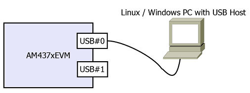
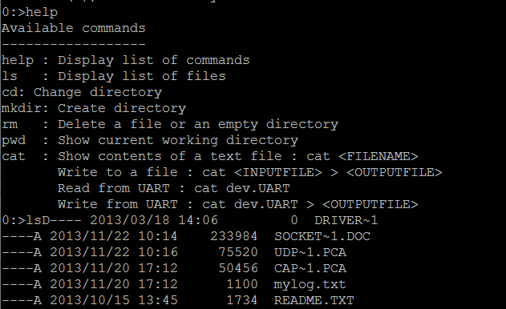
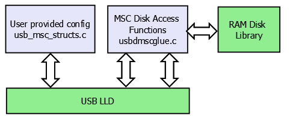
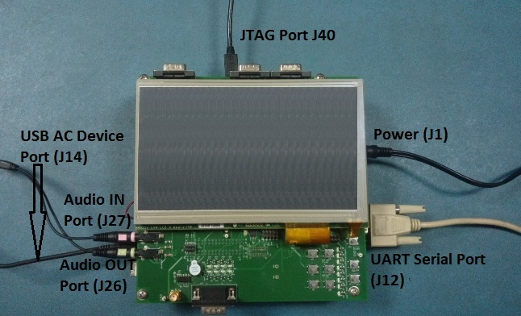
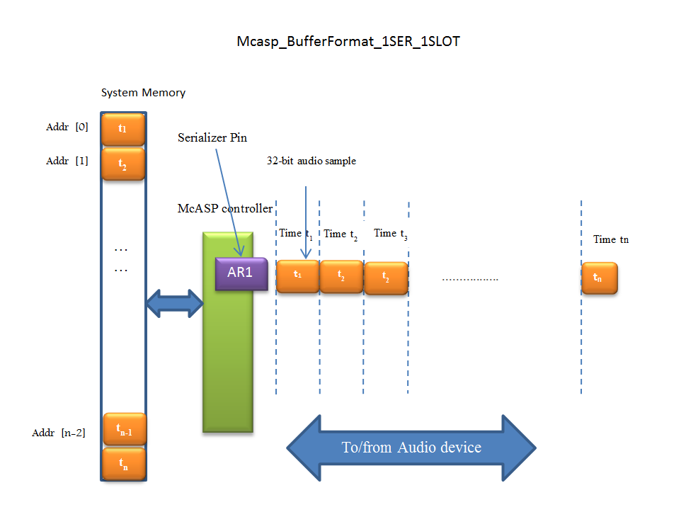
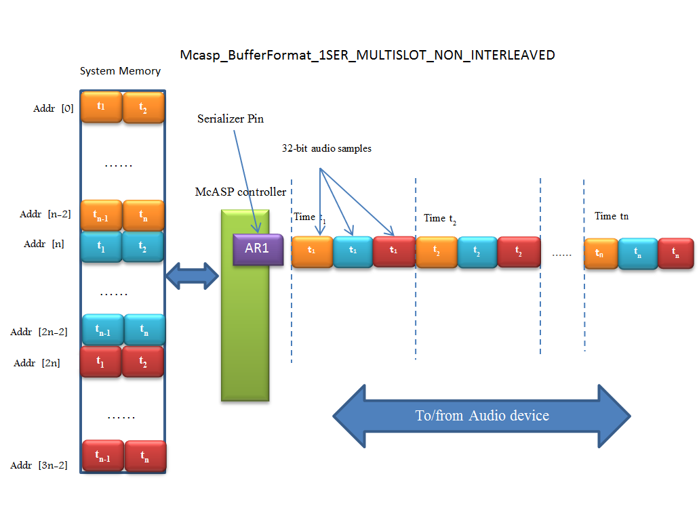
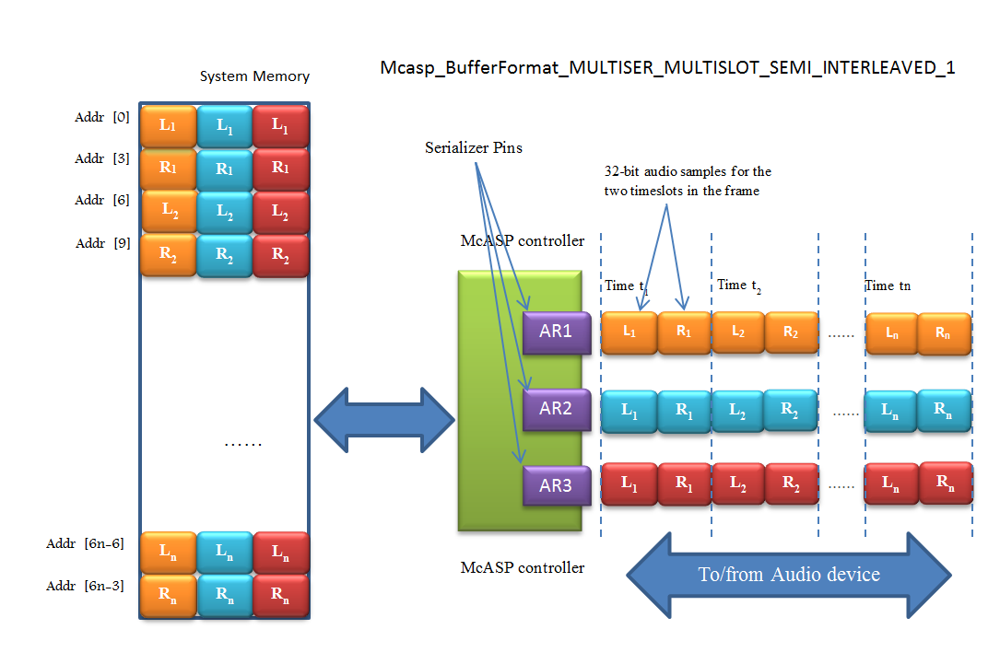
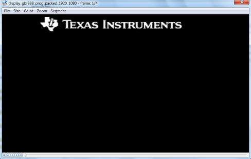
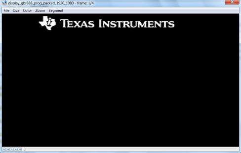

6.1. CSL¶
Overview
The Chip Support Library constitutes a set of well-defined APIs that abstract low-level details of the underlying SoC device so that a user can configure, control (start/stop, etc.) and have read/write access to peripherals without having to worry about register bit-field details. The CSL services are implemented as distinct modules that correspond with the underlying SoC device modules themselves. By design, CSL APIs follow a consistent style, uniformly across Processor Instruction Set Architecture and are independent of the OS. This helps in improving portability of code written using the CSL.
CSL is realized as twin-layer – a basic register-layer and a more abstracted functional-layer. The lower register layer comprises of a very basic set of macros and type definitions. The upper functional layer comprises of “C” functions that provide an increased degree of abstraction, but intended to provide “directed” control of underlying hardware.
It is important to note that CSL does not manage data-movement over underlying h/w devices. Such functionality is considered a prerogative of a device-driver and serious effort is made to not blur the boundary between device-driver and CSL services in this regard.
CSL does not model the device state machine. However, should there exist a mandatory (hardware dictated) sequence (possibly atomically executed) of register reads/writes to setup the device in chosen “operating modes” as per the device data sheet, then CSL does indeed support services for such operations.
The CSL services are decomposed into modules, each following the twin-layer of abstraction described above. The APIs of each such module are completely orthogonal (one module’s API does not internally call API of another module) and do not allocate memory dynamically from within. This is key to keeping CSL scalable to fit the specific usage scenarios and ease the effort to ROM a CSL based application.
In general for application recommended interfaces to be used will be driver API. CSL Functional layer APIs could be used for low-level access when required. CSL Register layer memory map is available for being used under rare cases in application when required.
The source code of the CSL is located under $(TI_PDK_INSTALL_DIR)\packages\ti\csl directory.
AM335x/AM437x
The CSL component of AM335x/AM437x Processor SDK is referred as StarterWare in the legacy baseline releases.To maintain backward compatibility for existing applications on AM335x/AM437x SOCs, StarterWare low level package is retained. Customers are recommended to use driver interfaces for ease of migration of application software across SOCs.
Chip Support Library/DAL Summary |
|
|---|---|
Component Type |
Library |
Install Package |
PDK |
Install Directory |
pdk_AMX_<version>\packages\ti\starterware |
Endian Support |
Little |
Linker Path |
PDK_INSTALL_DIR\packages\ti\starterware\binary |
Include Paths |
PDK_INSTALL_DIR\packages\ti\starterware\include |
6.1.1. AM57x/K2x/C66x/C674x¶
6.1.1.1. Application Integration¶
CSL is common package supporting multiple devices.Software layer using CSL source would need to pass compile time define -DSOC_XXX. Refer ticslsoc.h for list of devices/SOC’s
Refer list of APIs/interfaces available under <PDK_INSTALL_DIR\packages\ti\csl> directory.
Chip Support Library Summary |
|
|---|---|
Component Type |
Library |
Install Package |
PDK |
Install Directory |
PDK_INSTALL_DIR\packages\ti\csl |
Endian Support |
Little |
Linker Path |
PDK_INSTALL_DIR\packages\ti\csl |
Include Paths |
$(TI_PDK_INSTALL_DIR)\packages\ |
Reference Guides |
See docs under Install Directory |
6.1.2. CSL-FL EXAMPLES¶
These are example projects to test the functionality of API in CSL-FL layers. The following is the list of CSL-FL test examples which are supported with the CSL library:
DCAN
EDMA
GPIO
MAILBOX
I2C
QSPI
WDTIMER
MMCSD
MMU
SPINLOCK
UART
ECC : Limited to applicable SOC’s/Boards:idkAM574x
GPMC : Limited to a15 core on idkAM572 and evmAM572x
In order build the projects:
Navigate to pdk_[soc]_[version]\packages
Run pdksetupenv.bat (windows) OR pdksetupenv.sh (linux).
Navigate to pdk_[soc]_[version]\packages\ti\csl
All CSL-FL examples can be cleaned and rebuilt with the following commands on windows:
C:\ti\pdk_[soc]_[version]\packages\ti\csl>gmake app_clean
C:\ti\pdk_[soc]_[version]\packages\ti\csl>gmake apps
All CSL-FL examples can be cleaned and rebuilt with the following commands on linux:
~/ti/pdk_[soc]_[version]/packages/ti/csl$ make app_clean
~/ti/pdk_[soc]_[version]/packages/ti/csl$ make apps
All the output binary files will be generated in common location i.e. pdk_[soc]_[version]\packages\ti\binary\[EXAMPLE]\bin\[BOARD]\
DCAN RTOS example
TI RTOS support is available for CSL DCAN example on AM572x platform. Refer to the readme document at below path for more details.
<PDK Root>/packages/ti/csl/example/dcan/dcanLoopback
6.2. UART¶
6.2.1. Overview¶
6.2.1.1. Introduction¶
Driver enables UART’s available on SOC for reading and writing to any peripherals on board. Additionally it supports simple APIs for Console/STDIO operations.
Modes of Operation
Following modes of operations are supported
UART_MODE_BLOCKING: In this mode, read and write APIs, blocks on semaphore until required operation is complete. By default, UART driver operates in blocking mode. In this mode, code execution of a task blocks until UART transaction is complete. While transaction is in progress additional tasks pending requests will remain in blocked state waiting for semaphore.
UART_MODE_CALLBACK: In this mode, read and write operation returns immediately. On trigger of hardware Interrupt (hwi) callback function gets triggered.
6.2.2. User Interface¶
6.2.2.1. Driver Configuration¶
Board Specific Configuration
All board specific configurations eg:enabling clock and pin-mux for UART pins are required before calling any driver APIs.By default Board_Init() API supports all initialization sequence for TI supported EVMs. In addition it initializes UART instance for Console/STDIO.Refer Processor SDK RTOS Board Support for additional details.Once board specific configuration is complete UART_init() API can be called to initialize driver.
UART Configuration Structure
The UART_soc.c file binds driver with hardware attributes on the board through UART_config structure. This structure must be provided to UART driver. It must be initialized before the UART_init() function is called and cannot be changed afterwards. For details about individual fields of this structure, see the Doxygen help by opening PDK_INSTALL_DIRpackagestidrvuartdocsdoxygenhtmlindex.html.
6.2.2.2. APIs¶
API reference for application:
#include <ti/drv/uart/UART.h>
STDIO API reference for application:
#include <ti/drv/uart/UART_stdio.h>
Open UART
There are three ways to open a UART instance:
UART_open()
...
Board_init(boardCfg);
...
UART_socGetInitCfg(UART_INSTANCE, &uart_cfg);
...
UART_socSetInitCfg(UART_INSTANCE, &uart_cfg);
...
UART_Params_init(¶ms);
...
handle = UART_open(UART_INSTANCE, ¶ms);
At this point UART driver is ready for data transfer on specific instance identified by handle. Application can call UART_read/write API for read/write operation
UART_stdioInit() using the default UART parameters
...
Board_init(boardCfg);
...
UART_socGetInitCfg(UART_INSTANCE, &uart_cfg);
...
UART_socSetInitCfg(UART_INSTANCE, &uart_cfg);
...
UART_stdioInit(UART_INSTANCE);
At this point UART driver is ready for data transfer on specific instance. Application can call UART_printf/scanFmt API for read/write operation
UART_stdioInit2() using Application specified UART parameters
...
Board_init(boardCfg);
...
UART_socGetInitCfg(UART_INSTANCE, &uart_cfg);
...
UART_socSetInitCfg(UART_INSTANCE, &uart_cfg);
...
UART_Params_init(¶ms);
...
UART_stdioInit2(UART_INSTANCE, ¶ms);
At this point UART driver is ready for data transfer on specific instance. Application can call UART_printf/scanFmt API for read/write operation
Read/Write APIs
Interrupt:
UART_read(handle,scanPrompt, sizeof(scanPrompt));/* Read API */
...
UART_write(handle, bufferPrompt, sizeof(bufferPrompt));/* Write API */
Or
UART_transactionInit(&transaction);
transaction.buf = (void *)scanPrompt;
transaction.count = sizeof(scanPrompt);
UART_read2(uart, &transaction);
...
UART_transactionInit(&transaction);
transaction.buf = (void *)bufferPrompt;
transaction.count = sizeof(bufferPrompt);
UART_write2(uart, &transaction);
Polling:
UART_readPolling(handle,scanPrompt, sizeof(scanPrompt));/* Read Polling mode API */
...
UART_writePolling(handle, bufferPrompt, sizeof(bufferPrompt));/* Write Polling API */
DMA Usage :
UART driver supports DMA operations to transfer data between
Memory and RX FIFO for read transfer
Memory and TX FIFO for write transfer.
DMA Driver is DMA family IP (EDMA and UDMA) and UART IP (V0 and V1) specific. Refer soc/dma/v#/UART_dma.c for these operations. Application need to create DMA handle and update the configuration before UART_init() API.
uartInitCfg[UART_INSTANCE].edmaHandle = UartApp_edmaInit();/* For AM/K1/K2 devices */
or
uartInitCfg[UART_INSTANCE].udmaHandle = UartApp_udmaInit();/* For K3 devices */
UART_init();
Refer “UART_BasicExample_[SOC]_[cpu]DMATestproject” or “UART_DMA_[evm]_[cpu]TestApp” for additional reference. Refer SDK Release Note for supported EVMs.
6.2.3. Application¶
6.2.3.1. Examples¶
Name |
Description |
Expected Results |
SoC Supported |
Build Type |
|---|---|---|---|---|
UART_Example application |
Example demonstrating simple UART use case. Reference example for developers |
Application prompts user to enter input data in console. User can enter up to 16 characters or terminate with enter key.Application echoes back characters. |
AM335x, AM437x, AM571x, AM572x, AM574x, k2g, k2hk,k2l,k2e,k2l c6657,c6678 omapl137, omapl138, |
CCS project |
UART_TestApplication |
Unit Test application to test all APIs |
User can enter up to 16 characters using serial console.Application echoes back |
AM335x,AM437x,AM571x AM572x,AM574X k2g,k2hk,k2l,k2e,k2l c6657,c6678 omapl137,omapl138 |
CCS project |
am65xx |
makefile |
|||
UART_DMATestApplication |
Unit Test application with DMA mode. |
User can enter up to 16 characters using serial console.Application echoes back |
AM335x,AM437x,AM571x AM572x,AM574X k2g,k2hk,k2l,k2e,k2l c6657,c6678 omapl137,omapl138 |
CCS project |
am65xx |
makefile |
|||
UART_SMP_TestApplication |
Unit Test application to test all APIs in SMP mode (A15 & A53 cores) |
User can enter up to 16 characters using serial console.Application echoes back |
AM572x-EVM |
CCS project |
am65xx |
makefile |
|||
UART_SMP_DMATestApplica tion |
Unit Test application in SMP mode with DMA enabled (A15 & A53 cores) |
User can enter up to 16 characters using serial console.Application echoes back |
AM572x-EVM |
CCS project |
am65xx |
makefile |
6.2.4. Building UART examples¶
Makefile based examples and dependent libraries can be built from the top level or module level UART makefile, refer to the Processor SDK RTOS Getting Started Guide for details of how to setup the build environment. Once you have setup the build environment, issue the following commands:
To build and clean libs/apps from top-level makefile:
cd <pdk>/packages
make uart
make uart_clean
To build and clean libs/apps from module-level makefile:
cd <pdk>/packages/ti/drv/uart
make all
make clean
RTSC CCS project based examples are built from CCS
cd <pdk>/packages
./pdkProjectCreate.sh [soc] [board] [endian] uart [project type] [processor] [SECUREMODE=<yes/no>]
Import and build CCS Project from <pdk>/packages/MyExampleProjects/
6.2.5. Additional References¶
Document |
Location |
API Reference Manual |
$(TI_PDK_INSTALL_DIR)/packages/ti /drv/gpio/docs/doxygen/html/index .html |
Release Notes |
$(TI_PDK_INSTALL_DIR)/packages/ti /drv/gpio/docs/ReleaseNotes_UART _LLD.pdf |
6.3. USB¶
6.3.1. Overview¶
6.3.1.1. Driver Overview¶
PDK USB driver (USB LLD) provides the following USB class/functions while isolating application from the complexity of low level USB and USB class protocols:
USB device Mass Storage Class
USB host Mass Storage Class
USB device Audio Class
USB generic bulk device class
In rest of the page AM437x EVM is being refered as an example. Please check Release Notes for list of supported EVMs for driver.
Modes of Operation
USB device Mass Storage Class
USB device Mass Storage Class with RAM DISK
In this mode, a user-selected USB instance of the EVM will be working in device mode and will behave like a USB thumb drive. It uses part of the EVM DDR memory and exposes it as a physical storage for another USB host application. After the host PC enumerates this EVM-thumb drive, the PC will see a USB storage device. This EVM-thumb drive is not yet formatted with any file system and requires user to format it before use.
The following screen shots show what one would expect when running the device mode demo application and plugging in a USB cable from the EVM USB port #0 to a PC running Windows
Printout from demo application:

The MSC device is detected in Windows, and a FAT formatted USB drive named “PDK-USBDEV” should be seen in the “Window Explorer”. The content of the drive is just a readme.txt file. This USB drive can be manipulated like any other removable USB drive.

Windows might show a message saying it should be scanned and fixed. We can just ignore it and just continue without scanning.
USB device Mass Storage Class with MMCSD card
This example acts like a USB - MMCSD card reader. The example exposes the EVM’s MMCSD card to the Host PC via USB MSC. The Host PC can manipulate files on the attached MMCSD card on the EVM. This example is currently supported on AM335GP EVM. This is how it looks. Its code is similar to that of the USB device MSC example but with the call back functions calling MMCSD API’s instead of RamDisk APIs

USB host Mass Storage Class
In this mode, the USB instance will act as a USB host communicating with a USB device that supports Mass Storage Class function (USB thumb drive or a small USB hard drive). The demo example code utilizes a shell interface via the EVM via UART for interaction with the example. The shell provides some basic commands to manipulate the content of the attached USB disk drive.

Screenshot of a MSC host mode example running in RTOS after plugging in a USB thumb drive into USB port #1
USB device Audio Class
In this mode, USB instance of the EVM will be working in device mode and will behave like a USB headset with MIC. It uses audio codec on the EVM for running playback and record initiated by the USB host. McASP module will be used to transfer the data between USB device and audio codec on the board. EVM will appear as a new USB audio device on the host PC. Changing the default audio device on the host PC to EVM USB device will allow the playback and record operations between EVM and USB host. This mode of operation is currently supported on AM335X GP EVM, OMAP-L137 EVM and OMAP-L138 LCDK.

USB generic bulk device class
In this mode, a user-selected USB instance of the EVM will be working in device mode. The mentioned USB device will show up in the host PC as a generic USB bulk device with one single interface containing a bulk IN and a bulk OUT endpoints. The configuration and interface descriptors published by the device contain vendor-specific class identifiers, so an application on the host will have to communicate with the device using either a custom driver or a subsystem such as WinUSB or libusb-win32 on Windows (or just libusb on Linux) to read and write to the device.
Running USB bulk device demo application
The bulk demo application requires a host PC with USB host plugged to the USB device port on the EVM. Depending on the platform, the USB device port might be USB port #0 or #1.
Please refer to PDK user guide for how to generate USB example projects. Once the demo application is loaded and run, the EVM UART console shows the following:

A Python host PC example application is provided in ti/drv/usb/example/usb_dev/bulk/usb_dev_bulk_host_application.py
The example Python script requires PyUSB to run. On Linux host, proper UDEV rule is also required in order to access the USB bulk device as non-sudo user. The script itself also lists the requirements to run it as well as what command options available. The example UDEV rule is also placed in the same place where the Python script is located. It does the following:
The Python script looks for the USB device with the example PID:VID,
Sends an ASCII text string to the USB bulk demo application running on the EVM
Expects the same text string with reversed case letter returned back, and also
Verifies the received data with the data that it has sent and report the test result.
A screen shot of what the Python test script outputs

The USB bulk demo application configures the USB endpoints as high speed endpoints with 512B packet size.
6.3.2. User Interface¶
6.3.2.1. Driver Configuration¶
Data Structures:
tUSBDMSCDevice: Defined in usbdmsc.h. It is used in USB device mode application. This structure must be filled with the intended vendor and product ID as well as other product information and also the function pointers to functions that handle the disk functions (open/read/write/close, etc.). These product information will show up in the device and interface USB descriptors that are used during device enumeration. This device MSC class data is then assigned to the field usbClassData of the USB_Params bellow.
USB params: USB_Params structure is declared in usb_drv.h. This structure must be provided to the USB driver. It must be initialized before the USB_open() function is called.
USB APIs: main USB LLD and USB MSC API’s are declared in usb_drv.h and usbdmsc.h and usbhmsc.h provided in the root USB LLD directory.
General USB LLD expectations:
The USB LLD will setup appropriate USB clock and power domains for the particular SOC being in used as part of its “device specific peripheral” functions.
After the USB_open() is called, the driver expects the application code to sets up USB interrupts with the interrupt handler being the USB LLD provided interrupt handler. Then the application have to call the USB LLD provided API USB_irqConfig() which enables USB module’s interrupts. In device mode, both USB core and USB misc interrupts are used in the USB device MSC application. In host mode, the USB host MSC only uses USB core interrupts.
After these steps, application code then can expect to have USB enumeration done and start USB transfer through the provided APIs.
6.3.2.2. API Call Flow¶
USB Device MSC
The example application code uses the USB library, configures it as a USB device with MSC function. The example also provides functional codes that access a RAM disk (included from the Utils library in the included Starterware). The LLD calls these MSC back-ends functions to access the RAM disk. User can replace these functions with other functions that access other types of media or devices (MMCSD for example). The RAM disk image provided in the example demo application is not currently formatted. Thus the once enumerated, the PC will require the USB disc to be formatted before use.
Below diagram is the sequence of API calls that starts the USB device MSC application. All USB events are handled internally in the LLD and in the interrupt context.

User provided disk functions will be called from the LLD to handle the actual physical disk access. The overview of USB Device MSC example application:
The content of the file: usb_msc_structs.c can be replaced with customer USB device information (PID/VID, device names, etc.)
USB Host MSC
The LLD also provides a USB host MSC example. The USB LLD is acting as a USB host, waiting for a USB thumb drive/memory stick to be plugged in. A console with a simple shell command is also provided so that the demo example can display and manipulate content of the USB device.
The following is how the USB host MSC example demo is organized:

The following is the sequence of the APIs that were used:

USB Device Audio
The example application code uses the USB library, configures it as a USB device with Audio class function. USB LLD along with the application enumerates as the USB audio class device and allows accessing the audio ports on the EVM from USB host. It supports audio playback and record operations.
Below diagram is the sequence of API calls that starts the USB device audio application. All USB events are handled internally in the LLD and in the interrupt context.

USB Device Bulk
Sequence of API calls as long as what the example application looks like are described bellow

Main APIs that are used to read/write from and to the USB bulk device are USBD_bulkRead() and USBD_bulkWrite().
These two functions will block the caller until they finish their operation.
The main application should wait for about 500ms after the USB host sends the SetConfig request to make sure that the enumeration is completely finished before calling USBD_bulkRead/Write functions
6.3.3. Application¶
6.3.3.1. Examples¶
Examples are CCS projects. Generated with pdkProjectCreate scripts. Please refer Processor SDK RTOS Getting Started Guide for how to create and build examples projects
Example Name |
EVM’s supported |
Notes |
|---|---|---|
USB_DevMsc_mmcsd |
AM335GP EVM, BeagleBoneBlack, AM572 EVM |
eMMC is used on AM572 and BealgeBoneBlack examples This example can be used to format eMMC, just like any other USB storage device |
USB_DevMsc |
AM335GP, AM437xGP, OMAP137EVM, OMAPL138LCDK, AM57xIDK, AM572 EVM, K2G EVM, DRA7xx EVM, AM65x EVM/IDK |
OMAPL13 LCDK host and device examples share the same USB port. |
USB_HostMsc |
AM335GP, AM437xGP, OMAP136EVM, OMAPL137LCDK, AM57xIDK, K2G EVM, DRA7xx EVM, AM65x EVM/IDK |
OMAPL13 LCDK host and device examples share the same USB port. Need OTG cable for EVM with OTG port to work in host mode. USB3.0 host supported on AM572IDK. |
USB_DevAudio |
AM335xGP,OMAPL137 EVM,OMAPL138 LCDK |
Refer to Hardware Setup and How to Run the Demo sections below |
USB_DevBulk |
AM335xGP, AM437xGP, AM572xIDK, AM571xIDK, AM574xIDK, K2GEVM, OMAPL137EVM, OMAP138LCDK, AM654x EVM/IDK |
6.3.3.2. Test Application¶
USB test applications are built using makefile. Some of the test application are RTOS/BIOS apps, other are bare metal apps. They are replica of the USB examples but built by makefile instead of CCS projects.
Refer to the Processor SDK RTOS Getting Started Guide for details of how to setup the build environment. Once you have setup the build environment, issue the following commands:
cd <pdk>/packages/
To build: make usb
To clean: make usb_clean
Test applications are then under (TI_PDK_INSTALL_DIR)/packages/ti/binary/
Test App Name |
EVM’s supported |
Bare metal |
Notes |
|---|---|---|---|
USB_Baremetal_DevMsc_TestApp |
AM65xx EVM/IDK |
yes |
Equivalent to DevMsc example |
USB_Baremetal_HostMsc_TestApp |
AM654x EVM/IDK |
yes |
Same function as HostMsc example |
USB_HostMsc_TestApp |
AM654x EVM/IDK |
no |
Same as HostMsc example |
USB_DevMsc_TestApp |
AM654x EVM/IDK |
no |
Same as DevMsc example |
USB_DevBulk_TestApp |
AM654x EVM/IDK |
no |
Same as DevBulk example |
usb_d_msc_<platform> |
AM335xGP,AM437xEVM OMAPL137 EVM OMAPL138 LCDK |
yes |
Same as USB DevMsc example. Build by going to example/usb_dev/msc/ build/<platform> |
usb_h_msc_<platform> |
AM335xGP,AM437xEVM OMAPL137 EVM OMAPL138 LCDK |
yes |
Same as USB HostMsc example Build by going to example/usb_dev/msc/ build/<platform> |
- Both examples and test applications can be loaded and run on their intended EVM via
CCS JTAG connector, or
Via SBL: the “app” file under CCS project’s debug directory (<PDK_INSTALL_PATH/MyExampleProjects/<ExampleProjectDirectory>/Debug>) is SBL loadable file of the built project.
– Project Memory layout must be considered and following SBL guideline so that examples can run safely via SBL. Please refer to SBL Component for more detail
6.3.4. Benchmark tool¶
6.3.4.1. USB host MSC¶
To measure the USB host MSC throughput, a new command (bm) is added into the USB host mode example (or test application).
This command is to run with a good known fast USB thumb drive attached to the USB host port.
The throughput measurement result varies greatly depends on which USB device is plugged in and which filesystem is used
The USB drive needs to be formated as FAT32 (since the USB host example only supports FAT filesystem) and has at least 100MB free space. Fast blank USB thumb drive is recomended.
The command, when run, writes a 100MB file into the thumb drive and measures the time it takes to do so. It then reads back this 100MB file with time measurement to find the read throughput.
The write and read are done in block size of 100KB, 256KB, 1MB, and 5MB. It prints throughput measurements for each of these blocks.
This command is only supported in AM65xx at the moment.
Syntax:
bm <test_file_name>
6.3.4.2. USB device MSC¶
To measure USB device MSC throughtput a simple linux shell script usb_dev_msc_perf.sh is provided in PDK/packages/ti/drv/usb/example/usb_dev/msc/
This script assumes the USB Dev MSC drive (PDK-USBDEV) is already mounted on the Linux host PC (under /media/$USER/PDK-USBDEV) when it runs
It uses “dd” command to report the thoughput
Tested on Ubuntu 16.04. Different version of Linux might mount the MSC drive at different place. Please adjust the script accordingly.
The script writes a file to the PDK-USBDEV drive with a number of blocksize. By default it creates a 15MB test file by writing 150 blocks of 100K each (which would fit inside the 16MB RAM disk provided by the USB Dev MSC.)
User is free to change the block size and number of blocks for the test. However it doens’t check if the end result file would fit the PDK-USBDEV drive or not.
Syntax:
usb_dev_msc_perf.sh [<blocksize> <count>]
6.3.5. Hardware Setup¶
This section provides the specific HW setup required to run the USB examples.
USB Device Audio
USB audio class demo requires additional setup for running playback and record operations. Below sections provide the setup details for each platform supported.
AM335x GP EVM
OMAPL137 EVM

OMAPL138 LCDK

How to Run the Demo
Follow this link Processor SDK RTOS Setup CCS to get target configuration setup correctly.
Use CCS to import the USB_DevAudio_<board>_<core>ExampleProject under pdk_<platform>_<version>/packages/MyExampleProjects.
Build the imported project. the OUT file will be at pdk_<platform>_<version>/packages/MyExampleProjects/USB_DevAudio_<board>_<core>ExampleProject/Debug.
Make the HW connections as shown in Hardware Setup section
Launch the target configuration for the EVM from CCS 7.x.
Connect to ARM or DSP core as applicable.
Load the pdk_<platform>_<version>/packages/MyExampleProjects/USB_DevAudio_<board>_<core>ExampleProject/Debug/USB_DevAudio_<board>_armExampleProject.out.
Run the program (loaded previously) by pressing F8
The CCS ConsoleIO will display the following:

Right click on the “Speaker Icon” on the USB Host (right side of the toolbar), then select “Playback devices”
Wait until the “Speakers USB Audio Device” shows up in the “Sound” dialog

Select the “Speakers USB Audio Device” in the “Sound” dialog, then click the “Configure”
Click the “Test” in “Speaker Setup”, you should hear the testing tone in the headphone connected to the EVM
Note
‘board’ can be evmAM335x, evmOMAPL137 or lcdkOMAPL138
‘core’ can be arm or c674x
6.4. PCIe¶
6.4.1. Overview¶
PCIe module supports dual operation mode: End Point (EP or Type0) or Root Complex (RC or Type1). This driver focuses on EP mode but it also provides access to some basic RC configuration/functionality. For RC this is the lowest level; additional software is needed to perform generic enumeration of third party devices.
The PCIe subsystem has two address spaces. The first (Address Space 0) is dedicated for local application registers, local configuration accesses and remote configuration accesses. The second (Address Space 1) is dedicated for data transfer. This PCIe driver focuses on configuration of the interface and sending/receiving interrupts via Address Space 0. Data is transferred outside the scope of the LLD using CPU or EDMA through the data area.
There are three revisions of the pcie hardware. The first, v0, in KeyStone devices (C66x, K2x). The second, v1, is in AM57xx devices. The third, v2, is in AM65xx devices. The LLD abstacts the configuration of standards-based PCIe registers (Type 0, Type 1 and Capabilities registers) so same user code can be used on both device types. However, there are different interfaces for the registers not based on PCIe standards (port logic and ti-conf which generally covers interrupts and address translation). That portion of user code needs to differ between C66x/K2x, AM57xx, and AM65xx devices.
The example includes configuration of one SoC as EP and a second as RC. It then performs a simple CPU-based memory transfer (EDMA can be used via the same addresses used by the CPU), and interrupt generation (from EP) and reception (to RC). It also shows differences in user code required to support both C66x/K2x, AM57xx and AM65xx devices.
Differences in Operation between C66x/K2x and AM57xx devices
C66x/K2x, AM57xx, and AM65xx are functionally identical, except that interrupts are handled by example and lld only on AM57xx. Also older devices only support gen 1/2, while AM65xx supports gen 3.
Modes of Operation
The LLD is intended to bring up the PCIe peripheral, open memory mappings, and send/receive interrupts.
Root Complex (RC)
The PCIe peripheral can be used as a root complex. One or more other endpoints can be connected (more than one requires a PCIe switch on the board). The LLD configures the peripheral in RC mode. It doesn’t attempt to emulate the full enumeration capability of a Linux driver. Instead the user will need to supply code specific to each endpoint they intend to support.
Endpoint (EP)
The PCIe peripheral can be used as an endpoint. This is the more intended usecase for the LLD. Once the link is initialized, the LLD can provide data addresses and send interrupts to the RC.
Interrupts
The example for AM57XX provides code to send interrupts from an endpoint, and the LLD/example together contain code to receive/demux the interrupts (both MSI and Legacy) on an RC.
6.4.2. User Interface¶
6.4.2.1. Driver Configuration¶
Board-specific configuration
PCIe’s board specific configuration is in the example in PDK_INSTALL_DIR/packages/ti/drv/pcie/example/sample/am57x/src/pcie_sample_board.c. Calling sequence is in example and repeated below.
PCIe configuration structure
The pcie_soc.c binds the driver to the hardware on the board. It is passed into the driver via the call to Pcie_init().
6.4.2.2. API Call Flow¶
The API call flow is covered in pcie_sample.c.
The overall components are:
Initialize the driver
Initialize the SERDES and Power the peripheral (see example code for order for each device)
Configure RC or EP symmetrically to talk to another similar device
Perform data IO and interrupt.
6.4.3. Application¶
6.4.3.1. Examples¶
Name |
Description |
EVM Configuration |
Expected Results |
|---|---|---|---|
PCIE_idkAM57[124]x*ExampleProject |
2-device PCIe connection |
IMPORTANT: Cable must be MODIFIED in order to avoid damaging the clock drivers in the SoC! Connect two like AM57xx IDK EVMs J22 MODIFIED male-male crossover PCIe x1 or x4 cable and optional straight-through extender. For AM572x/AM574x we used a one-lane cross cable; for AM571x we used a 4-lane cross cable. | Projects available for C66, A15, and M4. |
AM572x/AM574x or AM571x EVM : One board is EP/other is RC; link is established and data/interrupts exchanged. All printed output goes to the serial console. |
PCIE_sample_ExampleProject (for AM65xx IDK) |
2-device PCIe connection |
IMPORTANT: Cable must be MODIFIED in order to avoid damaging the clock drivers in the SoC! Connect two like AM65xx IDK EVMs PCIe using a MODIFIED male-male crossover PCIe x1 or x4 cable and optional straight-through extender. We used a one-lane cross cable. Executables for A53 (mpu) and R5 (mcu) available. Note: this is
NOT a CCS
project. It
is built from
running
|
AM65xx IDK One board is EP/ other is RC; link is established and data exchanged. All printed output goes to the serial console. |
PCIE_evmK2G*ExampleProject |
2-device PCIe connection |
IMPORTANT: Cable must be MODIFIED in order to avoid damaging the clock drivers in the SoC! Connect two K2G EVMs J5 using a MODIFIED male-male crossover PCIe x1 cable and optional straight-through extender. We used a one-lane cross cable. Ensure that jumper J15 is positioned to the left hand two pins as viewed with “J15” silkscreen right side up (pin 0 isn’t clearly marked). In the right hand position, the PCIe PLL will NOT get clock. Projects available for C66 and A15. |
K2G EVM : One board is EP/other is RC; link is established and data is exchanged. All printed output goes to serial console. |
PCIE_idkAM571x_*armEdmaPktExampleProject (Available starting in Processor-SDK 3.1) |
Packet Exchange over PCIe Benchmark |
IMPORTANT: Cable must be MODIFIED in order to avoid damaging the clock drivers in the SoC! Connect two like >=REV1.3A AM571x IDK EVMs J22 using a MODIFIED male-male crossover PCIe x4 cable and optional straight-through extender. We used a 4-lane cross cable. Projects available for A15 only. >=REV1.3A EVM required (for x4 PCIe connectors). |
AM571X >=REV1.3A IDK : One board is EP/other is RC; link is established and data is exchanged. Produces same output as standard ExampleProject, except EP also prints packet exchange benchmark results. |
Remaining PCIE_*ExampleProject |
2-device PCIe connection |
Connect two like C66x/K2x (except K2G, see previous row) EVMs using an AMC breakout card. For K2L, it is necessary to configure the mux via the BMC console with “interface_muxs el pcie” command. Projects available for A15 and/or C66 as present in each device. |
6678, 6657, K2E, K2H, K2L : One board is EP/other is RC; link is established and data exchanged. For A15 projects, all printed output goes to serial console. For C66 projects, all printed output goes to CCS console. |
PCIE_Qos_ExampleProject (for AM65xx IDK) |
2-device PCIe connection |
IMPORTANT: Cable must be MODIFIED in order to avoid damaging the clock drivers in the SoC! Connect two like AM65xx IDK EVMs PCIe using a MODIFIED male-male crossover PCIe x1 or x4 cable and optional straight-through extender. We used a one-lane cross cable. Executables for A53 (mpu) and R5 (mcu) available. Note: this is
NOT a CCS
project. It
is built from
running
|
AM65xx IDK One board is EP/ other is RC; link is established and data exchanged with TC0/TC1/TC2(DDR) /TC3(MSMC). Then PCIE CPU read latency with TC3 is measured with background PCIE read traffic over TC0 using DMA. All printed output goes to serial console. |
Quick setup of xds100 for two EVMs
create new target configuration using XDS100v2 and AM572x (or AM571x) from the basic tab.
Select Advanced tab.
Highlight the XDS100v2, and click the “new” button and add second XDS100v2.
Highlight the newly added XDS100v2, click the “add” button and select a second Am572x.
open command prompt, and run ticcs_basecommonuscifxds100serial to get your serial numbers
Highlight first XDS100v2, select “Debug Probe Selection” to “Select by Serial number” and enter one of the 2 serial numbers
Repeat second XDS100v2, setting to to the second serial number.
General instructions for configuring multiple EVMs with any emulator type are available in Debugging with Multiple Debug Probes
Detailed instructions to run example
Ensure 2 Like EVMs are connected with a x1 PCIe male/male cross cable (for AM5XX) or a breakout card (for C667x, C665x, K2x)
Build project(s) appropriate for your EVM. Projects for A15 and C66 are provided based on core types available on each device.
Load via jtag either the ARM or DSP projects (but don’t mix and match) onto the first arm or dsp core of each the 2 EVMs. Same .out file supports both RC and EP. Use an “expressions” window to set PcieModeGbl to PCIE_RC_MODE on one EVM (it makes that EVM RC). Leave the second EVM alone (pcie_EP_MODE). Run the loaded cores. See table above to determine whether output is expected on serial console or CCS console.
Sample example output
Note that output will vary slightly based on device type. The following is from A57XX. The output from the RC and EP are interleaved since this is run from a 2*XDS1000 double config as described in Quick setup of xds100 for two EVMs
**********************************************
* PCIe Test Start *
* RC mode *
**********************************************
Version #: 0x02020003; string PCIE LLD Revision: 02.02.00.03:Dec 24 2015:17:38:37
PCIe Power Up.
PLL configured.
Successfully configured Inbound Translation!
Successfully configured Outbound Translation!
Starting link training...
**********************************************
* PCIe Test Start *
* EP mode *
**********************************************
Version #: 0x02020003; string PCIE LLD Revision: 02.02.00.03:Dec 24 2015:17:38:37
PCIe Power Up.
PLL configured.
Successfully configured Inbound Translation!
Successfully configured Outbound Translation!
Starting link training...
Link is up.
Link is up.
End Point received data.
End Point sent data to Root Complex, completing the loopback.
EP sending interrupts to RC
Root Complex received data.
RC waiting for 10 of each of 2 types of interrupts
RC got all 20 interrupts
Test passed.
End of Test.
6.4.4. Debug FAQ¶
If example fails to get link up
Confirm that male/male cross cable or breakout board is correctly connected.
If running from ARM cores, confirm that immediately after reset/reload that both devices have PcieModeGbl=PCIE_EP_MODE. If the PCIE_RC_MODE seems to survive reset/reload, it seems to mean watch window failed to refresh. Click the “Refresh” button for the watch window and it should flip back to EP, where you can reset it to RC. Simply running will cause both sides to run as EP, which leads to test failure.
Confirm that one side of the example has PcieModeGbl=PCIE_RC_MODE and the other is PCIE_EP_MODE.
Note
When changing to RC you must click somewhere outside the expression value to make the modification for RC to “take effect”. Simply pressing F8 after modifying the value will run without actually modifying the variable! The modification will be done when the ARM or DSP is stopped, so everything looks right, except that the log will show “PCIe test start EP mode” twice instead of “PCIe test start EP mode” once and “PCIe test start RC mode” once.
How to debug common PCIe issues
Please refer to PCI Express (PCIe) FAQ for Keystone devices.
6.4.5. Additional References¶
Additional documentation can be found in:
Document |
Location |
Hardware Peripheral Users Guide |
|
API Reference Manual |
$(TI_PDK_INSTALL_DIR)/packages/ti /drv/pcie/docs/doxygen/html/index .html |
Release Notes |
$(TI_PDK_INSTALL_DIR)/packages/ti /drv/pcie/docs/ReleaseNotes_PCIE_LLD.pdf |
6.5. GPIO¶
6.5.1. Overview¶
6.5.1.1. Introduction¶
GPIO module allows application to manage General Purpose I/O instances and pins via simple portable APIs. Because of its simplicity, APIs are pin based and does not follow model of other drivers inside PDK which requires handle abstraction.
Modes of Operation
Following modes of operations are supported Input or Output Each gpio pin can be configured as either input: GPIO_CFG_INPUT or output: GPIO_CFG_OUTPUT. If it is configured as an output then pin level can be additionally configured
Interrupt support Each gpio pin can be configured to generate interrupts based on event type GPIO_CFG_IN_INT_XXX configuration. To generate interrupt, gpio pin has to be configured as input pin.
Driver Configuration
Board Specific Configuration
All board specific configurations like enabling clock and pin-mux are required before calling any driver APIs. By default Board_Init() API available under board module supports all initialization sequence for TI supported EVMs. In addition it initializes UART instance for Console/STDIO. Refer Processor SDK RTOS Board Support for additional details.
GPIO Configuration Structure
GPIO_soc.c binds driver with hardware attributes on the board. Hardware attributes includes base address, interrupt number etc. GPIO pin behavior can be configured statically, or alternatively dynamically during runtime.
GPIO_init () API triggers all static configuration information available through hardware attributes. Once initialization is complete additional APIs can be used to configure and access pins.
6.5.1.2. APIs¶
API reference for Application:
#include <ti/drv/gpio/GPIO.h>
Below sequence indicates API calling sequence for a simple use case of LED toggling
...
Board_init(boardCfg);
GPIO_init();
While(1)
{
GPIO_write(Board_LED1, GPIO_PIN_VAL_HIGH);
Delay();
GPIO_write(Board_LED1, GPIO_PIN_VAL_LOW);
Delay();
}
6.5.2. Application¶
6.5.2.1. Examples¶
Refer SDK Release Note for GPIO support across different EVMs.
Name |
Description |
Expected Results
|
SoC Supported |
Build Type |
|---|---|---|---|---|
GPIO_LedBlink |
Simple example demonstrating LED Toggling |
Following LED
blinks based on EVM
being used.
AM335x
ICEv2:
USER LED 1
AM437x
EVM:
USER LED 1
AM572x IDK :
STATUS LED 1 Yellow
AM572x GP
EVM : USER LED1
AM574x IDK :
STATUS LED 1 Yellow
AM572x GP
EVM : USER LED1
AM571x IDK :
Industrial LED 3
Red
K2H EVM:
USER LED 2 Blue
K2E EVM:
USER LED 1 Blue
K2G EVM:
USER LED 1 Yellow
AM65xx EVM:
USER LD16, LD17
|
AM335x, AM437x, AM571x, AM572x, AM574x, k2g, k2hk, k2l, k2e, c6657, c6678, omapl137, |
CCS project |
am65xx |
makefile |
Note
There are no user mode LEDs directly connected to GPIO pins on K2L, C6678 and C6657 EVMs.
6.5.3. Building GPIO examples¶
Makefile based examples and dependent libraries can be built from the top level or module level GPIO makefile, refer to the Processor SDK RTOS Getting Started Guide for details of how to setup the build environment. Once you have setup the build environment, issue the following commands:
To build and clean libs/apps from top-level makefile:
cd <pdk>/packages
make gpio
make gpio_clean
To build and clean libs/apps from module-level makefile:
cd <pdk>/packages/ti/drv/gpio
make all
make clean
RTSC CCS project based examples are built from CCS
cd <pdk>/packages
./pdkProjectCreate.sh [soc] [board] [endian] gpio [project type] [processor] [SECUREMODE=<yes/no>]
Import and build CCS Project from <pdk>/packages/MyExampleProjects/
6.5.4. FAQ¶
Is there any example using GPIO as input
Please refer to RTOS Customization: using an external input to trigger an interrupt on AM57x for details.
6.5.5. Additional References¶
Document |
Location |
API Reference Manual |
$(TI_PDK_INSTALL_DIR)/packages/ti /drv/gpio/docs/doxygen/html/index .html |
Release Notes |
$(TI_PDK_INSTALL_DIR)/packages/ti /drv/gpio/docs/ReleaseNotes_GPIO _LLD.pdf |
6.6. I2C¶
6.6.1. Overview¶
6.6.1.1. Introduction¶
I2C module provides an interface to any I2C-bus-compatible device accessible via I2C serial bus. External components attached to I2C bus can serially transmit/receive data to/from the CPU through two-wire interface. Driver supports three types of transfers in both I2C master mode and slave mode
Read
Write
Write followed by read
In addition driver supports following modes of operation:
I2C_MODE_BLOCKING: By default, driver operates in blocking mode. In blocking mode, a Task’s code execution is blocked until transaction is complete. This ensures only one transaction operates at a given time. Driver supports both interrupt or non-interrupt based blocking modes.
I2C_MODE_CALLBACK In callback mode, an I2C transaction functions asynchronously, which means that it does not block a Task’s code execution. After an I2C transaction is complete, I2C driver calls a user-provided hook function. Only interrupt based callback is supported.
Note
If I2C peripheral is in reset during a transfer, it can cause the I2C bus to hang. I2C V0 IP (Keystone SoCs) does not have hardware support to recover the I2C bus from hanging, user needs to power cycle the board as a workaround. For I2C V1 IP (AM3/4/5 SoCs), the application can call I2C_control() API and use I2C_CMD_RECOVER_BUS to recover the I2C bus.
Firmware
TI PRU-ICSS cores (Programmable Real-Time Unit Industrial Communication Subsystem) is firmware programmable and can take on various personalities. Processor SDK package includes I2C Firmware support. Refer I2C FW for additional details.
6.6.2. User Interface¶
6.6.2.1. Driver Configuration¶
Board Specific Configuration
All the board specific configurations eg:enabling and pin-mux of I2C pins should be performed before calling any driver APIs.By default Board_Init() API supports all initialization sequence for TI supported EVMs.Refer Processor SDK RTOS Board Support for additional details.
Once the board specific configuration is complete driver API I2C_init() can be called to initialize driver
I2C Configuration Structure
I2C_soc.c file binds driver with hardware attributes on the board through I2C_config structure. This structure must be provided to I2C driver. It must be initialized before the I2C_init() function is called and cannot be changed afterwards. For details about the individual fields of this structure, see the Doxygen help by opening PDK_INSTALL_DIR\packages\ti\drv\i2c\docs\doxygen\html\index.html.
6.6.2.2. APIs¶
API reference for application:
#include <ti/drv/i2c/I2C.h>
Sample code for initiating I2C transaction:
...
Board_init(boardCfg);
...
I2C_socGetInitCfg(peripheralNum, &i2c_cfg);
...
I2C_socSetInitCfg(peripheralNum, &i2c_cfg);
...
i2c = I2C_open(peripheralNum, &i2cParams);
...
...
/* Initiate I2C transfers. Refer Example for details
*/
I2C_transactionInit(&i2cTransaction);
transaction.masterMode = true;
...
...
transferOK = I2C_transfer(i2c, &i2cTransaction);
if (transferOK != I2C_STS_SUCCESS) {
/* I2C transaction failed */
}
6.6.3. Application¶
6.6.3.1. Examples¶
Refer Release Note for I2C support across different EVMs
Name
|
Description
|
Expected Results
|
SoC Supported |
Build Type |
|---|---|---|---|---|
I2C_EepromRead Example application |
Simple example to
read fixed number
of bytes from
EEPROM on board and
compares it with
expected data.
|
Following prints will
come on console based
on pass/fail
criteria:
Pass criteria:
EEPROM data matched
All tests have
passed.
|
AM335x, AM437x, AM571x, AM572x, AM574x, k2g, k2hk,k2l,k2e,k2l c6657,c6678 omapl137, |
CCS project |
I2C_TestApplication |
Driver Unit Test
application for
additional I2C
speed and other tests
|
Following prints will
come on console based
on pass/fail
criteria:
Pass criteria:
I2C Test: 100Kbps:
PASS
I2C Test: 400Kbps:
PASS
I2C Test: timeout
test passed
All tests have
passed.
|
AM335x, AM437x, AM571x, AM572x, AM574x, k2g, k2hk, k2l, k2e, c6657, c6678, omapl137, |
CCS project |
am65xx |
makefile |
|||
I2C_SMP_Test Application |
Driver Unit Test
application for
additional I2C
speed and other tests
with SMP enabled.
(A15 and A53 cores)
|
Following prints will
come on console based
on pass/fail
criteria:
Pass criteria:
I2C Test: 100Kbps:
PASS
I2C Test: 400Kbps:
PASS
I2C Test: timeout
test passed
All tests have
passed.
|
am572x-evm |
CCS project |
am65xx |
makefile |
|||
I2C_TemperatureSensor |
Example to get the
temperature value
from the temperature
sensor and displays
on the serial
console.
|
Following prints will
come on console based
on pass/fail
criteria:
Pass criteria:
Temperature =
“value in
centigrades” C
All tests have
passed.
|
AM572x, |
CCS project |
I2C_master/slave |
Application
demonstrates
master/slave
transfer of I2C.
Application use
case requires two
EVMs. One acts as
Master and the
other as slave. I2C
connections
information and
addtional details
are as follows:
AM57xx boards I2C bus
connection on J9
(master board <–>
slave board)
pin22 (SCL)<–>
pin22 (SCL)
pin24 (SDA)<–> pin24
(SDA)
pin21 (GND)<–> pin21
(GND)
K2G boards I2C bus
connection on J12
(master board <–>
slave board)
pin28 (SCL)<–>
pin28 (SCL)
pin30 (SDA)<–>
pin30 (SDA)
pin50 (GND)<–>
pin50 (GND)
OMAPL138/C6748
boards I2C bus
connection on J15
(master board <–>
slave board)
pin13 (SCL)<–>
pin13 (SCL)
pin15 (SDA)<–>
pin15 (SDA)
pin35 (GND)<–>
pin35 (GND)
Run
“I2C_Slave_<BoardTy
pe>_<arm/c66x/m4>Test
Project”
first on Slave EVM
and then
“I2C_Master_<BoardT
ype>_<arm/c66x/m4>Tes
tProject”
on Master EVM.
|
Following prints will
come on console based
on pass/fail
criteria:
Pass criteria:
All tests have
passed.
|
AM572x, AM574x, k2g, omapl138, |
CCS project |
Note
I2C_Test Application supports write test on Keystone II EVMs, by default write test is disabled, user can enable the write test by defining I2C_EEPROM_WRITE_ENABLE in test/eeprom_read/src/I2C_board.h. I2C_TemperatureSensor Application is supported only on AM572x GP EVM.
6.6.4. Building I2C examples¶
Makefile based examples and dependent libraries can be built from the top level or module level I2C makefile, refer to the Processor SDK RTOS Getting Started Guide for details of how to setup the build environment. Once you have setup the build environment, issue the following commands:
To build and clean libs/apps from top-level makefile:
cd <pdk>/packages
make i2c
make i2c_clean
To build and clean libs/apps from module-level makefile:
cd <pdk>/packages/ti/drv/i2c
make all
make clean
RTSC CCS project based examples are built from CCS
cd <pdk>/packages
./pdkProjectCreate.sh [soc] [board] [endian] i2c [project type] [processor] [SECUREMODE=<yes/no>]
Import and build CCS Project from <pdk>/packages/MyExampleProjects/
6.6.5. Additional References¶
Document |
Location |
API Reference Manual |
$(TI_PDK_INSTALL_DIR)\packages\ti \drv\i2c\docs\doxygen\html\index. html |
Release Notes |
$(TI_PDK_INSTALL_DIR)\packages\ti \drv\i2c\docs\ReleaseNotes_I2C_LL D.pdf |
6.7. Serdes Diag¶
6.7.1. Overview¶
6.7.1.1. Introduction¶
This tool demonstrates how to configure and use the Serdes Diag APIs on KeyStone 3 device family. The DIAG APIs currently support R5F arch. There are 2 tests included in the package:
Serdes Diag BER Test
Serdes Diag EYE Test
Serdes Diag BER Test: The example finds out the optimal TX coefficients (CM, C1, C2) by performing Bit Error Rate (BER) sweeps on the Serdes where the EVM sends the transmit pattern (for example PRBS 31) and the EVM also detects the receive sequence and performs BER calculations across the desired serdes using the CPU. The sweep results are printed into a text file.
Serdes Diag EYE Test The example performs on chip eye measurement allowing the user to see the eye opening of the receive data after equalization. The EVM sends the transmit pattern (for example PRBS 31) and detects the sequence and performs EYE measurements across the desired serdes using the CPU. The results are printed into a text file.
Note
Currently only internal loopback is supported on the EVM.
6.7.2. User Interface¶
6.7.2.1. Driver Configuration¶
Serdes Diag Configuration Structure
serdes_diag_test_main.c contains the main function. It initializes all the serdes peripherals using the serdes_diag_test_init( ) API. The serdes_diag_test_phy_type should be specified in serdes_diag_platform.h in order to run the BER/EYE test for that specific SERDES.
6.7.2.2. APIs¶
API reference for application:
#include <ti/diag/serdes_diag/src/am65xx/serdes_diag_k3.h>
Sample code for initiating Serdes Diag transaction:
...
/* Initiatize the serdes using serdes_diag_platform.h
*/
serdes_diag_test_init();
...
/* BER Test Initialization Parameters can be edited
inside this API */
Serdes_Example_BERTest();
OR
/* On Die Scope/Eye Scan Test Initialization Parameters
can be edited inside this API */
Serdes_Example_EYETest();
...
...
6.7.3. Application¶
6.7.3.1. Examples¶
Refer Release Note for Serdes Diag support across different EVMs
Name
|
Description
|
Expected Results
|
SoC Supported |
Build Type |
|---|---|---|---|---|
serdes_diag_BER_app |
BER example
|
Following prints will
come on console based
on pass/fail
criteria:
Pass criteria:
The sweep results are
printed into a text
file
|
am65xx |
makefile |
serdes_diag_EYE_app |
EYE example
|
Following prints will
come on console based
on pass/fail
criteria:
Pass criteria:
I2C Test: 100Kbps:
PASS
I2C Test: 400Kbps:
PASS
I2C Test: timeout
test passed
All tests have
passed.
|
am65xx |
makefile |
Note
Currently only R5F platform is supported with the above examples.
6.7.4. Building Serdes Diag examples¶
Makefile based examples and dependent libraries can be built from the top level or module level Serdes Diag makefile, refer to the Processor SDK RTOS Getting Started Guide for details of how to setup the build environment. Once you have setup the build environment, issue the following commands:
To build and clean libs/apps from top-level makefile:
cd <pdk>/packages
make serdes_diag
make serdes_diag_clean
To build and clean libs/apps from module-level makefile:
cd <pdk>/packages/ti/diag/serdes_diag
make all
make clean
CCS project based examples are built from CCS
cd <pdk>/packages
./pdkProjectCreate.sh [soc] [board] [endian] serdes_diag [project type] [processor] [SECUREMODE=<yes/no>]
Import and build CCS Project from <pdk>/packages/MyExampleProjects/
6.7.5. Additional References¶
Document |
Location |
API Reference Manual |
$(TI_PDK_INSTALL_DIR)\packages\ti \diag\serdes_diag\docs\doxygen\html \index.html |
Release Notes |
$(TI_PDK_INSTALL_DIR)\packages\ti \diag\serdes_diag\docs\Serdes_Diag_ Release_Notes.pdf |
6.8. McSPI-QSPI-OSPI¶
6.8.1. Introduction¶
SPI driver enables communication for general SPI, MCSPI (Multichannel SPI), QSPI (Quad SPI) and OSPI (Octal SPI) based peripherals on board through common API to application. MCSPI is a generic full-duplex interface supporting transmit and receive of data over SPI bus. QSPI/OSPI is a variant of SPI supports four receive data lanes. Driver supports configuration for either single, dual, quad or octal data lines
6.8.2. Modes of Operation¶
Following modes of operations are supported:
SPI_MODE_BLOCKING SPI_transfer() API blocks code execution until transaction has completed. By default, SPI driver operates in blocking mode. This ensures only one SPI transaction operates at a given time. This mode is supported in both interrupt or non-interrupt configurations.
SPI_MODE_CALLBACK SPI_transfer() API returns without waiting for completion of transaction in this case. Callback function registered by application is invoked once transaction is complete.This mode is supported only in interrupt configuration.
6.8.3. Driver Configuration¶
6.8.3.1. Board Specific Configuration¶
All board specific configurations eg:enabling clock and pin-mux for SPI pins are required before calling any driver APIs.By default Board_Init() API supports all initialization sequence for TI supported EVMs. In addition it initializes UART instance for Console/STDIO.Refer Processor SDK RTOS Board Support for additional details.Once board specific configuration is complete SPI_init() API should be called to initialize driver.
6.8.3.2. SoC Specific Configuration¶
All SoC specific configurations (eg: SPI module registers base address, interrupt configurations, etc.) can be set using SPI_socSetInitCfg() SoC driver API before calling any SPI driver APIs. The default SoC specific configurations can be retrieved using SPI_socGetInitCfg() SoC driver API.
6.8.3.3. SPI Configuration Structure¶
The SPI_soc.c file binds driver with hardware attributes on the board through SPI_config[] structure. This structure must be provided to the SPI driver. It must be initialized before the SPI_init() function is called and cannot be changed afterwards. For details about individual fields of this structure, see Doxygen help by opening PDK_INSTALL_DIRpackagestidrvspidocsdoxygenhtmlindex.html.
Driver requires common SPI_config[] to configure hardware attributes of MCSPI and QSPI/OSPI peripherals on SOC and board. First all MCSPI related hardware attributes is defined followed by QSPI/OSPI hardware attributes. Application will need to include appropriate offset to instance while invoking SPI_open() API..
6.8.4. APIs¶
API Reference for application:
#include <ti/drv/spi/SPI.h>
SPI IP V1 driver also supports multi-channel API’s:
#include <ti/drv/spi/MCSPI.h>
6.8.4.1. Open SPI¶
...
Board_init(boardCfg);
...
SPI_socGetInitCfg(peripheralNum, &spi_cfg);
...
SPI_socSetInitCfg(peripheralNum, &spi_cfg);
SPI_Params_init(&spiParams);
spiParams.transferMode = SPI_MODE_BLOCKING;
spiParams.transferCallbackFxn = NULL;
handle = SPI_open(peripheralNum, &spiParams);
SPI IP V1 driver also supports multi-channel open API’s:
...
Board_init(boardCfg);
...
MCSPI_Params_init(&spiParams);
spiParams.transferMode = SPI_MODE_BLOCKING;
spiParams.transferCallbackFxn = NULL;
handle = MCSPI_open(peripheralNum, channel, &spiParams);
At this point SPI driver is ready for data transfer in blocking mode on specific instance identified by handle. Pseudo/Sample code for SPI read/write transaction is included below. Refer example for additional details
...
spiTransaction.count = n; /* Transfer Length */
spiTransaction. txBuf = transmitBuffer; /* Buffer to be written */
spiTransaction.rxBuf = NULL; /* Buffer holding the received data */
transferOK = SPI_transfer(spi, &spiTransaction); /* Perform SPI transfer */
if (!transferOK) {
/* SPI transaction failed */
}
SPI IP V1 driver also supports multi-channel transfer API’s:
...
spiTransaction.count = n; /* Transfer Length */
spiTransaction. txBuf = transmitBuffer; /* Buffer to be written */
spiTransaction.rxBuf = NULL; /* Buffer holding the received data */
transferOK = MCSPI_transfer(spi, &spiTransaction); /* Perform SPI transfer */
if (!transferOK) {
/* SPI transaction failed */
}
Note
SPI_open API supports configuration of data word length in the SPI_Params. Currently IP V1 driver (for AM3/4/5 devices) supports 8/16/32-bit word length, IP V0 driver (for Keystone devices) supports 8/16-bit word length.
6.8.5. Examples¶
6.8.5.1. SPI¶
Name |
Description |
Expected Results |
SoC Supported |
Build Type |
|---|---|---|---|---|
SPI_FlashReadWrite Example application |
Sample application demonstrating read and write of data to a NOR flash device connected over SPI interface. By default, write test is disabled, user can enable write test by defining TEST_SPI_NOR_WRITE in test/src/SPI_board.h If write test is enabled, write transaction is verified for correctness by reading contents back. |
Following prints on console expected: Pass criteria: All tests have passed. |
k2g, k2hk, k2l, k2e, c6657, c6678, omapl137, |
CCS project |
SPI_TestApplication |
Driver unit test application to validate features and interfaces for SPI driver |
Following prints on console expected: Pass criteria: All tests have passed. |
am335x AM437x, AM571x, AM572x, AM574x, |
CCS project |
spiLoopback example |
Example application to validate features and interfaces for SPI driver in loopback mode. Configures the SPI in loopback mode, transmits a test pattern and receives it back from SPI. Note: This example is intended to demonstrate the SPI LLD API usage on the HW platforms where SPI memory is not available. Currently this example is supported on OMAPL138/C6748 platforms. |
Following prints on console expected: Pass criteria: All tests have passed. |
k2g, k2l, k2e, omapl138, AM335x, AM437x, AM571x, AM572x, AM574x, |
CCS project |
6.8.5.2. QSPI¶
Name |
Description |
Expected Results |
SoC Supported |
Build Type |
|---|---|---|---|---|
QSPI_FlashReadWrite Example application |
Sample application demonstrating read and write of data to a flash device connected over QSPI interface. Write transaction is verified for correctness by reading contents back. |
Following prints on console expected: Pass criteria: All tests have passed. |
AM437x, AM571x, AM572x, AM574x, k2g, |
CCS project |
QSPI_TestApplication |
Driver unit test application to validate features and interfaces for QSPI driver |
Following prints on console expected: Pass criteria: All tests have passed. |
AM437x, AM571x, AM572x, AM574x, k2g, |
CCS project |
6.8.5.3. OSPI¶
Name |
Description |
Expected Results |
SoC Supported |
Build Type |
|---|---|---|---|---|
OSPI_TestApplication |
Driver unit test application to validate features and interfaces for OSPI driver |
Following prints on console expected: Pass criteria: All tests have passed. |
am65xx |
makefile |
OSPI_SMP_Test Application |
Driver unit test application to validate features and interfaces for OSPI driver in SMP mode. (A53 core) |
Following prints on console expected: Pass criteria: All tests have passed. |
am65xx |
makefile |
6.8.5.4. MCSPI¶
Name |
Description |
Additional EVM Configuration |
Expected Results |
SoC Supported |
Build Type |
|---|---|---|---|---|---|
MCSPI_Serialize r Example application |
Sample Application demonstrating reading data generated from industrial input module. Application uses GPIO pins to assert load signal in order to generate date from industrial input module. |
AM57x IDK EVM: Short pins 1 and 2 on header J37(Industrial I/O) AM335x ICE v2: Short pins 1 and 2 on header J14(Industrial I/O) AM437x IDK EVM: Short pins 1 and 2 on header J1(Industrial I/O) |
** **
Following prints on console expected: Pass criteria: All tests have passed. |
AM335x, AM437x, AM571x, AM572x, AM574x, |
CCS project |
MCSPI_Dma_Seria lizer Example application |
Sample Application demonstrating reading data generated from industrial input module through EDMA. Application uses GPIO pins to assert load signal in order to generate date from industrial input module. |
AM57x IDK EVM: Short pins 1 and 2 on header J37(Industrial I/O) | AM437x IDK EVM: Short pins 1 and 2 on header J1(Industrial I/O) |
** **
Following prints on console expected: Pass criteria: All tests have passed. |
AM437x, AM571x, AM572x, AM574x, |
CCS project |
MCSPI_SerialFla sh |
Sample Application demonstrating writing and reading data from the serial flash through MCSPI EDMA interface. |
AM335x GP EVM: Set the EVM in profile 2 (SW8[1] = OFF,
|
** **
Following prints on console expected: Pass criteria: All tests have passed. |
AM335x, |
CCS project |
MCSPI_slavemode example application |
Application demonstrates slave recieve and transmit features of McSPI. Application use case requires two EVMs. One acts as Master and Another as slave. McSPI connections information and addtional details are as follows. No of Boards Required: 2 Connection requirements: Consider EVM1
as Master and
EVM2 as
slave.
MasterSPI_CLK
——-SlaveS
PI_CLK | MasterSPI_D0- ———SlaveS PI_D1 | MasterSPI_D1- ———Slave
MasterSPI_CS0
——–SlaveSP I_CS0 | DGND——— ————-DG ND Additional Requirements: Run “MCSPI_SlaveMod e_SlaveExample_ <BoardType><arm /c66x/m4>Exampl eProject” first on Slave EVM and then “MCSPI_SlaveMode _MasterExample <BoardType>_<ar m/c66x/m4>Examp leProject” on Master EVM. Note:
A DGND connection may be required from expansion connector on each board to make sure the data transfer is proper. |
Pin Connections: IDK AM571x,
IDK AM572x or IDK AM574x:
EVM1(master) ==== EVM2(slave)
J21-Pin24(CLK)—J21-Pin24(CLK)
J21-Pin26(MISO)—J21-Pin28(MISO)
J21-Pin28(MOSI)—J21-Pin26(MOSI)
J21-Pin30(CS)——J21-Pin30(CS)
J21-Pin22(DGND)–J21-Pin22(DGND)
IDK AM437x:
EVM1(master) ==== EVM2(slave)
J16-Pin24(CLK)—–J16-Pin24(CLK)
J16-Pin26(MISO)—J16-Pin28(MISO)
J16-Pin28(MOSI)—J16-Pin26(MOSI)
J16-Pin30(CS)——J16-Pin30(CS)
J16-Pin22(DGND)–J16-Pin22(DGND)
ICEv2AM335x:
EVM1(master) ========= EVM2(slave)
J3-Pin12(CLK)———J3-Pin12(CLK)
J3-Pin14(MIS0)——-J3-Pin16(MISO)
J3-Pin16(MOSI)——-J3-Pin14(MOSI)
J3-Pin18(CS)———–J3-Pin18(CS)
J3-Pin2(DGND)——–J3-Pin2(DGND)
BBB AM335x:
EVM1(master) ===== EVM2(slave)
P9-Pin31(CLK)——-P9-Pin31(CLK)
P9-Pin29(MISO)——P9-Pin30(MISO)
P9-Pin30(MOSI)——P9-Pin29(MOSI)
P9-Pin28(CS)———P9-Pin28(CS)
P9-Pin1(DGND)——-P9-Pin1(DGND)
K2G EVM:
EVM1(master) ======= EVM2(slave)
J12-Pin9(MISO)——-J12-Pin9(MISO)
J12-Pin11(MOSI)—-J12-Pin11(MOSI)
J12-Pin13(CLK)——J12-Pin13(CLK)
J12-Pin15(CS0)——J12-Pin15(CS0)
J12-Pin49(DGND)–J12-Pin49(DGND)
icev2AMIC110 EVM:
EVM1(master) ======= EVM2(slave)
J5-Pin12(MISO)——-J5-Pin14(MISO)
J5-Pin14(MOSI)——J5-Pin12(MOSI)
J4-Pin13(CLK)——J4-Pin13(CLK)
J5-Pin4(CS)———J5-Pin4(CS)
J5-Pin2(DGND)——-J5-Pin2(DGND)
|
**On Master
EVM console:
Master: PASS:
Txd from
slave SPI
Done
|
AM335x, AM437x, AM571x, AM572x, AM574x, k2g, |
CCS project |
am65xx |
makefile |
||||
MCSPI_SMP_Basic Example application |
Sample Application demonstrating reading data generated from industrial input module. Application uses GPIO pins to assert load signal in order to generate date from industrial input module in SMP mode. (A15 core) |
** **
Following prints on console expected: Pass criteria: All tests have passed. |
AM572x-EVM |
CCS project |
6.8.6. Building SPI examples¶
Makefile based examples and dependent libraries can be built from the top level or module level SPI makefile, refer to the Processor SDK RTOS Getting Started Guide for details of how to setup the build environment. Once you have setup the build environment, issue the following commands:
To build and clean libs/apps from top-level makefile:
cd <pdk>/packages
make spi
make spi_clean
To build and clean libs/apps from module-level makefile:
cd <pdk>/packages/ti/drv/spi
make all
make clean
RTSC CCS project based examples are built from CCS
cd <pdk>/packages
./pdkProjectCreate.sh [soc] [board] [endian] spi [project type] [processor] [SECUREMODE=<yes/no>]
Import and build CCS Project from <pdk>/packages/MyExampleProjects/
6.8.7. Support for Benchmark Testing¶
Name |
Description |
Expected Results |
SOC/Core Suppported |
Build Type |
|---|---|---|---|---|
OSPI flash Test App |
Test application used for performance benchmarking |
Test application will print on the UART console: Board_flashWrite ### bytes at transfer rate #### Kbps Board_flashRead ### bytes at transfer rate #### Mbps Board_flashWrite CPU Load %## Board_flashRead CPU Load %## |
am65xx/A53 am65xx/R5 |
make |
Note
Data transfer between DDR and OSPI flash memory, performance measurement does not include time to invalidate/write back cache
GTC counter (200MHz) used for throughput measurement on A53, and PMU cycle counter (400MHz) on R5
sysbios load moduel used for load measurement
Pipeline PHY enabled, DDR mode enabled in DAC mode
Pipeline PHY disabled, DDR mode disabled in INDAC mode with ospi clock divider of 32
Read/write transfer size of 1M bytes
Write transfer size 1M bytes with DMA chunk size of 16 bytes in DAC DMA mode
6.8.8. Additional References¶
6.9. EDMA3¶
6.9.1. Overview¶
6.9.1.1. Introduction¶
EDMA3 Low Level Driver is targeted to device drivers and applications for submitting and synchronizing EDMA3-based DMA transfers.
EDMA3 is a peripheral that supports data transfers between two memory mapped devices. It supports EDMA as well as QDMA channels for data transfer.
The EDMA3 LLD consists of an EDMA3 Driver and EDMA3 Resource Manager. The EDMA3 Driver provides functionality that allows device drivers and applications for submitting and synchronizing with EDMA3 based DMA transfers. In order to simplify the usage, this component internally uses the services of the EDMA3 Resource Manager and provides one consistent interface for applications or device drivers.
6.9.2. User Interface¶
6.9.2.1. Driver Configuration¶
EDMA3 peripheral IP is re-used in different SoCs with only a few configuration changes:
Number of DMA and QDMA channels supported
Number of PARAM sets available
Number of event queues and transfer controllers etc.
The EDMA3 peripheral is used by other peripherals for their DMA needs thus the EDMA3 Driver needs to cater to the requirements of device drivers of these peripherals as well as other application software that may need to use DMA services. Resources for EDMA driver is managed through RM sub module within driver.
6.9.2.2. APIs¶
API reference for EDMA3 driver
#include <ti/sdo/edma3/drv/edma3_drv.h>
API reference for EDMA3 Resource Management layer
#include <ti/sdo/edma3/rm/edma3_rm.h>
6.9.4. Additional References¶
EDMA3 Driver Summary |
|
|---|---|
Component Type |
Library |
Install Package |
EDMA3 Low level drivers |
Install Directory |
<root_install_dir>/edma3_lld_xx_xx_xx_xx |
Project Type |
N/A |
Endian Support |
Little and Big |
Library Name |
edma3_lld_drv.ae66 (little endian), edma3_lld_drv.ae66e (big endian), edma3_lld_drv.aa15fg (A15), edma3_lld_drv.aem4 (M4) |
Linker Path |
<ti/sdo/edma3/drv/lib/[cpu]> <ti/sdo/edma3/rm/lib/[soc-evm]> |
Include Paths |
<ti/sdo/edma3/drv> <ti/sdo/edma3/rm> |
Reference Guides |
See docs under install directory |
Additional Resources |
Programming the EDMA3 using the Low-Level Driver (LLD) |
License |
BSD |
EDMA3 sample libs
EDMA3 Driver Sample Summary |
|
|---|---|
Component Type |
Library |
Install Package |
EDMA3 Low level drivers |
Install Directory |
<root_install_dir>/edma3_lld_xx_xx_xx_xx |
Project Type |
N/A |
Endian Support |
Little and Big |
Library Name |
edma3_lld_drv_sample.ae66 (little endian), edma3_lld_drv_sample.ae66e (big endian), edma3_lld_drv_sample.aa15fg (A15), edma3_lld_drv_sample.aem4 (M4) edma3_lld_rm_sample.ae66 (little endian), edma3_lld_rm_sample.ae66e (big endian), edma3_lld_rm_sample.aa15fg (A15), edma3_lld_rm_sample.aem4 (M4) |
Linker Path |
<ti/sdo/edma3/drv/sample/lib/[soc-evm]/[cpu]> <ti/sdo/edma3/rm/sample/lib/[soc-evm]/[cpu]> |
Include Paths |
<ti/sdo/edma3/drv> <ti/sdo/edma3/rm> |
Reference Guides |
See docs under install directory |
Additional Resources |
Programming the EDMA3 using the Low-Level Driver (LLD) |
License |
BSD |
6.10. ICSS-EMAC¶
6.10.1. Introduction¶
The ICSS_EMAC (industrial communications subsystem Ethernet Media Access Controller) driver provide APIs to transmit and receive packets with a firmware based Ethernet switch that has been implemented on TI’s PRU-ICSS (Programmable Real-Time Unit Subsystem and Industrial Communication SubSystem) 32-bit RISC cores.
Software Architecture
The ICSS EMAC low level driver can be partitioned into the following:
Driver software running on the host processor, provides a well defined set of APIs to configure the driver, send packets to the firmware and receive packet from the firmware.
Firmware which implements a 2 port ethernet switch supporting 802.1d @100 Mbps. This runs on the TI-PRU-ICSS cores.
Driver Features
ICSS_EMAC LLD implements following:
Rx - Copying packet received from firmware and providing it to TCP/IP stack
Tx - Providing packet from TCP/IP stack to firmware
Learning/Forwarding Data Base
Storm Prevention implementation
Host Statistics implementation
TCP/IP stack related initialization
Configuring IP address
ARM interrupt management
- For details of the driver, please refer to
6.10.2. User Interface¶
6.10.2.1. Driver Configuration¶
6.10.2.2. APIs¶
API reference for application:
#include <ti/drv/icss_emac/icss_emacDrv.h>
API Call Flow
The below sequence indicates the calling sequence of ICSS_EMAC driver APIs for a use case of an EMAC example which implements single Ethernet MAC using PRU-ICSS Instance 2, ETH0. For additional details refer example inside package
...
Board_init(cfg);
/* Perform MDIO init */
ICSS_EMAC_testMdioInit(CSL_MPU_PRUSS2_U_MII_MDIO_REGS);
/* Create handle for PRUICSS instance*/
ICSS_EMAC_testPruIcssHandle2= PRUICSS_create(pruss_config,2);
/* Setup crossbar configuration to receive PRU-ICSS interrupts and map them to A15 (illustration for PRU2ETH0) */
CSL_xbarDspIrqConfigure(..); /* Link ISR */
CSL_xbarDspIrqConfigure(..); /* RX PKT ISR */
CSL_xbarDspIrqConfigure(..); /* TX PKT ISR */
/*Initialize driver */
...
ICSS_EmacInit(..);
/* Register callbacks for RX/TX, Link Interrupts, these are called in context of ISR */
ICSS_EmacRegisterPort0ISRCallback(..);
ICSS_EmacRegisterHwIntRx(..);
ICSS_EmacRegisterHwIntTx(..);
/* Enable interrupts for RX/TX/Link*/
ICSS_EMAC_testInterruptInit(ICSS_EMAC_testHandle2);
/* Enable Link Interrupt in MDIO sub-system */
ICSS_EMAC_testMdioEnableLinkInterrupt(..);
/* At this point, ICSS_EMAC LLD APIs can be called */
</syntaxhighlight>
Firmware
TI PRU-ICSS cores (Programmable Real-Time Unit Industrial Communication Subsystem) is firmware programmable and can take on various personalities. Examples include an SORTE, ethernet Switch, Industrial protocol switch. Please refer to ICSS-EMAC Firmwares for further explanation.
6.10.3. Application¶
6.10.3.1. Examples¶
Refer “ICSS_EMAC_<Basic/Switch>Example_<SOC>_<CPU>Testproject” for additional reference. Refer Release Note for ICSS_EMAC supported on different EVMs.
Name
|
Description
|
EVM
Configuration
|
Expected
Results
|
|---|---|---|---|
ICSS_EMAC_Basic Example |
EMAC Loopback test at PRU-ICSS EMAC PHY. Example
demonstrates
loopback
capability by
sending dummy
broadcast
packet to
PRU-ICSS
instance 2,
ethernet port
0 (PRU ETH0).
Unit test
registers
receive
packet
callback
routine with
LLD to be
called for RX
packet. Call
back routine
will extract
packet
received,
perform
simple memory
comparison
against
packet sent
for integrity
check. Unit
test will
iterate 10
times for
packet
transmission
and reception
check.
|
10/100 Mb/s loopback cable |
Unit Test will print ^All tests have passed^ via UART console. |
ICSS_EMAC_Switc hExample |
Switch Loopback test at PRU-ICSS EMAC PHY. Example
demonstrates
switch
learning
loopback
capability by
sending dummy
broadcast
packet to
PRU-ICSS
instance,
ethernet
port. Unit
test
registers
receive
packet
callback
routine with
LLD to be
called for RX
packet. Call
back routine
will extract
packet
received,
perform
simple memory
comparison
against
packet sent
for integrity
check. As
with switch
for every 1
transmitted
packet,
firmware will
respond back
with 2
recieved
packets. Unit
test will
iterate 10
times for
packet
transmission
and reception
check.
|
100 Mb/s loopback cable |
Unit Test will print ^All tests have passed^ via UART console. |
6.10.4. Debug Guide¶
For debugging ICSS EMAC examples or LLD. Please refer to ICSS-EMAC Debug Guide.
6.11. PRUSS¶
6.11.1. Overview¶
6.11.1.1. Introduction¶
Firmware
The PRUSS (Programmable Real-Time Unit Subsystem) is firmware programmable and can take on various personalities. Examples include an ethernet MAC, ethernet Switch, Industrial protocol switch. For a good example, please refer to Simple Open Real Time Ethernet Protocol (SORTE)
Driver Features
PRU control features i.e enable/disable/reset a PRU
Helper functions i.e. load and execute firmware in PRU
Memory mapping of PRU/L3/External memories
PRU and Host event management (i.e. map sys_evt/channel/hosts in PRU INTC generate interrupts, wait for occurrence of an event, and acknowledge interrupts
Interrupt management for A15/C66x CPU targets
6.11.2. User Interface¶
6.11.2.1. Driver Configuration¶
Board Specific Configuration
All the board specific configurations like enabling the clock and pin-mux of UART/GPIO/PRUSS ICSS pins should be performed before calling any of the driver APIs.
PRUSS Configuration Structure
The pruicss_device.c file contains the declaration of the PRUICSS config structure. This structure must be provided to the driver at the time when PRUICSS_create() API is called to creat the PRUICSS_Handle. This handle is subsequently required to make any PRUSS LLD API call.
6.11.2.2. APIs¶
Reference API header file:
#include <ti/drv/pruss/pruicss.h>
API Call Flow
Below sequence indicates calling sequence of PRUSS driver APIs for a use case of sending INTC event to the PRU. Refer example code within module for additional details
...
/* Initialize Board */
Board_init(boardCfg);
/* Creates handle for PRUICSS instance */
handle = PRUICSS_create(pruss_config,instance);
/* Disable PRUICSS instance */
PRUICSS_pruDisable(handle,instance );
/* Register an Interrupt Handler for an event */
PRUICSS_registerIrqHandler(handle,pruEvtoutNum,intrNum,eventNum,waitEnable,irqHandler);
/* Sets the buffer pointer for PRU */
PRUICSS_setPRUBuffer(..);
/* API to do Interrupt-Channel-host mapping */
PRUICSS_pruIntcInit(handle,&pruss_intc_initdata);
/* Execute program on PRU */
PRUICSS_pruExecProgram(handle,0);
/* Enable PRU */
PRUICSS_pruEnable(handle,0);
/* Generates INTC event */
PRUICSS_pruSendEvent(handle,ARM_PRU0_EVENT);
6.11.3. Application¶
6.11.3.1. Examples¶
Name |
Description
|
Expected Results
|
|---|---|---|
PRUSS_TestApplication |
Test application is
designed to ping
pong an event
between CPU
target(A15/C66x)
and PRU for a fixed
count.Application
is to test PRU’s
load, control and
Interrupt
controller
functionalities.
|
Following prints
expected on console
based on pass/fail
criteria:
Pass criteria:
Prints related to
sending and
receiving event from
PRU will be printed
on console. Test
program at the end
expected to output:
“All tests have
passed”
|
6.11.4. Additional References¶
Document |
Location |
API Reference Manual |
$(TI_PDK_INSTALL_DIR)\packages\ti \drv\pruss\docs\doxygen\html\inde x.html |
Release Notes |
$(TI_PDK_INSTALL_DIR)\packages\ti \drv\pruss\docs\ReleaseNotes_PRUS S_LLD.pdf |
6.12. FATFS¶
6.12.1. Overview¶
6.12.1.1. Introduction¶
FATFS module provides an interface to configure a driver for FAT file system compatible device that connects via MMCSD, USB, etc. It configures FATFS for disk operations driver disk Initialize, disk read, disk write
6.12.2. Driver Overview¶
PDK FATFS driver provides support for both single and multiple partition on a given SD/MMC card. The driver uses a volume to partition mapping technique to handle multiple storage device with multiple partition. The driver supports file operations such as open, read and wirte on to the SD/MMC card. The FATFS driver access the SD/MMC card through the PDK MMCSD driver which needs to be configured from the application as part of the FATFS_config structure. The FATFS driver is used in other PDK module application such as MMCSD, USB and SBL.
FATFS file operation API’s can be accessed from the application only after FATFS_open function is invoked.
FATFS_init();
FATFS_open(0U, NULL, &fatfsHandle);
6.12.3. User Interface¶
6.12.3.1. Driver Configuration¶
Board Specific Configuration
All board specific configurations eg:enabling clock and pin-mux for UART pins are required before calling any driver APIs.By default Board_Init() API supports all initialization sequence for TI supported EVMs. In addition it initializes UART instance for Console/STDIO.Refer Processor SDK RTOS Board Support for additional details.Once board specific configuration is complete FATFS_init() API can be called to initialize FATFS for the driver.
FATFS Configuration Structure
Application is expected to perform driver specific configuration for FATFS_config structure. The structure supports initialization of multiple drivers for FATFS, i.e. both MMCSD and USB can be configured to use FATFS file system by configuring each driver to different drive instance. This structure must be provided to the FATFS driver. It must be initialized before the FATFS_init() function is called and cannot be changed subsequently. For details about individual fields of this structure, see the Doxygen help:PDK_INSTALL_DIR\packages\ti\fs\fatfs\docs\doxygen\html\index.html.
6.12.3.2. APIs¶
In order to use the FATFS module APIs, the FATFS.h and ff.h header file should be included in an application as follows:
#include <ti/fs/fatfs/FATFS.h>
#include <ti/fs/fatfs/ff.h>
API Call Flow
Below sequence indicates the calling sequence of FATFS driver APIs:
FATFS_Handle FATFS;
FATFS_Params FATFSParams;
FATFS_Params_init(&FATFSParams);
FATFS = FATFS_open(peripheralNum, &FATFSParams);
At this point application can invoke additional FAT File system API eg: f_open(), f_write(), f_read() etc to perform file operations on device
6.12.4. Application¶
6.12.4.1. Examples¶
Name |
Description
|
Expected Results |
Supported SOCs |
Build Type |
|---|---|---|---|---|
FATFS_Console_ExampleProject |
Example will
initialize card and
checks for valid
FAT partition. When
a valid FAT
partition is
detected console
interface for
command execution
is provided.
Supported console
commands include ls
(to list files of
directory), cd
(change directory),
pwd (present
working directory)
and cat (text file
read operation).
|
When a card is detected with valid FAT partition console interface output will indicate “0:> “ |
AM335x AM437x AM571x AM572x AM574x |
CCS Project |
FATFS_Console_TestApp |
Same as above
|
Same as above |
AM65x |
Makefile |
FATFS_Console_SMP_Example Project |
Example will
initialize card and
checks for valid
FAT partition. When
a valid FAT
partition is
detected console
interface for
command execution
is provided.
Supported console
commands include ls
(to list files of
directory), cd
(change directory),
pwd (present
working directory)
and cat (text file
read operation)
with SMP enabled.
|
When a card is detected with valid FAT partition console interface output will indicate “0:> “ |
AM572x-EVM (A15 core) |
CCS Project |
FATFS_Console_SMP_TestApp |
Same as above
|
Same as above |
AM65x(A53 core) |
Makefile |
6.12.5. Building CCS projects based examples¶
CCS Projects mentioned in the above table are built using pdkProjectCreate.bat/sh as explained in PDK Example and Test Project Creation
6.12.6. Building FATFS Test applications via makefiles¶
FATFSD Test applications and dependent libraries are built from the top level fatfs makefile
Refer to the Processor SDK RTOS Getting Started Guide for details of how to setup the build environment. Once you have setup the build environment, issue the following commands:
cd <pdk>/packages/
To build: make fatfs
To clean: make fatfs_clean
Similarly, to build at the module level, issue the following commands for rebuilding :
cd <pdk>/packages/ti/fs/fatfs
To build: make all
To clean: make clean
6.12.7. Additional References¶
Document |
Location |
API Reference Manual |
$(TI_PDK_INSTALL_DIR)\packages\ti \fs\fatfs\docs\doxygen\html\index .html |
Release Notes |
$(TI_PDK_INSTALL_DIR)\packages\ti \fs\fatfs\docs\ReleaseNotes_FATFS _LLD.pdf |
6.13. MMCSD¶
6.13.1. Overview¶
6.13.1.1. Introduction¶
MMCSD module provides an interface between CPU and any MMCSD-bus-compatible device that connects via MMCSD serial bus. External components attached to MMCSD bus can serially transmit/receive data to/from the CPU device through two-wire interface
Key Features
Read
Write
Write followed by read
Blocking(interrupt or Non interrupt)
Callback mode(interrupt)
6.13.2. User Interface¶
6.13.2.1. Driver Configuration¶
Board Specific Configuration
All board specific configurations eg:enabling clock and pin-mux for UART pins are required before calling any driver APIs.By default Board_Init() API supports all initialization sequence for TI supported EVMs. In addition it initializes UART instance for Console/STDIO.Refer Processor SDK RTOS Board Support for additional details.Once board specific configuration is complete MMCSD_init() API can be called to initialize driver.
MMCSD Configuration Structure
The MMCSD_soc.c file binds driver with hardware attributes on the board through MMCSD_config structure. This structure must be initialized before the MMCSD_init() function is called and cannot be changed afterwards. For details about the individual fields of this structure, see the Doxygen help by opening \docs\doxygen\html\index.html
6.13.2.2. APIs¶
Reference for API header file with documentation
#include <ti/drv/mmcsd/MMCSD.h>
API Call Flow
The below sequence indicates the calling sequence of MMCSD driver APIs for a use case of write transaction in blocking mode:
MMCSD_Handle MMCSD;
UInt peripheralNum = 0; /* Such as MMCSD0 */
MMCSD_Params MMCSDParams;
...
MMCSD_Params_init(&MMCSDParams);
MMCSD = MMCSD_open(peripheralNum, &MMCSDParams);<br>if (MMCSD == NULL) {<br> /* Error opening MMCSD */
...
readOK = MMCSD_read(MMCSD, rxBuffer , startBlock, numBlock); /* Perform MMCSD read */
if (!transferOK) { /* MMCSD transaction failed */}
writeOK = MMCSD_write(MMCSD, TxBuffer , startBlock, numBlock); /* Perform MMCSD write */
if (!writeOK) { /* MMCSD transaction failed */}
eMMC Usage
MMCSD driver supports eMMC device. Application need to configure the eMMC device for an instance of peripheral. It is also recommended to configure the operating bus width of eMMC device.
mmcsdInitCfg[MMCSD_INSTANCE].cardType = MMCSD_CARD_EMMC;
mmcsdInitCfg[MMCSD_INSTANCE].supportedBusWidth = MMCSD_BUS_WIDTH_8BIT;
MMCSD_init();
EDMA Usage
MMCSD driver supports EDMA operations to transfer data between memory and MMCSD peripheral.
Driver uses separate source files for these operations.Refer source MMCSD_soc.c for DMA MMCSD SOC configuration. Application need to create EDMA handle and update the configuration before MMCSD_init() API.
mmcsdInitCfg[MMCSD_INSTANCE].edmaHandle = MMCSDApp_edmaInit();/* Refer Example/Test */
MMCSD_init();
Refer “MMCSD_[Usecase]_[Board/SoC]_DMA_[cpu][Example/Test]project” for additional reference. Refer SDK Release Note for supported EVMs.
UHS Mode Usage
The MMCSD driver supports UHS-I cards. Feature is available for AM57x SOC and is dependent on board or platform support for run-time switching from 3.0V to 1.8V. Feature is validated on AM572x GP EVM 3.0
6.13.3. Application¶
6.13.3.1. Examples & Unit tests¶
Name |
Description |
Expected Results |
Supported SOCs |
Build Type |
|---|---|---|---|---|
MMCSD_FATFS_ExampleProject |
Example initializes the card and checks for valid FAT partition. When a valid FAT partition is detected console interface for command execution is provided. Console commands supported are ls (to list files of directory), cd (change directory), pwd (present working directory) and cat (text file read operation). |
When a card is detected with valid FAT partition a console interface apperas like “0:> “ |
AM335x AM437x AM571x AM572x AM574x K2G OMAPL137x OMAPL138x |
CCS Project |
MMCSD_Test_Project |
Unit Test application demonstrating write and read a fixed number of bytes into MMCSD card. Verifies written data pattern to conclude PASS/FAIL. |
Prints on console All tests have passed |
AM335x AM437x AM571x AM572x AM574x K2G OMAPL137x OMAPL138x |
CCS Project |
MMCSD_DMA_Test_Project |
Unit Test application demonstrating write and read a fixed number of bytes into MMCSD card. Verifies written data pattern to conclude PASS/FAIL. |
Prints on console All tests have passed |
AM335x AM437x AM571x AM572x AM574x K2G OMAPL137x OMAPl138x |
CCS Project |
MMCSD_SMP_Test_Project |
Unit Test application demonstrating write and read a fixed number of bytes into MMCSD card. Verifies written data pattern to conclude PASS/FAIL in SMP mode. |
Prints on console All tests have passed |
AM572x - EVM |
CCS Project |
am65xx |
makefile |
|||
MMCSD_SMP_DMA_Test_Project |
Unit Test application demonstrating write and read a fixed number of bytes into MMCSD card. Verifies written data pattern to conclude PASS/FAIL in SMP mode with DMA enabled. |
Prints on console All tests have passed |
AM572x - EVM |
CCS Project |
am65xx |
makefile |
|||
MMCSD_EMMC_TestProject |
Unit Test application demonstrating write and read a fixed number of bytes into eMMC device. Verifies written data pattern to conclude PASS/FAIL. |
Prints on console All tests have passed |
AM335x AM437x AM571x AM572x AM574x K2G OMAPL137x OMAPL138x |
CCS Project |
MMCSD_EMMC_DMA_TestProject |
Unit Test application demonstrating write and read a fixed number of bytes into eMMC device. Verifies written data pattern to conclude PASS/FAIL. |
Prints on console All tests have passed |
AM335x AM437x AM571x AM572x AM574x K2G OMAPL137x OMAPL138x |
CCS Project |
MMC Test Application |
Unit Test application demonstrating write and read a fixed number of bytes into MMC device. Verifies written data pattern to conclude PASS/FAIL. Supported only on OMAPL137 platform. There is no on-board eMMC chip on OMAPL137 platform. Need to use external MMC card inserted into MMCSD slot of the board. Currently the driver supports standard MMC card and other cards like MMCplus may not work. The example requires the card size to be at least 2GB. |
Prints on console All tests have passed |
OMAPL137x |
CCS Project |
MMCSD_TestApp |
Unit Test application demonstrating write and read a fixed number of bytes into MMCSD card. Verifies written data pattern to conclude PASS/FAIL. |
Prints on console All tests have passed |
AM65x |
Makefile |
MMCSD_DMA_TestApp |
Functionally same as MMCSD_TestApp but with DMA enabled |
Prints on console All tests have passed |
AM65x |
Makefile |
MMCSD_EMMC_TestApp |
Unit Test application demonstrating write and read a fixed number of bytes into the onboard EMMC.Verifies written data pattern to conclude PASS/FAIL. |
Prints on console All tests have passed |
AM65x |
Makefile |
MMCSD_EMMC_DMA_TestApp |
Functionally Same as EMMC_TestApp but using DMA mode |
Prints on console All tests have passed |
AM65x |
Makefile |
MMCSD_Baremetal_TestApp |
Baremetal version of MMCSD_TestApp |
Prints on console All tests have passed |
AM65x |
Makefile |
MMCSD_Baremetal_DMA_TestApp |
Baremetal version of MMCSD_EMMC_TestApp |
Prints on console All tests have passed |
AM65x |
Makefile |
MMCSD_Baremetal_EMMC_TestApp |
Baremetal version of MMCSD_EMMC_TestApp |
Prints on console All tests have passed |
AM65x |
Makefile |
MMCSD_Baremetal_EMMC_DMA_TestApp |
Functionally same as MMCSD_Baremetal_EMMC_TestApp but with DMA enabled |
Prints on console All tests have passed |
AM65x |
Makefile |
MMCSD_Regression_TestApp |
Menu driven regression test which tests various configurations of SD card |
Prints on console All tests have passed |
AM65x |
Makefile |
MMCSD_EMMC_Regression_TestApp |
Menu driven regression test which tests various configurations of EMMC |
Prints on console All tests have passed |
AM65x |
Makefile |
6.13.4. Benchmarking Read/Write Performance (on AM65x)¶
The MMCSD_<EMMC>_Regression_TestApp application (listed above) measures read/write throughput (in mega bytes per sec).
- It measures the following
RAW read/write throughput: This involves the reading/writing of a continuous block of data, say 1MB data buffer on to the SD/eMMC using MMCSD_Read()/MMCSD_Write().
FATFS read/write (SD Only) throughput: This involves reading/writing of a 1MB buffer of data through f_read()/f_write(). Please note that FAT32 is tested with SD card only
6.13.5. Benchmarking Steps¶
The performance benchmarks on SD Read/Write can be done with the following steps
Load the MMCSD_Regression_TestApp on A53/R5 core of AM65x
Insert SD Card formatted with FAT32 format preferably with allocation size=4096 bytes for better performance.
Run the application. It presents with a menu of various modes the SD card which can be run on the UART console
Select the desired mode from the list (say HS mode) and press Enter
The test will run RAW & FATFS read/writes of various buffer sizes 256K, 512K, 1024K and 2048K. This might take a minute or two to complete.
Two tables are printed at the end of the test run for this mode with RAW & FATFS throughput numbers for each buffer size.
Note: Instead of running each mode seperately, you can select “All non powercycle tests” option (-1) which runs all the supported modes along with the throughput numbers for each of them.
EMMC performance benchmarks can be measured with the following steps
Load the MMCSD_EMMC_Regression_TestApp on A53/R5 core of AM65x
Run the application. It presents with a menu of various eMMC modes which can be run on the UART console
Select the desired mode from the list (say HS-DDR mode) and press Enter
The test will run RAW read/writes of various buffer sizes 256K, 512K, 1024K and 2048K. This might take a minute or two to complete.
A table is printed at the end of the test with the RAW throughput numbers for each buffer size.
Note: Instead of running each mode seperately, you can select “All non powercycle tests” option (-1) which runs all the supported modes along with the throughput numbers for each of them.
6.13.6. Building CCS projects based examples¶
CCS Projects mentioned in the above table are built using pdkProjectCreate.bat/sh as explained in PDK Example and Test Project Creation
6.13.7. Building MMCSD Test applications via makefiles¶
MMCSD Test applications and dependent libraries are built from the top level mmcsd makefile
Refer to the Processor SDK RTOS Getting Started Guide for details of how to setup the build environment. Once you have setup the build environment, issue the following commands:
cd <pdk>/packages/
To build: make mmcsd
To clean: make mmcsd_clean
Similarly, to build at the module level, issue the following commands for rebuilding :
cd <pdk>/packages/ti/drv/mmcsd
To build: make all
To clean: make clean
6.13.8. Additional References¶
Document |
Location |
API Reference Manual |
$(TI_PDK_INSTALL_DIR)\packages\ti \drv\mmcsd\docs\doxygen\html\inde x.html |
Release Notes |
$(TI_PDK_INSTALL_DIR)\packages\ti \drv\mmcsd\docs\ReleaseNotes_MMCS D_LLD.pdf |
6.14. QMSS¶
6.14.1. Overview¶
6.14.1.1. Introduction¶
The Queue Manager Sub System (QMSS) low level driver provides the interface to Queue Manager Subsystem hardware which is part of the Multicore Navigator functional unit for a keystone device. QMSS provides hardware assisted queue system and implements fundamental operations such as en-queue and de-queue, descriptor management, accumulator functionality and configuration of infrastructure DMA mode. The LLD provides APIs to get full entitlement of supported hardware functionality.
The LLD also includes accumulation and QoS (Quality of Service) firmware. QoS enables restriction of data rates in bytes per second or packets per second, weighted round robin queue selection, and selective descriptor dropping for oversubscribed queues. Accumulation The APIs are provided through the LLD. The API documentation for both QoS and Accumulator is available in the API Reference manual below. The capabilities of the QoS firmware are documented in their design documents. The capabilities of the accumulator are documented in the Hardware Peripheral User Guide.
Modes of Operation
QMSS library (ti.drv.qm) supports below modes
Joint Mode: In this mode, only linkingRAM0Base, linkingRAM0Size, and linkingRAM1Base are used to configure all QM groups simultaneously. For all existing devices (K2H, K2K) this is only mode that should be used. For the rest of the devices such as K2L, K2E, 6678 and 6657, this is the only mode available.
Split Mode: This mode shouldn’t be used as it doesn’t support all peripherals on the device.
6.14.2. User Interface¶
6.14.2.1. Driver Configuration¶
The driver configures the QMSSSS subsystem using Qmss_GlobalConfigGroupRegs(system configuration) structure. The default global configuration per device is present under qmss_device.c file provided per device.
For details about individual fields of this structure, see the Doxygen help by opening PDK_INSTALL_DIRQMSSckagestidrvQMSSdocsdoxygenhtmlindex.html.
6.14.2.2. APIs¶
API header for application:
#include <ti/drv/QMSS/QMSS_drv.h>
Please see the doxygen in “API Reference Manual” below for details.
6.14.3. Application¶
6.14.3.1. Examples¶
Name |
Description
|
Expected Results |
|---|---|---|
QMSS_Example application |
Example
demonstrating
infra DMA,
interrupt test use
case. Reference
example for
developers
|
User observes the
output printed over
the CCS console
|
QMSS_UnitTestApplicat ion |
Unit Test
application to test
all APIs
|
User observes the
output printed over
the CCS console
|
Sample Example Output
This came from K2K multicore example:
**************************************************
************ QMSS Multicore Example **************
**************************************************
**************************************************
************ QMSS Multicore Example **************
**************************************************
**************************************************
**************************************************
************ QMSS Multicore Example **************
************ QMSS Multicore Example **************
**************************************************
**************************************************
Core 1 : Starting BIOS...
Core 2 : Starting BIOS...
Core 3 : Starting BIOS...
Core 0 : Starting BIOS...
Core 0 : Created RM packet heap
Core 0 : Created IPC MessageQ heap
Core 0 : Created receive Q for Client1
Core 1 : Opened RM packet heap
Core 2 : Opened RM packet heap
Core 3 : Opened RM packet heap
Core 1 : Opened IPC MessageQ heap
Core 2 : Opened IPC MessageQ heap
Core 3 : Opened IPC MessageQ heap
Core 1 : Created receive Q for Server
Core 2 : Created receive Q for Server
Core 3 : Created receive Q for Server
Core 1 : Opened Server's receive Q
Core 1 : Waiting for QMSS to be initialized...
Core 0 : Opened Client1's receive Q for Server
Core 0 : Created receive Q for Client2
Core 0 : Opened Client2's receive Q for Server
Core 0 : Created receive Q for Client3
Core 2 : Opened Server's receive Q
Core 2 : Waiting for QMSS to be initialized...
Core 0 : Opened Client3's receive Q for Server
-----------------------Initializing---------------------------
Core 0 : L1D cache size 4. L2 cache size 0.
Core 0 : Memory region 0 inserted
Core 0 : Memory region 1 inserted
Core 0 : Tx Completion Queue Number : 897 opened
Core 0 : Number of Tx descriptors requested : 32. Number of descriptors allocated : 32
Core 0 : Number of Rx descriptors requested : 32. Number of descriptors allocated : 32
Core 0 : Number of Sync free descriptors requested : 32. Number of descriptors allocated : 32
Core 0 : Sync Queue Number : 9025 opened
Core 0 : Sync Cfg Queue Number : 9026 opened
Core 0 : Sync Free Queue Number : 898 opened
Core 0 : Receive Free Queue Number : 736 opened
Core 0 : Transmit Free Queue Number : 8928 opened
Core 0 : System initialization completed: 8928
Core 0 : Publishing RM nameserver names for shared queues
--------------------Queue status CORE 0----------------------
After Initialization
Tx Free Queue 8928 Entry Count : 32
Rx Free Queue 736 Entry Count : 32
Tx completion Queue 897 Entry Count : 0
Sync Queue 9025 Entry Count : 0
Sync free Queue 898 Entry Count : 32
Sync Cfg Queue 9026 Entry Count : 0
-------------------------------------------------------------
Core 0 : Registering High Priority interrupt channel : 0 eventId : 48 queue Number : 704
Core 3 : Opened Server's receive Q
Core 1 : QMSS initialization done.
Core 2 : QMSS initialization done.
Core 3 : Waiting for QMSS to be initialized...
Core 3 : QMSS initialization done.
Core 1 : Rx Free Queue Number : 736 opened
Core 2 : Rx Free Queue Number : 736 opened
Core 3 : Rx Free Queue Number : 736 opened
Core 1 : Tx Free Queue Number : 8928 opened
Core 2 : Tx Free Queue Number : 8928 opened
Core 3 : Tx Free Queue Number : 8928 opened
Core 1 : Tx Completion Queue Number : 897 opened
Core 2 : Tx Completion Queue Number : 897 opened
Core 3 : Tx Completion Queue Number : 897 opened
Core 1 : Sync Queue Number : 9025 opened
Core 2 : Sync Queue Number : 9025 opened
Core 3 : Sync Queue Number : 9025 opened
Core 1 : Sync Free Queue Number : 898 opened
Core 2 : Sync Free Queue Number : 898 opened
Core 3 : Sync Free Queue Number : 898 opened
Core 1 : Sync Cfg Queue Number : 9026 opened
Core 2 : Sync Cfg Queue Number : 9026 opened
Core 3 : Sync Cfg Queue Number : 9026 opened
Core 1 : Registering High Priority interrupt channel : 1 eventId : 48 queue Number : 705
Core 2 : Registering High Priority interrupt channel : 2 eventId : 48 queue Number : 706
Core 3 : Registering High Priority interrupt channel : 3 eventId : 48 queue Number : 707
Core 1 : Waiting for sync signal
Core 2 : Waiting for sync signal
Core 3 : Waiting for sync signal
Core 0 : Opened Tx channel : 0
Core 0 : Opened Rx channel : 0
Core 0 : Transmit Queue Number : 800
Core 0 : Receive Queue Number : 704
Core 0 : Opened Rx flow : 0
Core 0 : High priority accumulator programmed for channel : 0 queue : 704
Core 0 : Transmitting 8 packets..........
*************************************************************
Core 0 : Opened Tx channel : 0
Core 0 : Opened Rx channel : 0
Core 0 : Transmit Queue Number : 800
Core 0 : Receive Queue Number : 705
Core 0 : Opened Rx flow : 0
Core 0 : High priority accumulator programmed for channel : 1 queue : 705
Core 0 : Transmitting 8 packets..........
*************************************************************
Core 0 : Opened Tx channel : 0
Core 0 : Opened Rx channel : 0
Core 0 : Transmit Queue Number : 800
Core 0 : Receive Queue Number : 706
Core 0 : Opened Rx flow : 0
Core 0 : High priority accumulator programmed for channel : 2 queue : 706
Core 0 : Transmitting 8 packets..........
*************************************************************
Core 0 : Opened Tx channel : 0
Core 0 : Opened Rx channel : 0
Core 0 : Transmit Queue Number : 800
Core 0 : Receive Queue Number : 707
Core 0 : Opened Rx flow : 0
Core 0 : High priority accumulator programmed for channel : 3 queue : 707
Core 0 : Transmitting 8 packets..........
*************************************************************
Core 0 : Waiting for sync signal
Core 0 : Got sync signal
*************************************************************
--------------------Queue status CORE 0----------------------
After packet processing
Tx Free Queue 8928 Entry Count : 0
Rx Free Queue 736 Entry Count : 32
Tx completion Queue 897 Entry Count : 32
Sync Queue 9025 Entry Count : 4
Sync free Queue 898 Entry Count : 27
Sync Cfg Queue 9026 Entry Count : 1
-------------------------------------------------------------
Core 0 : Waiting for other cores to ack sync signal
Core 1 : Got sync signal
Core 2 : Got sync signal
Core 3 : Got sync signal
*************************************************************
*************************************************************
*************************************************************
Core 0 : acks found
--------------------Deinitializing---------------------------
--------------------Queue status CORE 0----------------------
Before exit
Tx Free Queue 8928 Entry Count : 0
Rx Free Queue 736 Entry Count : 32
Tx completion Queue 897 Entry Count : 32
Sync Queue 9025 Entry Count : 0
Sync free Queue 898 Entry Count : 28
Sync Cfg Queue 9026 Entry Count : 4
-------------------------------------------------------------
Core 0 : Receive free queue closed successfully. Ref count : 0
Core 0 : Transmit completion queue closed successfully. Ref count : 3
Core 0 : Transmit free queue closed successfully. Ref count : 3
Core 0 : Sync queue closed successfully. Ref count : 3
Core 0 : Sync free queue closed successfully. Ref count : 3
Core 0 : Sync queue closed successfully. Ref count : 3
Core 0 : CPPI CPDMA closed successfully
Core 0 : CPPI exit successful
Core 0: Cleaning regions
Core 0: exit QMSS
Core 1 : Receive free queue closed successfully. Ref count : 3
Core 2 : Receive free queue closed successfully. Ref count : 2
Core 3 : Receive free queue closed successfully. Ref count : 1
Core 1 : Transmit completion queue closed successfully. Ref count : 2
Core 2 : Transmit completion queue closed successfully. Ref count : 1
Core 3 : Transmit completion queue closed successfully. Ref count : 0
Core 1 : Transmit free queue closed successfully. Ref count : 2
Core 2 : Transmit free queue closed successfully. Ref count : 1
Core 3 : Transmit free queue closed successfully. Ref count : 0
Core 1 : Sync queue closed successfully. Ref count : 2
Core 2 : Sync queue closed successfully. Ref count : 1
Core 3 : Sync queue closed successfully. Ref count : 0
Core 1 : Sync free queue closed successfully. Ref count : 2
Core 2 : Sync free queue closed successfully. Ref count : 1
Core 3 : Sync free queue closed successfully. Ref count : 0
Core 1 : Sync queue closed successfully. Ref count : 2
Core 2 : Sync queue closed successfully. Ref count : 1
Core 3 : Sync queue closed successfully. Ref count : 0
*******************************************************
*******************************************************
*******************************************************
******** QMSS Multicore (1) Example Done (PASS) *******
******** QMSS Multicore (2) Example Done (PASS) *******
******** QMSS Multicore (3) Example Done (PASS) *******
*******************************************************
*******************************************************
*******************************************************
Core 0 : Deleting RM nameserver names for shared queues
Instance name: RM_Server
Handle: 0x00854578
Type: Server
Resource Status:
Core 0 : All resources freed successfully
*******************************************************
******** QMSS Multicore (0) Example Done (PASS) *******
*******************************************************
6.14.4. Debug FAQ¶
Double Push - Some queue elements lost.
Pushing the same pointer twice is illegal. In hardware it does something similar to double linking the same object into two places of a software linked list. It corrupts the list, such that some items will be orphaned/lost.
NULL Push - Entire queue lost
Pushing NULL (0) clears the entire queue. This is intentionally done by Qmss_QueueEmpty(). However the various Qmss_QueuePush functions don’t check for NULL (to save cycles). Don’t push NULL (for example received when Qmss_QueuePop finds an empty queue).
Hint Bits (4 low LSBs of desc pointer)
These are used to tell DMAs such as CPPI the size of the descriptor. Thus, when receiving descriptors from hardware, you must use QMSS_DESC_PTR() to discard them, else unaligned memory accesses that corrupt descriptors will be generated by software.
General lost descriptors
Its not a bad idea to have code that can inventory all your descriptors as part of destructive debug. Iterate over all queues, and pop all descriptors. Set a bit in a large bitmap for each descriptor found. Bits that remain 0 indicate “lost” descriptors which could have happened due to double push or null push or software bugs that simply lost them. By examining the contents of descriptor(s) and buffer(s), can often determine who last used them therefore what part of code lost them.
Its also good to have nondestructive debug code that can call Qmss_getQueueByteCount() and Qmss_getQueueEntryCount() for each queue. This should be able to find all but a few (~4) descriptors per hardware DMA that are in flight. If large amounts of descriptors are missing, it means there is a bug. For this debug/monitor purpose, its OK to make own Qmss_QueueHandle by casting the queue number (eg (Qmss_QueueHandle)queueNum) since its undesirable to generate accounting/management for purpose of nondestructive debug.
6.14.5. Additional References¶
Document |
Location |
API Reference Manual |
$(TI_PDK_INSTALL_DIR)/packages/ti /drv/QMSS/docs/doxygen/html/index .html |
Release Notes |
$(TI_PDK_INSTALL_DIR)/packages/ti /drv/QMSS/docs/ReleaseNotes_QMSS_ LLD.pdf |
QoS (Weighted Round Robin and SP QoS tree) |
$(TI_PDK_INSTALL_DIR)/packages/ti /drv/QMSS/docs/firmware/qos_sched ,qos_sched_drop_sched,qos_sched_w ide.pdf |
QoS (Leaky bucket and SRIO TX Scheduler) |
$(TI_PDK_INSTALL_DIR)/packages/ti /drv/QMSS/docs/firmware/qos.pdf |
Hardware Userguide/TRM |
|
CPPI LLD (Navigator/QMSS DMA component) |
6.15. CPPI¶
6.15.1. Overview¶
6.15.1.1. Introduction¶
CPPI offers developers a common way of handling different protocol interfaces that may require multiple priorities and multiple channels on a single port. CPPI defines the register set, data structures, interrupts and buffer handling for all peripherals, regardless of protocol.
CPPI is based on a buffer scatter/gather scheme, in which individual packets are broken up and then stored into small buffers, from which they are retrieved and reassembled (as opposed to using buffers that are located contiguously in memory). When protocol translation is required, a packet header can be appended in a small buffer, saving the CPU from having to rewrite the entire packet and header by performing a copy from one large buffer to another. The considerable savings in CPU cycles that result make buffer scatter/gathering the most efficient scheme for bridging and routing.
The LLD provides resource management for descriptors, receive/transmit channels and receive flows.
6.15.2. User Interface¶
6.15.2.1. Driver Configuration¶
The driver configures the CPPI subsystem using cppiGblCfgParams(system configuration) structure. The default global configuration per device is present under cppi_device.c file provided per device.
For details about individual fields of this structure, see the Doxygen help by opening PDK_INSTALL_DIRCPPIckagestidrvCPPIdocsdoxygenhtmlindex.html.
6.15.3. Application¶
6.15.3.1. Examples¶
Name |
Description
|
Expected Results |
|---|---|---|
CPPI_Example application |
Example
demonstrating
sample test use
case. Reference
example for
developers
|
User observes the
output printed over
the CCS console
|
CPPI_UnitTestApplicat ion |
Unit Test
application to test
all APIs
|
User observes the
output printed over
the CCS console
|
Sample Example output
This came from k2k example:
**************************************************
*************** CPPI LLD usage example ***********
**************************************************
**************************************************
*************** CPPI LLD usage example ***********
**************************************************
**************************************************
**************************************************
*************** CPPI LLD usage example ***********
*************** CPPI LLD usage example ***********
**************************************************
**************************************************
*******Test running on Core 1 *******************
*******Test running on Core 0 *******************
*******Test running on Core 2 *******************
*******Test running on Core 3 *******************
Core 0 : L1D cache size 4. L2 cache size 0.
Core 2 : Starting BIOS...
Core 3 : Starting BIOS...
Core 0 : Starting BIOS...
Core 1 : Starting BIOS...
Core 0 : Created RM packet heap
Core 0 : Created IPC MessageQ heap
Core 0 : Created receive Q for Client1
Core 1 : Opened RM packet heap
Core 2 : Opened RM packet heap
Core 3 : Opened RM packet heap
Core 1 : Opened IPC MessageQ heap
Core 2 : Opened IPC MessageQ heap
Core 3 : Opened IPC MessageQ heap
Core 1 : Created receive Q for Server
Core 2 : Created receive Q for Server
Core 3 : Created receive Q for Server
Core 1 : Opened Server's receive Q
Core 1 : Waiting for QMSS to be initialized...
Core 0 : Opened Client1's receive Q for Server
Core 0 : Created receive Q for Client2
Core 0 : Opened Client2's receive Q for Server
Core 0 : Created receive Q for Client3
Core 2 : Opened Server's receive Q
Core 2 : Waiting for QMSS to be initialized...
Core 0 : Opened Client3's receive Q for Server
Core 0 : QMSS initialization done
Core 3 : Opened Server's receive Q
Core 1 : QMSS initialization done
Core 2 : QMSS initialization done
Core 3 : Waiting for QMSS to be initialized...
Core 3 : QMSS initialization done
Core 0 : QMSS CPDMA Opened
Core 1 : QMSS CPDMA Opened
Core 0 : Memory region 0 inserted
Core 0 : Number of descriptors requested : 8. Number of descriptors allocated : 8
Core 0 : Opened Rx channel : 0
Core 0 : Opened Tx channel : 0
Core 0 : Queue Number : 8192 opened
Core 0 : Queue Number : 8193 opened
Transmit Queue 8192 Entry Count : 1 Tx descriptor 0x@10853b20
Receive Queue 8193 Entry Count : 1 Rx descriptor 0x@10853b20
Transmit Queue 8192 Entry Count : 1 Tx descriptor 0x@10853b50
Receive Queue 8193 Entry Count : 1 Rx descriptor 0x@10853b50
Transmit Queue 8192 Entry Count : 1 Tx descriptor 0x@10853b80
Receive Queue 8193 Entry Count : 1 Rx descriptor 0x@10853b80
Transmit Queue 8192 Entry Count : 1 Tx descriptor 0x@10853bb0
Receive Queue 8193 Entry Count : 1 Rx descriptor 0x@10853bb0
Transmit Queue 8192 Entry Count : 1 Tx descriptor 0x@10853be0
Receive Queue 8193 Entry Count : 1 Rx descriptor 0x@10853be0
Transmit Queue 8192 Entry Count : 1 Tx descriptor 0x@10853c10
Receive Queue 8193 Entry Count : 1 Rx descriptor 0x@10853c10
Transmit Queue 8192 Entry Count : 1 Tx descriptor 0x@10853c40
Receive Queue 8193 Entry Count : 1 Rx descriptor 0x@10853c40
Transmit Queue 8192 Entry Count : 1 Tx descriptor 0x@10853c70
Receive Queue 8193 Entry Count : 1 Rx descriptor 0x@10853c70
Core 0 : Received host descriptor from Queue 897 Sucessfully
Core 0 : Tx Channel closed successfully. Ref count :0
Core 0 : Rx Channel closed successfully. Ref count :0
Core 0 : Rx queue closed successfully. Ref count :0
Core 0 : Tx queue closed successfully. Ref count :0
Core 0 : Free queue closed successfully. Ref count :0
Core 0 : Closing CPPI CPDMA Ref count : 3
Core 0 : CPPI CPDMA closed successfully
Core 1 : Memory region 1 inserted
Core 1 : Number of descriptors requested : 8. Number of descriptors allocated : 8
Core 2 : QMSS CPDMA Opened
Core 3 : QMSS CPDMA Opened
Core 1 : Opened Rx channel : 0
Core 1 : Opened Tx channel : 0
Core 2 : Memory region 2 inserted
Core 3 : Memory region 3 inserted
Core 1 : Queue Number : 0 opened
Core 2 : Number of descriptors requested : 8. Number of descriptors allocated : 8
Core 3 : Number of descriptors requested : 8. Number of descriptors allocated : 8
Core 1 : Queue Number : 1 opened
Core 2 : Opened Rx channel : 1
Core 3 : Opened Rx channel : 2
Transmit Queue 0 Entry Count : 1 Tx descriptor 0x@11853b20
Core 2 : Opened Tx channel : 1
Core 3 : Opened Tx channel : 2
Receive Queue 1 Entry Count : 1 Rx descriptor 0x@11853b20
Core 2 : Queue Number : 8192 opened
Core 3 : Queue Number : 8193 opened
Transmit Queue 0 Entry Count : 1 Tx descriptor 0x@11853b50
Core 2 : Queue Number : 8194 opened
Core 3 : Queue Number : 8195 opened
Receive Queue 1 Entry Count : 1 Rx descriptor 0x@11853b50
Transmit Queue 8192 Entry Count : 1 Tx descriptor 0x@12853b20
Transmit Queue 8193 Entry Count : 1 Tx descriptor 0x@13853b20
Transmit Queue 0 Entry Count : 1 Tx descriptor 0x@11853b80
Receive Queue 8194 Entry Count : 1 Rx descriptor 0x@12853b20
Receive Queue 8195 Entry Count : 1 Rx descriptor 0x@13853b20
Receive Queue 1 Entry Count : 1 Rx descriptor 0x@11853b80
Transmit Queue 8192 Entry Count : 1 Tx descriptor 0x@12853b50
Transmit Queue 8193 Entry Count : 1 Tx descriptor 0x@13853b50
Transmit Queue 0 Entry Count : 1 Tx descriptor 0x@11853bb0
Receive Queue 8194 Entry Count : 1 Rx descriptor 0x@12853b50
Receive Queue 8195 Entry Count : 1 Rx descriptor 0x@13853b50
Receive Queue 1 Entry Count : 1 Rx descriptor 0x@11853bb0
Transmit Queue 8192 Entry Count : 1 Tx descriptor 0x@12853b80
Transmit Queue 8193 Entry Count : 1 Tx descriptor 0x@13853b80
Transmit Queue 0 Entry Count : 1 Tx descriptor 0x@11853be0
Receive Queue 8194 Entry Count : 1 Rx descriptor 0x@12853b80
Receive Queue 8195 Entry Count : 1 Rx descriptor 0x@13853b80
Receive Queue 1 Entry Count : 1 Rx descriptor 0x@11853be0
Transmit Queue 8192 Entry Count : 1 Tx descriptor 0x@12853bb0
Transmit Queue 8193 Entry Count : 1 Tx descriptor 0x@13853bb0
Transmit Queue 0 Entry Count : 1 Tx descriptor 0x@11853c10
Receive Queue 8194 Entry Count : 1 Rx descriptor 0x@12853bb0
Receive Queue 8195 Entry Count : 1 Rx descriptor 0x@13853bb0
Receive Queue 1 Entry Count : 1 Rx descriptor 0x@11853c10
Transmit Queue 8192 Entry Count : 1 Tx descriptor 0x@12853be0
Transmit Queue 8193 Entry Count : 1 Tx descriptor 0x@13853be0
Transmit Queue 0 Entry Count : 1 Tx descriptor 0x@11853c40
Receive Queue 8194 Entry Count : 1 Rx descriptor 0x@12853be0
Receive Queue 8195 Entry Count : 1 Rx descriptor 0x@13853be0
Receive Queue 1 Entry Count : 1 Rx descriptor 0x@11853c40
Transmit Queue 8192 Entry Count : 1 Tx descriptor 0x@12853c10
Transmit Queue 8193 Entry Count : 1 Tx descriptor 0x@13853c10
Transmit Queue 0 Entry Count : 1 Tx descriptor 0x@11853c70
Receive Queue 8194 Entry Count : 1 Rx descriptor 0x@12853c10
Receive Queue 8195 Entry Count : 1 Rx descriptor 0x@13853c10
Receive Queue 1 Entry Count : 1 Rx descriptor 0x@11853c70
Transmit Queue 8192 Entry Count : 1 Tx descriptor 0x@12853c40
Transmit Queue 8193 Entry Count : 1 Tx descriptor 0x@13853c40
Core 1 : Received host descriptor from Queue 896 Sucessfully
Receive Queue 8194 Entry Count : 1 Rx descriptor 0x@12853c40
Receive Queue 8195 Entry Count : 1 Rx descriptor 0x@13853c40
Core 1 : Tx Channel closed successfully. Ref count :0
Transmit Queue 8192 Entry Count : 1 Tx descriptor 0x@12853c70
Transmit Queue 8193 Entry Count : 1 Tx descriptor 0x@13853c70
Core 1 : Rx Channel closed successfully. Ref count :0
Receive Queue 8194 Entry Count : 1 Rx descriptor 0x@12853c70
Receive Queue 8195 Entry Count : 1 Rx descriptor 0x@13853c70
Core 1 : Rx queue closed successfully. Ref count :0
Core 2 : Received host descriptor from Queue 9026 Sucessfully
Core 3 : Received host descriptor from Queue 898 Sucessfully
Core 1 : Tx queue closed successfully. Ref count :0
Core 2 : Tx Channel closed successfully. Ref count :0
Core 3 : Tx Channel closed successfully. Ref count :0
Core 1 : Free queue closed successfully. Ref count :0
Core 2 : Rx Channel closed successfully. Ref count :0
Core 3 : Rx Channel closed successfully. Ref count :0
Core 1 : Closing CPPI CPDMA Ref count : 2
Core 2 : Rx queue closed successfully. Ref count :0
Core 3 : Rx queue closed successfully. Ref count :0
Core 1 : CPPI CPDMA closed successfully
Core 2 : Tx queue closed successfully. Ref count :0
Core 3 : Tx queue closed successfully. Ref count :0
Core 2 : Free queue closed successfully. Ref count :0
Core 3 : Free queue closed successfully. Ref count :0
Core 2 : Closing CPPI CPDMA Ref count : 1
Core 3 : CPPI CPDMA closed successfully
Core 2 : CPPI CPDMA closed successfully
Core 2 : CPPI exit successful
*******************************************************
*************** CPPI LLD usage example Done ***********
*******************************************************
Core 1 : CPPI exit successful
Core 3 : CPPI exit successful
*******************************************************
*******************************************************
*************** CPPI LLD usage example Done ***********
*************** CPPI LLD usage example Done ***********
*******************************************************
*******************************************************
Core 0 : CPPI exit successful
Core 0: exit QMSS
Instance name: RM_Server
Handle: 0x00849ee8
Type: Server
Resource Status:
Core 0 : All resources freed successfully
*******************************************************
*************** CPPI LLD usage example Done ***********
*******************************************************
Debug FAQ
CPPI Lockup
CPPI can lock up if any pointer or length, including hint bits, are wrong. Use the User Guide (TRM) referenced below to verify every pointer and length in the descriptor. Also verify the hint bits (low 4 bits of each descriptor) which represents size of descriptor (not data) in 16-byte units. When using CPPI it should be at least 1 (32 bytes) if no extensions are used, or 2 (48 bytes) if some extensions are used. 0 (16 bytes) is likely to cause lock up!!
See QMSS Debug FAQ for more.
6.15.4. Additional References¶
Document |
Location |
API Reference Manual |
$(TI_PDK_INSTALL_DIR)/packages/ti /drv/CPPI/docs/doxygen/html/index .html |
Release Notes |
$(TI_PDK_INSTALL_DIR)/packages/ti /drv/CPPI/docs/ReleaseNotes_CPPI_ LLD.pdf |
Hardware Userguide/TRM |
|
QMSS LLD (Navigator/Queueing HW component) |
6.16. PA¶
6.16.1. Overview¶
6.16.1.1. Introduction¶
The packet accelerator (PA) is one of the main components of the network coprocessor (NETCP) peripheral in KeyStone devices, including C6678, K2H/K/E/L. The PA works together with the security accelerator (SA) and the gigabit Ethernet switch subsystem to form a network processing solution. The purpose of PA in the NETCP is to perform packet processing operations such as packet header classification, checksum generation, and multi-queue routing.
6.16.1.2. Driver Configuration¶
The driver configures the PASS subsystem using Pa_config_t structure. This structure must be initialized before the Pa_create() function is called and cannot be changed afterwards. Also, there are bunch of system/global configurations and per entry configurations for PA. For details about individual fields of this structure and other configuration API structures, see the Doxygen help by opening PDK_INSTALL_DIR\packages\ti\drv\PA\docs\doxygen\html\index.html.
6.16.2. Application¶
6.16.2.1. Examples¶
Name |
Description |
Expected Results |
|---|---|---|
PA_Example application |
Example
demonstrating
simple emac
loopback use case.
Reference example
for developers
|
User observes the
output printed over
the CCS console
|
PA_UnitTestApplicatio n |
Unit Test
application to test
all APIs
|
User observes the
output printed over
the CCS console
|
PA_PktCapTestApplicat ion |
Packet Capture Unit
Test application.
|
User observes the
output printed over
the CCS console
|
6.16.3. FAQ¶
What is the difference between internal loopback and external loopback?
CPSW_LOOPBACK_INTERNAL (default): The transmitted packet is loopbacked at the SGMII through SGMII internal loopback
CPSW_LOOPBACK_EXTERNAL: The transmitted packet should be loopbacked by an application outside of the SOC, e.g., PC, PHY.
How to test PA EMAC example with a PC?
The EVM has to be connected to PC via RJ-45 port. By default, the PA example uses the internal loopback mode, please change code: int cpswLpbkMode = CPSW_LOOPBACK_INTERNAL to CPSW_LOOPBACK_EXTERNAL.
To test the egress path (from SOC to PC):
Rebuilt the CCS project, load and run.
The PC should receive 10 identical UDP packets sending out by the PA example, the packet is defined by an array pktMatch[] in the code.
To test the ingress direction (from PC to SOC): The PC needs a tool to send out packets with controlled MAC address, IP address and UDP port matching the PA layer 2, 3 and 4 classifications, defined by the following functions:
Add_MACAddress(): ethInfo.dst
Add_IPAddress(): ipInfo.dst
Add_Port (): ports
How to use PA EMAC example to test other Ethernet ports than default?
The Keystone devices may have multiple Ethernet ports, connected through an internal GbE switch with a host port. There is a pre-defined symbol “NUM_PORTS” in the text file when creating the PA project. This controls how many ports used in loopback mode test. In non-loopback case, the port number may be hardcoded by gNum_Mac_Ports. This has to be changed for the test. On EVMs, those additional Ethernet ports may be accessed by various ways: Rear-Transition Module – Breakout Card (RTM-BOC) or Advanced Mezzanine Card – Breakout Card (AMC-BOC), or AMC backplane, they are EVM hardware dependent. For example, K2E has 8 SGMII ports. In the K2E EVM, two Ethernet PHYs (PHY1 and PHY2) are connected to SoC SGMII 0 and 1 respectively, to provide a copper interface and routed to a Gigabit RJ-45 connector. The SGMII 2 and 3 of SoC are routed to Port 0 and 1 of the AMC edge connector backplane interface. The SGMII 4 to 7 are routed to RTM connector which can be accessed by RTM BOC. The PA EMAC example by default tests all 8 ports in loopback. To test additional ports in non-loopback, check/modify the gNum_Mac_Ports defined to include the SGMII testing port.
Can PA be used to forward all incoming packets to host?
The design of PA is to use firmware to offload host for classifying packets, the PA has layer 2, 3 and 4 classifications. PA LLD supports two APIs to add MAC LUT1 classification and routing. The application can call either the first generation API Pa_addMac() or the second generation Pa_addMac2() APIs. When using the first API, initialize all the elements of paEthInfo_t with zero and update the routing info paRouteInfo_t with pa_DEST_HOST. When using the second generation API, paEthInfo2_t with validBitMap = 0 and paRouteInfo2_t (in paParamDesc) with pa_DEST_HOST can be passed. Please refer to Pa_addMac and Pa_addMac2() API explanations as provided under the doxygen folder of PA (Or refer to Pa.h interface header file).
What are the right PA/NETCP/Ethernet user guides to use for different keystone devices?
All Keystone I (C665x, C667x) devices use the same Serdes and documented in respective datasheets (See Device State Control Registers)
All Keystone II (K2H, K2K, K2G, K2E, K2L) device use the same Serdes and documented in http://www.ti.com/lit/pdf/SPRUHO3
For Keystone I, C667x has PA and NETCP GEN1, C665x has neither
For Keystone II, K2H/K2K use the same PA and NETCP GEN1 as C667x, K2E/K2L uses a different PA2 and NETCP GEN2
For Keystone II, K2G has neither PA nor NETCP
To summarize:
SOC |
Serdes |
Ethernet |
PA |
Netcp |
C665x |
See datasheet |
N/A |
N/A |
|
C667x |
See datasheet |
http://www.ti.com/lit/pdf/SPRUGS4 Driver: lib<CPU>ti.drv.pa |
||
K2H/K2K |
http://www.ti.com/ lit/pdf/SPRUHO3 |
Same as C667x |
Same as C667x |
Same as C667x |
K2G |
Same as K2H/K2K |
N/A |
N/A |
|
K2E/K2L |
Same as K2H/K2K |
http://www.ti.com/lit/pdf/SPRUHZ2 Driver: lib<CPU>ti.drv.pa2 |
6.16.4. Additional References¶
Document |
Location |
API Reference Manual |
$(TI_PDK_INSTALL_DIR)\packages\ti \drv\PA\docs\doxygen\html\index.h tml |
Release Notes |
$(TI_PDK_INSTALL_DIR)\packages\ti \drv\PA\docs\ReleaseNotes_PA_LLD. pdf |
6.17. SA¶
6.17.1. Overview¶
6.17.1.1. Introduction¶
The Security Accelerator (SA) also known as cp_ace (Adaptive Cryptographic Engine) is designed to provide packet security as part of IPSEC, SRTP, and 3GPP industry standards. The security accelerator low level driver (referred to as the module) provides APIs for the configuration and control of the security accelerator sub-system. The SA low level driver provides an abstraction layer between the application and the Security Accelerator Sub System (SASS). It provides both the system level interface and the channel-level interface with a set of APIs in the driver.
Modes of Operation
Security accelerator library (ti.drv.sa) supports below modes
Protocol Specific Mode: In this mode, standards such as Ipv4/Ipv6 and 3gpp protocols are supported, where command labels are created based on the protocols.
Data Mode: In this mode, user can implement a custom/proprietary protocol mode with the help of APIs provided by SA LLD
6.17.2. User Interface¶
6.17.2.1. Driver Configuration¶
The driver configures the SASS subsystem using SA_config_t (system configuration) and Channel Configuration (Sa_ChanConfig_t) structure.
For details about individual fields of this structure and other APIs, see the Doxygen help by opening PDK_INSTALL_DIR\packages\ti\drv\SA\docs\doxygen\html\index.html.
6.17.3. Application¶
6.17.3.1. Examples¶
Name |
Description
|
Expected Results
|
List of SOCs with
Application Build Support as CCS |
List of SOCs with
Applications Build Support Make |
|---|---|---|---|---|
SA_Example application |
CCS Project Example
demonstrating
simple IPSec use
case. Reference
example for
developers
|
User observes the
output printed over
the CCS console
|
K2HK, K2L, K2E, C6678
|
None |
SA_UnitTestApplication |
Unit Test
application to test
all APIs
|
User observes the
output printed over
the CCS console
|
K2HK, K2L, K2E, C6678, K2G
|
AM65XX |
NOTE : SA Unit Test applications are makefile based for AM65XX. Note that the application built, can be loaded on to CCS.
6.17.3.2. Building SA Examples/Unit Test¶
Setup the build environment SetupBuildEnvironment
Follow the steps SDK example and test CCS Project Creation for creating the CCS based example and test projects creation
- Create make based test application executables following the link Building the component and make based test application. Once the build environment is set, issue the following commands:
cd <pdk>/packages/
To build: make sa
To clean: make sa_clean
6.17.4. Additional References¶
Document |
Location |
API Reference Manual |
$(TI_PDK_INSTALL_DIR)\packages\ti \drv\sa\docs\doxygen\html\index.h tml |
Release Notes |
$(TI_PDK_INSTALL_DIR)\packages\ti \drv\sa\docs\ReleaseNotes_SA_LLD. pdf |
Note
Although SASS supports 3GPP specific Ciphering and Authentication algorithms such as Kasumi F8/F9 and Snow3G F8, those algorithms are locked out in this standard SA LLD distribution. In order to access 3GPP specific functionalities, one must obtain ETSI licensing as described at http://www.etsi.org/services/security-algorithms/cellular-algorithms and then download the SASS 3GPP Enabler package from TI from the link http://software-dl.ti.com/libs/sa_3gpp_enabler/latest/index_FDS.html
Due to export control restrictions, the SA 3GPP Enabler is a seperate download from the rest of the PROCESSOR-SDK.
6.18. SRIO¶
6.18.1. Overview¶
6.18.1.1. Introduction¶
Driver enables the high-bandwidth system level interconnects. It is intended to offer Gigabyte per second performance levels for chip-to-chip and board-to-board communication.
Modes of Operation
Following modes of operations are supported
Direct I/O: The SRIO packet contains the specific address where the data should be stored or read in the destination device. This means that the source device must have detailed knowledge of the available memory space within the destination device.
Type 9: A destination address is not specified. Instead the Stream ID is used to map the request to a specific memory region by the local (destination) device. TI IP additionally uses Class of Service (COS) as well to further classify the mapping of a request to a memory region.
Type 11: A destination address is not specified, instead, a mailbox identifier is used within the SRIO packet. The mailbox is controlled and mapped to memory by the local (destination) device.
6.18.2. User Interface¶
6.18.2.1. Driver Configuration¶
Board Specific Configuration
All board specific configurations eg:enabling and configuring the SRIO SERDES registers and SRIO lane configurations (communication rates, device IDs, etc) are required before calling any driver APIs. Template functions for configuring the SRIO IP and SERDES registers are provided in PDK_INSTALL_DIR\packages\ti\drv\srio\device\<device>\src. A template function is provided for each soc that supports SRIO.
6.18.2.2. APIs¶
API reference for application:
#include <ti/drv/srio/srio_drv.h>
OSAL API reference for application:
#include <ti/drv/srio/srio_osal.h>
Init SRIO
Initialize QMSS and CPPI modules...
...
SrioDevice_init();
Srio_init ();
...
/* Start the application Managed SRIO Driver. Refer example/test for appCfg fields */
hAppManagedSrioDrv = Srio_start (&appCfg);
At this point SRIO driver is ready for data transfer on specific instance identified by handle.
Send/Receive APIs
Direct IO:
Srio_sockSend_DIO(Srio_SockHandle srioSock, Srio_DrvBuffer hBuffer, uint32_t size, Srio_SockAddrInfo* to);
Type 9:
Srio_sockSend_TYPE9 (Srio_SockHandle srioSock, Srio_DrvBuffer hBuffer, uint32_t size, Srio_SockAddrInfo* to);
Type 11:
Srio_sockSend_TYPE11 (Srio_SockHandle srioSock, Srio_DrvBuffer hBuffer, uint32_t size, Srio_SockAddrInfo* to);
Receive:
Srio_sockRecv (Srio_SockHandle srioSock, Srio_DrvBuffer* hDrvBuffer,Srio_SockAddrInfo* from);
6.18.3. Application¶
6.18.3.1. Examples¶
Name |
Description
|
Expected Results |
|---|---|---|
Loopback DIO ISR Example Project |
The example is a
demonstration of the
SRIO driver running
the SRIO IP Block in
loopback mode. The
example showcases the
use of SRIO DIO
sockets using LSU
interrupts to
indicate the
completion of packet
transfer.
It is shown how
multiple sockets
with different
Source IDs can post
transactions and
process the pending
interrupt raised by
SRIO device.
|
The application will run through a set of DIO tests. Upon successful completion the following string will be printed “DIO with Interrupts example completed successfully.” |
Multicore Loopback Example Project |
The example is a
demonstration of the
SRIO driver while
operating in a
Multicore environment
by running the SRIO
IP Block in loopback
mode. The test case
here showcases the
SRIO Driver API being
multicore safe and
using the SRIO IP
peripheral to
exchange messages
between different
cores running on the
same device.
In this test case
each core performs
the role of a
producer and
consumer. The test
starts with Core 1
sending data to
Core 2. Core 2
receives and
validates the data
and sends another
data message to
Core3; which
receives and
validates the data
and sends another
different data
message to Core 0.
Core 0 then sends a
message to Core 1
which is received
and validated.
|
The application will run through a set of tests sending and receiving data between two cores over SRIO. Upon successful completion the following string will be printed “Multicore Test Passed” from each DSP core. |
Loopback Test |
Unit Test
application to test
all APIs
|
The application will run through a set of tests to verify all SRIO LLD APIS. Upon successful completion the following string will be printed “Unit Testing completed successfully.” from each DSP core. |
SRIO Benchmarking Test |
The SRIO benchmarking
example code is
created to allow
customers to run
benchmarks on their
own TI EVMs with code
that utilizes the
SRIO LLD APIs. The
benchmarking example
code allows the user
to run core to core
in loopback mode
(internal or
external) on a single
EVM, or board to
board using the
external interface
between two EVMs.
This document’s
purpose is to explain
how measurements are
obtained and how to
configure the example
code for different
test scenarios. SRIO
physical connectivity
or external SRIO
switch configuration
is beyond the scope
of this document.
|
Review the SRIO Benchmarking Example documentation located in PDK_INSTALL_DIR\packa ges\ti\drv\srio\test\ tput_benchmarking\doc s\SRIO_Benchmarking_E xample_Code_Guide.doc for more information on the tests pass/fail criteria. |
6.18.4. Additional References¶
Document |
Location |
API Reference Manual |
$(TI_PDK_INSTALL_DIR)\packages\ti \drv\srio\docs\doxygen\html\index .html |
Release Notes |
$(TI_PDK_INSTALL_DIR)\packages\ti \drv\srio\docs\ReleaseNotes_SRIOD river.pdf |
6.19. HYPLNK¶
6.19.1. Overview¶
6.19.1.1. Introduction¶
Hyperlink is a point-to-point peripheral. Each device has equal capability to operate on the address space of the other device. This also means that there is no complex enumeration in order to get started.
Modes of Operation
The LLD is intended to bring up the Hyperlink peripheral and open memory mappings.
Interrupts
There is an interrupt generation example (in PDK_INSTALL_DIR/packages/ti/drv/hyplnk/example/cicInterruptExample) which maps and pokes the other device’s CIC (Chip/SOC level interrupt controller) to generate interrupts for data transfers.
The PDK_INSTALL_DIR/packages/ti/drv/hyplnk/example/common/hyplnkIsr.c monitors local interrupts to detect fatal errors. It can also be used for IO interrupts, but there is only one output event that has to be demuxed. Thus for multicore orthogonality, the cicInterruptExample is often better example (because each destination core can have completely independent interrupts).
6.19.2. User Interface¶
6.19.2.1. Driver Configuration¶
The driver itself is entirely configured via API at runtime. However, the examples are configured using compiler flags that are in hyplnkPlatCfg.h and hyplnkLLDCfg.h.
Hyperlink configuration structure
The hyplnk_device.c binds the driver to the hardware on the board. It is passed into the driver via the call to Hyplnk_init().
6.19.2.2. APIs¶
API Call Flow
The API call flow is covered in examplememoryMappedExamplesrchyplnkExample.
They key parts are:
Initialize the LLD via Hyplnk_init().
Configure PLL, PSC and memories via hyplnkExampleSysSetup() which is all example code
Install ISR(s)
Enable the peripheral using sequence in hyplnkExamplePeriphSetup()
Open memory maps using hyplnkExampleAddrMap() as a guide
Exchange data with memcpy or EDMA using mapped address (returned from hyplnkExampleAddrMap).
6.19.3. Application¶
6.19.3.1. Examples¶
Hyperlink/hyplnk is supported only on Keystone devices. It is available on 6678, 6657, K2H, K2K, K2E. All examples can be used in either loopback (on any EVM without any special cables or breakout cards) or with two boards. For 6678 or 6657, the required cable is HL5CABLE. For K2H/K2K/K2E, the breakout card is RTM-BOCRT, and the cable is also required. Below is a picture showing how a K2H EVM is connected to a 6678 EVM via breakout card and cable.

Name |
Description |
EVM Configuration |
Expected Results |
|---|---|---|---|
memoryMappedExa mple |
Memory mapped data exchange with loopback or 2 devices |
Loopback runs without any extra hardware. See below for details on configuring board-to-board. |
Link is established and data is exchanged. |
cicInterruptExa mple |
CIC-based interrupt exchange. |
Loopback runs without any extra hardware. See below for details on configuring board-to-board. |
Interrupts are sent between ARM Linux Userspace and DSPs. |
Setup of multiple EVMs with one instance of CCS
This is only needed for 2 board use cases. See Multi-Emulator_Debug_with_CCS for general configuration of multiple EVMs/emulators within one instance of CCS.
Detailed instructions to run memoryMappedExample
If running with one board, enable loopback via uncommenting hyplnk_EXAMPLE_LOOPBACK in PDK_INSTALL_DIR/packages/ti/drv/hyplnk/example/common/hyplnkLLDCfg.h.
Compile the project for the specific device/evm in use.
For loopback: Load the example with hyplnk_EXAMPLE_LOOPBACK definined onto one board and run. The results should be as below.
For 2 board: Make sure the both boards configuration match each other by checking PDK_INSTALL_DIR/packages/ti/drv/hyplnk/example/common/hyplnkLLDCfg.h:
hyplnk_EXAMPLE_PORT --> which port to use for K2H/K2K/K2E
hyplnk_EXAMPLE_ALLOW_x_LANES --> 0, 1 or 4 lanes
hyplnk_EXAMPLE_SERRATE_xxpxxx --> serdes rate setup
Load the same example on both boards. It is fulling symmetric. No special configuration is needed to distinguish side A and side B. Each side should generate output similar to below.
Detailed instructions to run cicInterruptExample
This only works on devices with A15 running Linux (K2H, K2K, K2E). See PDK_INSTALL_DIR/packages/ti/drv/hyplnk/example/cicInterruptExample/Readme.txt for instructions.
Sample example output
This came from k2h device running in loopback.
Version #: 0x02010005; string HYPLNK LLD Revision: 02.01.00.05:Dec 24 2015:17:48:28
About to do system setup (PLL, PSC, and DDR)
Power domain is already enabled. You probably re-ran without device reset (which is OK)
Constructed SERDES configs: PLL=0x00000228; RX=0x0046c495; TX=0x000ccf95
system setup worked
About to set up HyperLink Peripheral
============================Hyperlink Testing Port 0
========================================== begin registers before initialization ===========
Revision register contents:
Raw = 0x4e902101
Status register contents:
Raw = 0x00003004
Link status register contents:
Raw = 0x00000000
Control register contents:
Raw = 0x00000000
Control register contents:
Raw = 0x00000000
============== end registers before initialization ===========
Hyperlink Serdes Common Init Complete
Hyperlink Serdes Lane 0 Init Complete
Hyperlink Serdes Lane 1 Init Complete
Hyperlink Serdes Lane 2 Init Complete
Hyperlink Serdes Lane 3 Init Complete
============== begin registers after initialization ===========
Status register contents:
Raw = 0x04402005
Link status register contents:
Raw = 0xfdf0bdf0
Control register contents:
Raw = 0x00006206
============== end registers after initialization ===========
Waiting 5 seconds to check link stability
Precursors 1
Postcursors: 19
Link seems stable
About to try to read remote registers
============== begin REMOTE registers after initialization ===========
Status register contents:
Raw = 0x0440080f
Link status register contents:
Raw = 0xfdf0bdf0
Control register contents:
Raw = 0x00006202
============== end REMOTE registers after initialization ===========
Peripheral setup worked
About to read/write once
Single write test passed
About to pass 65536 tokens; iteration = 0
=== this is not an optimized example ===
Link Speed is 4 * 3.125 Gbps
Passed 65536 tokens round trip (read+write through hyplnk) in 16829 Mcycles
Approximately 256799 cycles per round-trip
=== this is not an optimized example ===
Checking statistics
About to pass 65536 tokens; iteration = 1
=== this is not an optimized example ===
Link Speed is 4 * 3.125 Gbps
Passed 65536 tokens round trip (read+write through hyplnk) in 16829 Mcycles
Approximately 256799 cycles per round-trip
=== this is not an optimized example ===
Checking statistics
About to pass 65536 tokens; iteration = 2
.
.
.
6.19.4. Debug FAQ¶
If it seems to not work, check for lError and rError in the status register (hyplnkStatusReg_s). If these appear, it means double ecc error occurred and the link is non functional. This is fatal error. Next look at hyplnkECCErrorReg_s for single (corrected) bit errors. After startup these should increment slowly (order of minutes, hours, days, not seconds or less). If they are incrementing quickly (several times per minute or second), then it means the SERDES coefficients should be calibrated by following the Keystone SERDES UG. See references section.
Note that if the link goes down (uncorrectable ECC error) it is possible for the entire interconnect to lock up. If this occurs, it will not be possible to access any memory even through the JTAG interface (CCS will return errors instead of reading memory, and often disconnect the target). Thus the primary cause of this lockup should be avoided by carefully following the shutdown/reset requirement in section 2.9 of the Hyperlink UG (which is to invoke serial stop, and wait for it to take effect before resetting either endpoint).
Another workaround for ECC single errors is to lower link rate and/or reduce to 1 lane. This can be done by adjusting the commented defines in PDK_INSTALL_DIR/packages/ti/drv/hyplnk/example/common/hyplnkLLDCfg.h.
6.19.5. Additional References¶
Additional documentation can be found in:
Document |
Location |
Hardware Peripheral Hyperlink Users Guide |
|
Serdes Users Guide |
|
CIC Peripheral Users Guide |
|
API Reference Manual |
$(TI_PDK_INSTALL_DIR)\packages\ti \drv\hyplnk\docs\doxygen\html\ind ex.html |
Release Notes |
$(TI_PDK_INSTALL_DIR)\packages\ti \drv\hyplnk\docs\ReleaseNotes_HYP LNK_LLD.pdf |
6.20. TSIP¶
6.20.1. Overview¶
6.20.1.1. Introduction¶
The TSIP is a multi-link serial interface consisting of a maximum of eight transmit data signals (or links), eight receive data signals (or links), two frame sync input signals, and two serial clock inputs. Internally the TSIP offers multiple channels of timeslot data management and multi-channel DMA capability that allow individual timeslots to be selectively processed.
The module can be configured to use the frame sync signals and the serial clocks as redundant sources for all transmit and receive data signals, or one frame sync and serial clock for transmit and the second frame sync and clock for receive. The standard serial data rate for each TSIP transmit and receive data signal is 8.192 Mbps. The standard frame sync is a one or more bit wide pulse that occurs once every 125 µs or a minimum of one serial clock period every 1024 serial clocks.
At the standard rate and default configuration there are eight transmit and eight receive links that are active. Each serial interface link supports up to 128 8-bit timeslots. This corresponds to an H-MVIP or H.110 serial data rate interface. The serial interface clock frequency can be either 16.384 MHz (default) or 8.192 MHz. The data rate for the serial interface links can also be set to 16.384 Mbps or 32.768 Mbps. The maximum number of active serial links is reduced to four and two, respectively, in these configurations. The serial interface clock frequency can be either 32.768 MHz or 16.384 MHz for 16.384 Mbps serial links, and 65.536 MHz or 32.768 MHz for 32.768 Mbps serial links. Maximum occupation of the serial interface links for the entire TSIP is 1024 transmit and receive timeslots in all configurations.
6.20.2. User Interface¶
6.20.2.1. Driver Configuration¶
TSIP configuration involves configurations for desired stagger phase of a TSIP timeout, using Tsip_configPhase() API. For details about individual fields of this structure, see the Doxygen help by opening PDK_INSTALL_DIR\Packages\ti\drv\TSIP\docs\doxygen\html\index.html.
6.20.3. Application¶
6.20.3.1. Examples¶
Name |
Description |
Expected Results |
|---|---|---|
tsip_Example application |
Example
demonstrating
sample tsip test.
Reference example
for developers
|
User observes the
output printed over
the CCS console
|
tsip_UnitTestApplicat ion |
Unit Test
application to test
all APIs
|
User observes the
output printed over
the CCS console
|
6.20.4. Additional References¶
Document |
Location |
API Reference Manual |
$(TI_PDK_INSTALL_DIR)\packages\ti \drv\TSIP\docs\doxygen\html\index .html |
Release Notes |
$(TI_PDK_INSTALL_DIR)\packages\ti \drv\TSIP\docsReleaseNotes_TSIP. pdf |
6.21. MCBSP¶
6.21.1. Overview¶
6.21.1.1. Introduction¶
The multichannel buffered serial port (MCBSP) peripheral allows direct interface to other TI DSPs, codecs, and other devices in a system. The primary use for the MCBSP is for audio interface purposes. The following sub sections explain the hardware (MCBSP peripheral) and software context of the MCBSP LLD.
The device driver exposes a set of well-defined APIs which are used by the application layer to send and receive data via the MCBSP peripheral. The driver also exposes a set of well-defined OS abstraction APIs which are used to ensure that the driver is OS independent and portable. The MCBSP driver uses the CSL MCBSP register layer for all MCBSP MMR access. The MCBSP driver also interfaces with the EDMA3 library to be able to transfer data to and from MCBSP peripheral and data memory.
6.21.2. User Interface¶
6.21.2.1. Driver Configuration¶
The MCBSP Driver initialization API needs to be called only once and it initializes the internal driver data structures like device objects. Application developers need to ensure that they call the MCBSP Driver Init API before they call the MCBSP Device Initialization. Following API is used to initialize the MCBSP Driver
int32_t mcbspInit (void)
MCBSP Peripheral Configuration The MCBSP driver provides a sample implementation sequence which initializes the MCBSP IP block. The MCBSP Device initialization API is implemented as a sample prototype:
void McbspDevice_init (void)
For details about individual fields of this structure, see the Doxygen help by opening PDK_INSTALL_DIRPackagestidrvMCBSPdocsdoxygenhtmlindex.html.
6.21.3. Application¶
6.21.3.1. Examples¶
Name |
Description |
|---|---|
MCBSP_Example application |
Example demonstrating sample MCBSP loopback test. Reference example for developers |
6.21.4. Additional References¶
Document |
Location |
API Reference Manual |
$(TI_PDK_INSTALL_DIR)\packages\ti \drv\MCBSP\docs\doxygen\html\inde x.html |
Release Notes |
$(TI_PDK_INSTALL_DIR)\packages\ti \drv\MCBSP\docs\ReleaseNotes_MCBS P.pdf |
6.22. EMAC¶
6.22.1. Introduction¶
EMAC driver provides a well defined API layer which allows applications to use the EMAC peripheral to control the flow of packet data from the processor to the PHY and the MDIO module to control PHY configuration and status monitoring. EMAC driver is a common driver for supporting all 1 Gigabit Network interfaces including CPSW and ICSSG for applicable SOC’s.
6.22.2. Driver Configuration¶
6.22.2.1. Board Specific Configuration¶
All the board specific configurations eg:enabling and pin-mux of RGMII/MDIO pins should be performed before calling any driver APIs. By default Board_Init() API supports all initialization sequence for TI supported EVMs.Refer Processor SDK RTOS Board Support for additional details.
Once the board specific configuration is complete driver API emac_open() can be called to initialize driver
EMAC Configuration Structure
The emac_soc.c file binds driver with hardware attributes on the board through EMAC_Cfg structure. This structure must be provided to EMAC driver. It must be initialized before the emac_open() function is called.
For details about individual fields of this structure, see the Doxygen help by opening PDK_INSTALL_DIR\packages\ti\drv\emac\docs\doxygen\html\index.html.
6.22.3. APIs¶
API reference for application:
#include <ti/drv/emac/emac_drv.h>
API Call Flow
The below sequence indicates the calling sequence of EMAC driver APIs for a use case of an EMAC example which implements a single Ethernet MAC port. This example call flow is illustrated using port number 0.
port_num = 0;
Board_initCfg cfg = BOARD_INIT_UART_STDIO | BOARD_INIT_PINMUX_CONFIG | BOARD_INIT_MODULE_CLOCK | BOARD_INIT_ETH_PHY;
Board_init(boardCfg);
/* Update emac_cfg with SOC specific config required by the driver */
/* Do a socGet, update emac_cfg as required and followed by socSet */
EMAC_socGetInitCfg(port_num, &emac_cfg);
...
EMAC_socSetInitCfg(port_num, &emac_cfg);
...
/* For UDMA based DMA interface, init the UDMA driver */
retVal = Udma_init(&gUdmaDrvObj, &initPrms);
....
/* Populate open_cfg structure with application specific configuration */
retVal = emac_open(port_num, &open_cfg)
....
/* Provide RX filter configuration (currently
only applicable for C6657 & OMAPL13x SOCs */
retVal = emac_config(port_num, &cfg_info);
....
/* For SOCs with CPSW ports, query driver for CPSW statistics */
retVal = emac_get_statistics(port_num, &stats);
....
/* For SOCs with ICSSG ports, query driver for ICSSG hardware statistics */
retVal = emac_get_statistics_icssg(port_num, &stats, clear);
At this point EMAC driver is ready to send and receive packets.
/* Provide a context to poll the driver for received packets, showing RTOS use case */
Task_create(app_test_task_poll_pkt, &taskParams, NULL);
/* Sample implementation of task context */
app_test_task_pol_pkt(UArg arg0, UArg arg1)
{
while (1)
{
/* AM65xx supports optional mode of direct polling of RX queue for packets which can be
configured at time of emac_open. This mode of operation does not use
interrupts. Note that default mode is via use of interrupts*/
emac_poll_pkt(port_num);
}
}
/* Provide a context to poll the driver for link status, showing RTOS use case */
Task_create(app_test_task_poll_link, &taskParams, NULL);
/* Sample implementation of task context */
app_test_task_pol_link(UArg arg0, UArg arg1)
{
EMAC_LINK_INFO_T linkInfo;
do
{
emac_poll(port_num, &linkInfo);
Osal_delay(1000);
UART_printf("Link for port %d is DOWN\n", port_num);
} while(linkInfo.link_status == EMAC_LINKSTATUS_NOLINK);
UART_printf("Link for port %d is UP\n", port_num);
}
/* Close port and release all resources allocated at time of emac_open */
retVal = emac_close(port_num);
6.22.4. Interposer Card Support¶
Interposer card is an ethernet wiring adapter to let 2 ICSSG subsystems drive 2 ethernet ports with DUAL MAC or SWITCH firmware. So that each direction (TX/RX) can be handled by one pair of PRU cores. The interposer card permits the power of two ICSSG instances to be used on a two port switch or dual EMAC as opposed to the two-port, single ICSSG configuration. The following diagrams show the PRU-ICSSG RGMII TX/RX mapping to the physical ports for Maxwell and then for Maxwell with interposer card configured. Interposer card functionality can be verified by running the icssg-emac DIAG test( Refer Processor SDK RTOS Board Support for additional details ) or the emac LLD test application (Emac_Icssg_TestApp described below). Note that prior to running these tests on Maxwell with interposer card, please hook up an ethernet cable between PHY0 and PHY1.
Interposer Layout

6.22.5. Example and Test Applications¶
Name |
Description |
Expected Results |
SOC Suppported |
Build Type |
|---|---|---|---|---|
EMAC_BasicExample |
EMAC Loopback test at CPSW switch interface. Reference example for developers Example demonstrates loopback capability by sending dummy broadcast packet to CPSW switch. Unit test registers receive packet callback routine with LLD to be called for RX packet. Call back routine will extract packet received, perform simple memory comparison against packet sent for integrity check. Unit test will iterate over configured packet count for packet transmission and reception check. |
Unit Test will print “All tests have passed” via UART console. |
AM335x, AM437x, AM572x, AM571x, AM574x, K2G |
CCS project |
EMAC_SMP_BasicExample |
EMAC Loopback test at CPSW switch interface with SMP enabled. (A15 core only) |
Unit Test will print “All tests have passed” via UART console. |
AM572x-EVM |
CCS project |
EMACLoopback_testProj ect |
EMAC Loopback test at CPSW switch interface. Reference example for developers Example demonstrates loopback capability by sending dummy broadcast packet to CPSW switch. Unit test registers receive packet callback routine with LLD to be called for RX packet. Call back routine will extract packet received, perform simple memory comparison against packet sent for integrity check. Unit test will iterate over configured packet count for packet transmission and reception check. This example needs to be run on the OMAPL137 and OMAPL138 platforms using external loopback cable. OMAPL137 EVM is having two Ethernet ports. Connect the loopback cable to the port 1 (ENET-P1) while running the loopback example. |
Unit Test will print “Loopback Test completed successfully on core 0” via CCS console for C6657 and on UART serial console for OMAPL13x. |
C6657, DRA7xx, OMAPL137, OMAPL138 |
CCS project |
EMAC_PktInspectionExa mple |
This demonstrates how to write an application to filter Ethernet packets based on IP address Prerequisites:
Steps:
|
Pass criteria:
Fail criteria:
|
DRA7xx |
CCS project |
Emac_Cpsw_TestApp |
EMAC Loopback test at CPSW switch interface. Reference application for developers TestApp demonstrates loopback capability by sending packets to CPSW switch. Unit test registers receive packet callback routine with LLD to be called for RX packet. Call back routine will extract packet received, perform simple memory comparison against packet sent for integrity check. Unit test will iterate over configured packet count for packet transmission and reception check. |
Unit Test will print “All tests have passed” via UART console. |
AM65xx, J721E |
makefile |
Emac_Cpsw_SMP_TestApp |
EMAC Loopback test at CPSW switch interface with SMP enabled (A53 core only) |
Unit Test will print “All tests have passed” via UART console. |
AM65xx |
makefile |
Emac_Icssg_TestApp |
EMAC port 2 port test between ICSSG ports. Reference application for developers Prior to running this test, please connect the ICSSG ports as follows with ethernet cables: PHY0 to PHY1 PHY2 to PHY3 PHY4 to PHY5 Test app demonstrates packet TX/RX between 2 ICSSG ports. All 6 ICSSG ports will be tested for am65xx-idk. PRU2 ports will be tested for am65xx-evm. Unit test registers receive packet callback routine with LLD to be called for RX packet. Call back routine will extract packet received, perform simple memory comparison against packet sent for integrity check. Unit test will iterate over configured packet count for packet transmission and reception check. |
Unit Test will print “All tests have passed” via UART console |
AM65xx |
makefile |
Emac_Icssg_Switch_TestApp |
Switch port 2 port test between ICSSG ports. Reference application for developers Prior to running this test, please connect the ICSSG ports as follows with ethernet cables: PHY0 to PHY1 Test app demonstrates packet TX/RX between 2 ICSSG Switch ports. Unit test registers receive packet callback routine with LLD to be called for RX packet. Call back routine will extract packet received, perform simple memory comparison against packet sent for integrity check. Unit test will iterate over configured packet count for packet transmission and reception check. |
Unit Test will print “All tests have passed” via UART console |
AM65xx |
makefile |
6.22.6. Support for Benchmark Testing¶
Name |
Description |
Expected Results |
SOC Suppported |
Build Type |
|---|---|---|---|---|
Emac_Icssg_TestApp |
Test application with modifications can used for performance benchmarking In order to run the test application in benchamrk mode you need to update ti/drv/emac/test/ EmacLoopbackTest/ test_loc.h to enable EMAC_BENCHMARK macro Connect external packet generator to PHY4. The unit test will poll the RX packet channel/ring for the port being testing and will loop the packet back to the external traffic generator with “no touch” to the packet |
Test applicaiton will print “polling rx packets on port 4” via the UART console Every 60 seconds, a sub-set of hardware statistics will be displayed via UART console |
am65xx |
make |
Emac_Cpsw_TestApp |
Test application with modifications can used for performance benchmarking In order to run the test application in benchamrk mode you need to update ti/drv/emac/test/ EmacLoopbackTest/ test_loc.h to enable EMAC_BENCHMARK macro To benchmark ICSSG connect external packet generator to PHY4. To benchmark CPSW connect external packet generator to CPSW port The unit test will poll the RX packet channel/ring for the port being testing and will loop the packet back to the external traffic generator with “no touch” to the packet |
Test application will print “polling rx packets on port 6” via the UART console Every 60 seconds, a sub-set of hardware statistics will be displayed via UART console |
am65xx |
make |
6.22.7. Building EMAC Test applications via makefiles¶
EMAC Test applications and dependent libraries are built from the top level emac makefile
Refer to the Processor SDK RTOS Getting Started Guide for details of how to setup the build environment. Once you have setup the build environment, issue the following commands:
cd <pdk>/packages/
To build: make emac
To clean: make emac_clean
Similarly, to build at the module level, issue the following commands for rebuilding :
cd <pdk>/packages/ti/drv/emac
To build: make all
To clean: make clean
6.22.8. Running EMAC Examples and Test applications¶
Description
EMAC Test applications demonstrates the key features of the driver.
Running the EMAC Test applications
Via CCS connection:
Load the System firmware as specified in SCICLIENT documentation for AM65xx SOC
Load the generated executable file in CCS
Run the application.
The application print will be displayed on the CCS and UART console. The UART console used depends on the core in which the application is run.
Via Secondary Bootloader (SBL):
EMAC Test applications can also be run via SBL. To run via SBL, please following the instructions as specified in the following link: SBL User Guide
6.22.9. Additional References¶
Document |
Location |
API Reference Manual |
$(TI_PDK_INSTALL_DIR)\packages\ti \drv\emac\docs\doxygen\html\index .html |
Release Notes |
$(TI_PDK_INSTALL_DIR)\packages\ti \drv\emac\docs\ReleaseNotes_EMAC_ LLD.pdf |
Software Design |
$(TI_PDK_INSTALL_DIR)\packages\ti \drv\emac\docs\EMAC_LLD_SD.pdf |
6.23. MCASP¶
6.23.1. Overview¶
6.23.1.1. Introduction¶
The multichannel audio serial port (McASP) functions as a general-purpose audio serial port optimized for the needs of multichannel audio applications. The McASP is useful for time-division multiplexed (TDM) stream, Inter-Integrated Sound (I2S) protocols, and intercomponent digital audio interface transmission (DIT).The multichannel buffered serial port (McASP) peripheral allows direct interface to other TI DSPs, codecs, and other devices in a system. The following sub sections explain the hardware (McASP peripheral) and software context of the McASP LLD.
The device driver exposes a set of well-defined APIs which are used by the application layer to send and receive data via the McASP peripheral. The driver also exposes a set of well-defined OS abstraction APIs which are used to ensure that the driver is OS independent and portable. The McASP driver uses the CSL McASP register layer for all McASP MMR access. The McASP driver also interfaces with the EDMA3/UDMA library to be able to transfer data to and from McASP peripheral and data memory.
6.23.2. User Interface¶
6.23.2.1. Driver Configuration¶
The McASP driver provides a sample implementation sequence which initializes the MCASP IP block. The McASP Device initialization API is implemented as a sample prototype:
void McaspDevice_init (void)
The function initializes all the instance specific information like base address of instance CFG registers, FIFO address for the instance, TX and RX CPU event numbers, TX and RX EDMA event numbers etc.
For details about individual fields of this structure, see the Doxygen help by opening PDK_INSTALL_DIRPackagestidrvmcaspdocsdoxygenhtmlindex.html.
int32_t Mcasp_socGetInitCfg(uint32_t index, Mcasp_HwInfo *cfg)
The function obtains the soc configuration parameters such as interrupt numbers, mux configuration parameters etc.
int32_t Mcasp_socSetInitCfg(uint32_t index, const Mcasp_HwInfo *cfg)
The function set the soc configuration parameters such as interrupt numbers, mux configuration parameters etc.
6.23.2.2. APIs¶
Refer to below API files:
#include <ti/drv/mcasp/mcasp_drv.h>
#include <ti/drv/mcasp/soc/mcasp_soc.h>
McASP Buffer formats
The McASP driver provides various buffer formats for sending the data to/from the audio device. The differences between these formats arise from the way the audio samples are collected from various serializers and their timeslots and arranged in the system’s memory. This way the application can choose to run audio processing algorithms over the data without the need for re-arranging those data every frame. The buffer format is provided in the Mcasp_ChanParams.dataFormat in the form of Mcasp_BufferFormat defined in mcasp_drv.h The below section provides an overview of the various formats. In the explanatory diagrams in each section, McASP controller recieves samples in frame intervals denoted by t1,t2..tn. The McASP driver collects these and arranges those samples in the memory in various formats in to the host’s System memory. We have chosen 32 bit samples and 32-bit word addresses throughout for simplicity.
Mcasp_BufferFormat_1SER_1SLOT
This is applicable if only one serializer and one timeslot is used. The samples are ordered in the order they received or sent.
Mcasp_BufferFormat_1SER_MULTISLOT_INTERLEAVED
This is applicable if multiple slots are used with one serializer. The samples from the different timeslots are stored interleaved in the memory as below. Different timeslots’ samples are denoted by different colors and are labelled t1,t2..tn according to the time they arrive at the serializer.

Mcasp_BufferFormat_1SER_MULTISLOT_NON_INTERLEAVED
This is applicable if multiple slots are used with one serializer. The samples from the different timeslots are grouped together on the basis of the timeslot and stored in the memory as shown below. Different timeslots’ samples are denoted by different colors and are labelled t1,t2..tn according to the time they arrive at the serializer.
NOTE: if the non-interleaved format is used, the Mcasp_ChanParams-> hwFifoEventDMARatio must be set to 1.
Mcasp_BufferFormat_MULTISER_1SLOT_SER_INTERLEAVED
This is applicable if multiple serializers are used with one time slot is used for each of the serializers. The samples from the different serializers are stored in the memory in interleaved fashion as shown below Different serializers’ samples are denoted by different colors and are labelled S1,S2..Sn according to the time they arrive at the serializer.

Mcasp_BufferFormat_MULTISER_1SLOT_SER_NON_INTERLEAVED
This is applicable if multiple serializers are used with one timeslots each per serializer. The samples from the different timeslots are grouped together on the basis of the serializer and stored in the memory as shown below Different serializers’ samples are denoted by different colors and are labelled S1,S2..Sn according to the time they arrive at the serializer.

Mcasp_BufferFormat_MULTISER_MULTISLOT_SEMI_INTERLEAVED_1
This is applicable if multiple serializers are used and each serializer containing multiple timeslots. The samples are stored in the memory interleaved based on serializer and timeslots as shown below. In this example, there are 3 serializers and 2 timeslots per serializers whose samples are noted by Ln (left) and Rn (right). Different serializers’ samples are denoted by different colors.
Mcasp_BufferFormat_MULTISER_MULTISLOT_SEMI_INTERLEAVED_2
This is applicable if multiple serializers are used and each serializer containing multiple timeslots. The samples are grouped based on the serializer and within one serializer, the timeslots are interleaved as shown below. In this example, there are 3 serializers and 2 timeslots per serializers whose samples are noted by Ln (left) and Rn (right).Different serializers’ samples are denoted by different colors.

NOTE: if the non-interleaved format is used, the Mcasp_ChanParams-> hwFifoEventDMARatio must be set to 1.
Mcasp WordBits Selection
With all the frame formats explained above, there is an option to choose which bits to pack from the 32-bit serializer data obtained from/to the McASP serializer, when the word size is less than the slot size. This option is exercised by setting the Mcasp_chanParams->wordBitsSelect to Mcasp_wordBitsSelect_LSB/Mcasp_wordBitsSelect_MSB.
If the default Mcasp_wordBitsSelect_LSB option is selected, the LSBs are packed in to the system memory.
Below is an example of word size = 16bits and slot size = 32 bits and the Mcasp_wordBitsSelect_LSB option is used. On the receiving side, the serializer holds the 32 bit data whose LSB 16 bits are picked up and packed in to the system memory. The MSB 16 bits are ignored.

If the Mcasp_wordBitsSelect_MSB option is used, the serializer’s MSB-16bits are packed in to the system memory. The LSBs are ignored.

Priming
Applications using McASP driver often might send/receive one or two transfers via McASP before sending the application data in/out of McASP through the driver. This would internally set up transfer request queues so that the application can seamlessly send/receive data without the possibility of underrun. This process, a.k.a priming is used in the example application provided with the Processor SDK. In this example two frames are sent/received prior to submitting the application’s audio data to the McASP driver. The number of transfer requests to prime is application dependent and some applications where there may be a lot of delay between transfer requests, enough to cause an underrun, the priming factor could be higher.
6.23.3. Application¶
6.23.3.1. Examples & Unit tests¶
Name |
Description
|
Expected Results
|
SOCs |
Build type |
|---|---|---|---|---|
Audio_ExampleProject |
Example
demonstrating
sample McASP
loopback using AIC31
codec. Reference example
for developers
|
Audio sent in to
the EVM being
played out via the
stereo output of
the EVM
|
AM335X AM437x AM572x K2G OMAPL137 OMAPL138 |
CCS Project |
Audio_SMP_ExampleProject |
Example
demonstrating
sample McASP
loopback using AIC31
codec. Reference example
for developers with SMP
enabled.(A15 core only)
|
Audio sent in to
the EVM being
played out via the
stereo output of
the EVM
|
AM572x- EVM |
CCS Project |
DeviceLoopback_ExampleProject |
Example
demonstrating
sample McASP device
loopback .
Reference example
for developers
|
Digital ramp
pattern sent to
McASP and getting
looped back
internally using
device loopback
|
AM335X AM437x AM571x AM572x AM574x K2G |
CCS Project |
AudioEQ_ExampleProject |
Example
demonstrating
stereo audio
using biquad
filters . Reference
design for
developers. TI
Design Guide:
TIDEP0069
|
Three band
Equalization of
stereo channel
filters with gain
control using
serial console
inputs
|
AM572x K2G |
CCS Project |
DeviceLoopback_TestApp |
Unit test
demonstrating
sample McASP device
loopback .
|
Digital ramp
pattern sent to
McASP and getting
looped back
|
AM65x |
Makefile |
DeviceLoopback_SMP_TestApp |
Unit test
demonstrating
sample McASP device
loopback with SMP
enabled (A53 core only).
|
Digital ramp
pattern sent to
McASP and getting
looped back
|
AM65x |
Makefile |
DeviceLoopback_Regression_TestApp |
Regression unit test
which tests various
features/configurations
of the MCASP driver
This is a menu based
test application
|
Menu Driven test
sending digital ramp
and getting looped
back in various
configurations
|
AM65x |
Makefile |
6.23.4. Building CCS projects based examples¶
CCS Projects mentioned in the above table are built using pdkProjectCreate.bat/sh as explained in PDK Example and Test Project Creation
6.23.5. Building MCASP Test applications via makefiles¶
MCASP Test applications and dependent libraries are built from the top level mcasp makefile
Refer to the Processor SDK RTOS Getting Started Guide for details of how to setup the build environment. Once you have setup the build environment, issue the following commands:
cd <pdk>/packages/
To build: make mcasp
To clean: make mcasp_clean
Similarly, to build at the module level, issue the following commands for rebuilding :
cd <pdk>/packages/ti/drv/mcasp
To build: make all
To clean: make clean
Introduction
The sample application demonstrates the use of the MCASP driver for audio playback. The application uses McASP LLD, and programs the AIC codec on the EVM to send and receive the audio input. The audio received from the AIC codec is loop back-ed at the application and sent back to the AIC codec via MCASP LLD.
Audio test setup
Please ensure the below before running the demo
Connect the EVM’s stereo audio input to the PC’s stereo audio output
Connect the EVM’s stereo audio output to powered speakers. Please make sure the amplification on the speakers is high enough for the audio output to be heard
Building and running the Example
Run pdkProjectCreate to create the MCASP_Audio_<evm>_<device>ExampleProject
Load the project on to CCS and build the same.
Build the example
Load the MCASP_Audio_<evm>_<device>ExampleProject
Run the example
Testing the example
Play an audio file on the PC.
You should be able to hear the same audio on the speakers connected to the EVM. It is the PC’s audio output which is loop backed at the EVM’s MCASP example outputted to the speakers.
NOTE: Please make sure the speakers’ output volume is high enough for the audio to be audible.
6.23.6. Additional References¶
Document |
Location |
API Reference Manual |
$(TI_PDK_INSTALL_DIR)\packages\ti \drv\mcasp\docs\doxygen\html\inde x.html |
Release Notes |
$(TI_PDK_INSTALL_DIR)\packages\ti \drv\mcasp\docs\ReleaseNotes_MCAS P_LLD.pdf |
Software design Specification |
$(TI_PDK_INSTALL_DIR)\packages\ti \drv\mcasp\docs\MCASP_LLD_SDS.pdf |
Templates used on this page:
Return to Processor SDK RTOS MCASP.
Navigation menu Log inRequest accountPageDiscussionReadView sourceView history
Search Go Main Page All pages All categories Recent changes Random page Help Toolbox What links here Related changes Special pages Page information This page has been accessed 927 times. Privacy policyAbout Texas Instruments WikiDisclaimersTerms of UseCreative Commons Attribution-ShareAlike Powered by MediaWiki
6.24. DSS¶
6.24.1. Overview¶
6.24.1.1. Introduction¶
The Display Subsystem (DSS) is a flexible, multi-pipeline subsystem that supports high-resolution display outputs. DSS includes input pipelines providing multi-layer blending with transparency to enable on-the-fly composition. Various pixel processing capabilities are supported, such as color space conversion and scaling, among others. DSS includes a DMA engine, which allows direct access to the frame buffer (device system memory). Display outputs can connect seamlessly to an Open LVDS Display Interface transmitter (OLDITX), or can directly drive device pads as a parallel video output interface. This document has detailed API description that user can use to make use of the DSS driver.
6.24.2. User Interface¶
6.24.2.1. Driver Configuration¶
DSS Configuration Structure
For details about individual fields of DSS library structure, see the Doxygen help by opening PDK_INSTALL_DIR\packages\ti\drv\dss\docs\doxygen\html\index.html.
6.24.2.2. APIs¶
The DSS driver API can be broadly divided into the following categories
DSS Display API - API for video display drivers
DSS Display Controller API - API for controlling and configuring Video Ports in the display subsystem
In addition to above drivers the DSS package also includes many sample examples which show how to use the drivers in different ways. Many of these sample examples use a common set of APIs which a user may find useful to refer to for use in their final application.
API reference for application:
#include <ti/drv/dss/include/dss_<func>.h>
6.24.3. Application¶
6.24.3.1. Examples¶
Name |
Description
|
Expected Results
|
|---|---|---|
Display Dss application |
Example
demonstrating
simple display
bgra frames
to the OLDI use
case. Reference
example for
developers
|
Application shows
two different
buffer on OLDI panel
and success messages
on CCS console.
|
Display Dss application (Bare metal) |
Example
demonstrating
simple display
bgra frames
to the OLDI use
case. Reference
example for
developers
|
Application shows
two different
buffer on OLDI panel
and success messages
on CCS console.
|
Display Dss Colorbar application |
Example
demonstrating
internal colorbar
to the OLDI panel.
Reference example
for developers.
|
Application shows
internal colorbar
on OLDI panel
and success messages
on CCS console.
|
6.24.4. Additional References¶
Document |
Location |
API Reference Manual |
$(TI_PDK_INSTALL_DIR)\packages\ti \drv\dss\docs\doxygen\html\index. html |
6.24.5. Building DSS examples¶
DSS examples and dependent libraries are built from the top level dss makefile
cd <pdk>/packages/ti/drv/dss
To build: make -s PDK_INSTALL_PATH=<pdk>/packages
To clean: make -s clean PDK_INSTALL_PATH=<pdk>/packages
6.24.6. DSS examples¶
Description
DSS examples exploits the DISPC (Display Controller) and OLDI output available in the SoC. The example works on outputing pre-loaded video frames of BGRA8888 formats to OLDI interface. The example also demonstrates displaying videos combined from VID1 and VIDL1 pipelines to OLDI panel. The example is also enhanced to show the display controller scaling features.
Running the Display examples
Configuring Display:
Make sure the OLDI panel is connected to the base EVM before running the example binary.
CCS connection:
Load the System firmware as specified in SCICLIENT documentation
Load the generated executable file in CCS
Run the application.
Content will be displayed on the OLDI panel connected to EVM
6.25. CAL¶
6.25.1. Overview¶
6.25.1.1. Introduction¶
Camera Adapter Layer (CAL) is a very flexible subsystem that enables connection to multiple cameras supporting MIPI CSI-2 over D-PHY serial interface, a LVDS serial interface, and a traditional parallel interface. It also includes an internal write DMA engine connected to VBUSM interface. This document has detailed API description that user can use to make use of the CAL driver.
6.25.2. User Interface¶
6.25.2.1. Driver Configuration¶
CAL Configuration Structure
For details about individual fields of CAL library structure, see the Doxygen help by opening PDK_INSTALL_DIR\packages\ti\drv\cal\docs\doxygen\html\index.html.
6.25.2.2. APIs¶
The CAL driver API can be broadly divided into the following categories
Complex IO configuration APIs
Capture DMA configuration APIs.
In addition to above the CAL package also includes many sample examples which show how to use the drivers in different ways. Many of these sample examples use a common set of APIs which a user may find useful to refer to for use in their final application.
API reference for application:
#include <ti/drv/cal/include/cal_drv.h>
6.25.3. Application¶
6.25.3.1. Examples¶
Name |
Description
|
Expected Results
|
|---|---|---|
Capture Color Bar from UB954 |
Example
demonstrating
Capture from UB954
This captures a
Fixed pattern.
|
Example captures
required frames from
UB954 and runs till
completion.
The Captured buffers
can be saved on PC
using the load raw
commands.
|
Capture image from UB964 + SAT88 & OV10635 sensors. |
Example demonstrates
capturing the image
from the sensor.
|
Example captures
required frames from
the 4 Ov10635 sensors
and runs till
completion.
The captured buffers
can be saved on PC
using the load raw
commands.
|
6.25.4. Additional References¶
Document |
Location |
API Reference Manual |
$(TI_PDK_INSTALL_DIR)\packages\ti \drv\cal\docs\doxygen\html\index. html |
6.25.5. Building CAL examples¶
CAL examples and dependent libraries are built from the top level cal makefile
cd <pdk>/packages/ti/drv/cal
To build: make -s PDK_INSTALL_PATH=<pdk>/packages
To clean: make -s clean PDK_INSTALL_PATH=<pdk>/packages
6.25.6. CAL examples¶
Description
CAL examples uses the CSI2 Capture port present on the EVM which is connected to CAL. The sensors are connected to the CSI2 capture port. The examples supports capturing from either UB954 or UB964 + SAT88 + 4 OV10635 sensors connected over the FPD link. The Example captures the input frame data coming from CSI2 port and writes back to the memory.
Running the Cal examples
Configuring Sensor:
Make sure the UB954 Evm is connected to the CSI2 capture port and it is powered on before running the example for option 0.
Make sure the UB964 Evm is connected to the CSI2 capture port along with 4 OV10635x cameras over the FPD link to the RIN0 to RIN3 ports and the EVM is powered on before running the example for option 1.
CCS connection:
Load the System firmware as specified in SCICLIENT documentation
Load the generated executable file in CCS
Run the application.
select the input based on the sensor connected.
Example will run till completion after capturing the frames.
Dump the buffers scripting console using the loadraw command specified.
Verify the output by viewing the captured image on PC.
6.26. UDMA¶
6.26.1. Overview¶
6.26.1.1. Introduction¶
The DMA architecture specifies the data structures used by standard communications modules to facilitate direct memory access (DMA) and to provide a consistent application programming interface (API) to the host software in multi-core devices. The data structures and the API used to manipulate them will be jointly referred to as NAVSS. For more information on NAVSS DMA architecture, refer to the device Technical Reference Manual
The UDMA driver provides API to program the DMA portion of the NAVSS subsystem to setup and initiate transfers. Below are the high level features supported by the driver
Both Main and MCU NAVSS instances
Supports all DMA operations from both instances from all the cores in the SOC
UDMAP block copy using native NAVSS channels
DRU block copy using direct TR submission to DRU register
DRU block copy using indirect (PSIL) TR submission to UDMA external channels
PDMA module to initiate transfers to/from PDMA peripherals like UART, McASP, McSPI, ADC, MCAN
DMA transfer to/from from native PSIL peripherals like EMAC, CPSW, SA2UL
Event and interrupt management like DMA completion, channel chaining, interrupt sharing using IA
Resources management across instances and cores for UDMAP DMA channels,RX flow, External UTC channel (DRU), interrupt aggregators (IA), interrupt routers (IR),global events, ring accelerators (RA)
Interaction with DMSC RM module via SCICLIENT for all non-RealTime (NRT) configuration
Supports both TI-RTOS and baremetal
Notes
UDMA driver doesn’t manage/allocate the descriptor and RA memory.The caller need to allocate and provide the required memory.
UDMA driver doesn’t use any global variables. All the required object memory like channel, driver instance, event etc should be allocated by the caller
This document has detailed API description that user can use to make use of the UDMA driver.
6.26.2. User Interface¶
6.26.2.1. Driver Configuration¶
UDMA Configuration Structure
For details about individual fields of UDMA library structure, see the Doxygen help by opening PDK_INSTALL_DIR\packages\ti\drv\udma\docs\doxygen\html\index.html.
6.26.2.2. APIs¶
The UDMA driver API can be broadly divided into the following categories
UDMAP native channel API
DRU (External UTC) channel API
PDMA channel operations
Event and interrupt API
Ring API
In addition to above drivers the UDMA package also includes many sample examples which show how to use the drivers in different ways. Many of these sample examples use a common set of APIs which a user may find useful to refer to for use in their final application.
API reference for application:
#include <ti/drv/udma/udma.h>
6.26.3. Application¶
6.26.3.1. Examples¶
Name |
Description
|
Expected Results
|
|---|---|---|
UDMA ADC RX application |
This performs PDMA
RX data capture
from ADC. ADC is
configured in
single shot mode
and captures
APP_ADC_NUM_CH
channel of ADC
data. The FIFO is
configured to
generate a DMA
trigger after
all channel data
is captured
|
The application
checks the ADC
channel ID and
prints pass on
successful
completion
|
UDMA Chaining application |
UDMA chaining
sample application
performing a chain
of block copy using
channel global
trigger: CH0 -> CH1
-> … -> CHx.
The first channel
doesn’t user a
global trigger and
each channel
triggers the next
channel’s global
trigger through
the channel’s TR
event register.
A channel’s source
buffer is previous
channel destination
buffer. This
ensures that
chaining trigger
worked in a
synchronized manner
when the memory
compare matches
|
The application
checks the
destination buffer
with source buffer
and prints pass on
successful
completion
|
UDMA CRC application |
This performs
UDMA CRC operation
|
The application
checks the
calculated CRC
value with
pre-calculated CRC
value and prints
pass on successful
completion
|
UDMA Direct TR DRU application |
UDMA DRU memcpy
sample application
performing block
copy using direct
TR submission via
DRU registers
|
The application
checks the
destination buffer
with source buffer
and prints pass on
successful
completion
|
UDMA In-Direct TR DRU application |
UDMA DRU memory
copy sample
application
performing block
copy using Type 15
Transfer Record
(TR15) using
Transfer Record
Packet Descriptor
(TRPD)
for developers.
|
The application
checks the
destination buffer
with source buffer
and prints pass on
successful
completion
|
UDMA Blockcopy application |
UDMA memory copy
sample
application
performing block
copy using Type 15
Transfer Record
(TR15) using
Transfer Record
Packet Descriptor
(TRPD)
|
The application
checks the
destination buffer
with source buffer
and prints pass on
successful
completion
|
6.26.4. Additional References¶
Document |
Location |
API Reference Manual |
$(TI_PDK_INSTALL_DIR)\packages\ti \drv\udma\docs\doxygen\html\ index.html |
Migration Guide: EDMA to UDMA |
$(TI_PDK_INSTALL_DIR)\packages\ti\drv\udma\docs\ Migrating_Applications_from_EDMA_to_UDMA_using_TI-RTOS.pdf |
6.26.5. Building UDMA examples¶
UDMA examples and dependent libraries are built from the top level udma makefile
cd <pdk>/packages/ti/drv/udma
To build: make -s PDK_INSTALL_PATH=<pdk>/packages
To clean: make -s clean PDK_INSTALL_PATH=<pdk>/packages
6.26.6. UDMA examples¶
Description
UDMA examples demonstrates the key features of the driver.
Running the UDMA examples
CCS connection:
Load the System firmware as specified in SCICLIENT documentation
Load the generated executable file in CCS
Run the application.
The application print will be displayed on the CCS and UART console. The UART console used depends on the core in which the application is run.
6.27. PM¶
6.27.1. Overview¶
6.27.1.1. Introduction¶
The Power Management (PM) low level driver provide power and thermal management capabilities for RTOS applications.
Supported Devices
Device |
A53 |
A15 |
A8 |
A9 |
C66x |
M4 |
R5F |
Tested On |
AM65xx |
X |
X |
AM65x EVM, AM65x IDK |
|||||
AM57xx |
X |
X |
X |
AM572x GP EVM, AM571x GP EVM |
||||
AM335x |
X |
AM335x GP EVM |
||||||
AM437x |
X |
AM437x GP EVM |
||||||
K2G |
X |
X |
K2G EVM |
Note
PM on AM335x and AM437x devices supports only OPP modifications. CPU idle and other PM modes on these devices are only for reference and are not validated on the EVM every release.
6.27.2. User Interface¶
6.27.2.1. Driver Configuration¶
Board Specific Configuration
The following board-specific actions must take place prior to calling any PM Power APIs:
A board-specific I2C implementation must be registered with the PM HAL layer
The PMIC Ops structure matching the executing device’s PMIC must be registered with PM HAL layer
Device clock rates must be initialized through the PM LIB layer
For working examples of how to implement the listed items, see the
“main” functions of any PM example in
[PDK_INSTALL_DIR]\packages\ti\drv\pm\examples.
PM Configuration Structure
The pmsrcpmrtosprcmPowerDevice.c file configures the PM driver
through the PowerDevice_config structure. This structure must be
provided to PM driver. The structure is a global defined within
PowerDevice.c and must be initialized prior to calling Power_init(). The
structure cannot be changed after calling Power_init(). For details
about individual fields of this structure, see the Doxygen help by
opening
[PDK_INSTALL_DIR]\packages\ti\drv\pm\docs\doxygen\html\index.html.
6.27.2.2. APIs¶
The following lists the main application interfaces; see the end of this page for a link to the API Reference Manual with full details.
PM TI RTOS base API reference for applications can be found in below file:
#include <ti/drv/pm/Power.h> /* Contains the core TI RTOS Power implementation APIs */
PM TI RTOS extended API reference for applications can be found in the below file:
#include <ti/drv/pm/PowerExtended.h> /* Contains TI RTOS Power API extensions such as thermal management */
PM TI RTOS device-specific API reference for applications can be found in the below file:
#include <ti/drv/pm/PowerDevice.h> /* Contains device-specific TI RTOS Power API definitions and structures */
6.27.3. Application¶
6.27.3.1. Examples¶
Name |
Description |
Expected Results |
|---|---|---|
PM RTOS Application |
Example demonstarting power management use cases. Reference example for developers |
Application cycles the processor running the application through various power states using the PM APIs. User observes the output printed over the device’s UART connection. Note: The example should be run in Free Run mode when loaded and executed in Code Composer Studio in order to prevent sleep API testing interruptions from the JTAG. Use the following steps to execute the application on the AM57xx’s M4 and C66 processors in Code Composer Studio: - Connect to CortexA15_0 waiting until the GEL file initialization completes - Run the GEL: Scripts–>AM572x MULTICORE Initialization–>AM572x_MULTICORE_EnableAllCores - Connect to M4_IPU1_C0 or the C66xx_DSP1 - Load the PM RTOS application’s M4 or c66 executable - Free run the M4_IPU1_C0 or the C66xx_DSP1 |
PM RTOS Thermal Application |
Example demonstrating thermal management use case. Reference example for developers |
Application sets high and low thermal set points using the PM APIs.The set points are triggered by internally heating up the processor.User observes the output printed over the device’s UART connection. Use the following steps to execute the application on the AM57xx’s M4 and C66 processors in Code Composer Studio: - Connect to CortexA15_0 waiting until the GEL file initialization completes - Run the GEL:Scripts–>AM572x MULTICORE Initialization–>AM572x_MULTICORE_EnableAllCores - Connect to M4_IPU1_C0 or the C66xx_DSP1 - Load the PM RTOS Thermal application’s M4 or c66 executable - Run the M4_IPU1_C0 or the C66xx_DSP1 |
PM Measurement Application |
Menu-based application allowing selection of processor OPPs and benchmark tests. |
Application allows the user to control the processor’s OPP settings via the PM driver. The application also allows the user to select execution of the Dhrystone benchmark for performance and power profiling under different OPP settings. The application’s menu is printed over the device’s UART connection. Note: The measurement application is only supported on the AM335x device at the moment. |
PM System Configuration Test |
Example demonstrating system configuration use-case |
This example is available at ‘<install_path>/packages /ti/drv/pm/examples/systemconfig’. The PM System Configuration test is an example running on tda2xx A15 core, tda2xx M4 core,tda3xx IPU (M4) core and AM65xx(A53 and R5). This example demonstrates the ability to configure the desired power state for a given module based on the entries in the power spread sheet.The example loops through the different modules and power states and tries to program the same for each module using PM LIB sysconfig APIs before declaring pass or fail.The example illustrates the use of Power Management LIB which allows system configuration. |
PM CLock Rate Configuration Test |
Example demonstrating clockrate configuration use-case |
This example is available at ‘<install_path>/packages/ti/drv/pm/ examples/clkrate_manager’ The Clock Rate Configuration test is an example running on A15 core and IPU (M4) Core for tda2xx/tda2ex/tda2px ,IPU (M4) core for tda3xx ,A53(MPU) and R5(MCU) for AM65xx. This example demonstrates the ability to read the clock rate for different clocks for a given CPU (MPU/IPU/DSP/GPU/IVA/EVE). The example first reads the current clock configuration and then checks for OPP_NOM, OPP_OD and OPP_HIGH frequencies along with voltage changes by using the PMLIB clock rate APIs before declaring pass or fail. The example illustrates the use of Power Management LIB which allows changing the CPU OPP. For AM65xx, this example first loops through all modules and gets the clockrate for all of their clocks.Then, it tries to set the frequencies for some clocks of different modules. |
6.27.4. Additional References¶
Document |
Location |
API Reference Manual |
$(TI_PDK_INSTALL_DIR)\packages\ti \drv\pm\docs\doxygen\html\index.h tml |
Release Notes |
$(TI_PDK_INSTALL_DIR)\packages\ti \drv\pm\docs\ReleaseNotes_PM_LLD. pdf |
6.28. RM¶
6.28.1. Overview¶
6.28.1.1. Introduction¶
The Resource Manager (RM) is delivered as part of Processor-SDK as a means for managing system resource contentions. RM has the ability to allocate system resources within a software architecture based on sets of allocation rules. Resources can be allocated to anything from a device core, to an OS task or process, to a specific software module. RM’s resource management is defined by the RM configuration parameters and how RM is integrated within a software framework. The RM source code is device agnostic. The RM configuration parameters are device specific allowing RM to function on any processor capable of compiling and executing a C binary.
RM Instance Types
Resource Manager is an instance-based architecture. Integrating RM into a system consists of creating a set of RM instances, connecting these instances via message-passing mechanisms, and then using the instances to request resources for cores, processes, tasks, modules, etc. There are no restrictions on where a RM instance can be created as long as the means exist to connect the instance to other RM instances within the system.
There are five instance types
Server: Manages all defined system resources. Services resource requests received from connected Client Delegates and Clients.
Client Delegate (CD): Acts as a low-request-latency proxy for the RM Server, managing resources provided by the RM Server. Services resource requests received from connected Clients.
Client: Front-end for receiving/responding to resource requests from application. Forwards resource requests to Server, or CD, for servicing. Returns allocated resources to application once response is received from Server or CD.
Shared Server: Same as the standard Server except all resource data structures are stored in shared memory allowing direct access from Shared Client instances.
Shared Client: Same as Client except has direct access to the Server resource data structures via shared memory. Useful for low latency requests but not as robust from a software architecture perspective given shared memory MUST be available and used in order for Shared Server-Clients to function.
6.28.2. User Interface¶
6.28.2.1. Driver Configuration¶
Resource Configuration
The RM Server instance must be provided a resource list and allocation
policy at initialization time. The resource list and allocation policy
are specified in the open source flattened device tree format. Device
specific resource list and allocation policy files are provided in
[PDK_INSTALL_PATH]/packages/ti/drv/rm/device/[SoC]/.
The Client Delegate and Client instances do not require a resource list and allocation policy at initialization.
Transport Configuration
RM instances must be attached to one another using a message passing mechanism. This mechanism can be shared memory, software/hardware queues, sockets or any other method capable of sending and receiving data packets between endpoints on the SoC.
An example transport implementation used by many PDK test applications
is available in
[PDK_INSTALL_PATH]/packages/ti/drv/rm/test/rm_transport_setup.c. The
implementation uses an IPC shared memory transport to connect an RM
Server to RM Clients on multiple DSP cores.
6.28.2.2. APIs¶
RM instance init/delete/status API reference for application:
#include <ti/drv/rm/rm.h>
RM instance transport API reference for application:
#include <ti/drv/rm/rm_transport.h>
RM instance service request/response API reference for application:
#include <ti/drv/rm/rm_services.h>
RM Server interface API reference for application:
#include <ti/drv/rm/rm_server_if.h>
6.28.3. Application¶
6.28.3.1. Examples¶
Name |
Description
|
Expected Results
|
|---|---|---|
RM DSP BIOS Test application |
Unit Test
application
exercising APIs and
the different
service
request/response
mechanisms across
the Server, Client
Delegate, and
Client instances.
|
Application
successfully
completes on two
DSP cores.
|
RM Memory DSP BIOS Test application |
Unit Test
application to test
for memory leaks
during resource
request/free
operations.
|
Application
successfully
completes with no
memory leaks on two
DSP cores.
|
RM Shared DSP BIOS Test application |
Unit Test
application
exercising Shared
Server/Client APIs
and resource
allocation in a
Shared
Server/Client
architecture.
|
Application
successfully
completes with no
memory leaks on two
DSP cores.
|
RM DSP BIOS Multi-Threaded Test application |
Unit Test
application
verifying service
request/response
mechanism in a
multi-threaded
architecture.
|
Application
successfully
completes with no
memory leaks on a
single DSP core.
|
RM ARM Linux Test application |
Unit Test
application
exercising APIs and
the different
service
request/response
mechanisms across
the Server, Client
Delegate, and
Client instances.
|
Application
successfully
completes when run
from Linux
user-space.
|
RM ARM Linux Multi-Threaded Test application |
Unit Test
application
verifying service
request/response
mechanism in a
multi-threaded
architecture.
|
Application
successfully
completes when run
from Linux
user-space.
|
Combined DSP BIOS & ARM Linux Test application |
Unit Test
application
verifying service
request/response
mechanism over a
heterogeneous
processor boundary.
RM Clients on two
DSP cores request
resources from an
RM Server running
in Linux
user-space.
|
Application
successfully
completes with no
memory leaks on two
DSP cores.
|
6.28.4. Additional References¶
Document |
Location |
API Reference Manual |
$(TI_PDK_INSTALL_DIR)\packages\ti \drv\rm\docs\doxygen\html\index.h tml |
Release Notes |
$(TI_PDK_INSTALL_DIR)\packages\ti \drv\rm\docs\ReleaseNotes_RM.pdf |
Resource Manager User Guide |
6.29. GPMC¶
6.29.1. Overview¶
6.29.1.1. Introduction¶
The general-purpose memory controller (GPMC) is an unified memory controller dedicated to interfacing external memory devices:
Asynchronous SRAM-like memories and application-specific integrated circuit (ASIC) devices
Asynchronous, synchronous, and page mode (only available in non-multiplexed mode) burst NOR flash devices
NAND Flash
Driver supports two types of transfers with data path to external memory device configured to be 16- or 8-bit:
Read
Write
GPMC_MODE_BLOCKING: By default, driver operates in blocking mode. In blocking mode, a Task’s code execution is blocked until transaction is complete. This ensures only one transaction operates at a given time. Driver supports both interrupt or non-interrupt based blocking modes.
GPMC_MODE_CALLBACK In callback mode, an GPMC transaction functions asynchronously, which means that it does not block a Task’s code execution. After an GPMC transaction is complete, GPMC driver calls a user-provided hook function. Only interrupt based callback is supported.
In NAND flash mode, driver supports following ECC algorithms:
BCH code 8-bit
HAMMING code 1-bit
6.29.2. User Interface¶
6.29.2.1. Driver Configuration¶
Board Specific Configuration
All the board specific configurations eg:enabling and pin-mux of GPMC pins should be performed before calling any driver APIs.By default Board_Init() API supports all initialization sequence for TI supported EVMs.Refer Processor SDK RTOS Board Support for additional details.
Once the board specific configuration is complete driver API GPMC_init() can be called to initialize driver
GPMC Configuration Structure
GPMC_soc.c file binds driver with hardware attributes on the board through GPMC_config structure. This structure must be provided to GPMC driver. It must be initialized before the GPMC_init() function is called and cannot be changed afterwards. For details about the individual fields of this structure, see the Doxygen help by opening PDK_INSTALL_DIR\packages\ti\drv\gpmc\docs\doxygen\html\index.html.
6.29.2.2. APIs¶
API reference for application:
#include <ti/drv/gpmc/GPMC.h>
Sample code for initiating GPMC transaction:
...
Board_init(boardCfg);
...
...
gpmc = GPMC_open(peripheralNum, &gpmcParams);
...
...
/* Initiate GPMC transfers. Refer Example for details
*/
transferOK = GPMC_transfer(gpmc, &gpmcTransaction);
if (!transferOK) {
/* GPMC transaction failed */
}
6.29.3. Application¶
6.29.3.1. Examples¶
Refer Release Note for GPMC support across different EVMs
Name |
Description
|
Expected Results |
|---|---|---|
GPMC NOR/NAND Read Example Application |
Simple example to
read data from GPMC
NOR/NAND flash on
board.
|
Following prints will come on console based on pass/fail criteria: Pass criteria: GPMC flash device ID: 0x##, manufacturer ID: 0x## GPMC flash read test passed. All tests have passed. |
GPMC NOR/NAND test application |
Driver Unit Test
application to test
GPMC NOR/NAND flash
read/erase/write
|
Following prints will come on console based on pass/fail criteria: Pass criteria: GPMC flash device ID: 0x##, manufacturer ID: 0x## GPMC flash block erase test passed. GPMC flash write test passed. GPMC flash read test passed. All tests have passed. |
Note
GPMC Test Application supports write test, by default write test is disabled, user can enable the write test by defining TEST_GPMC_FLASH_WRITE in test/src/GPMC_board.h.
In GPMC_Test_icev2AM335x, J5 pin2 & 3 should be shorted on iceV2AM335x board in order to test GPMC NOR flash.
3. In GPMC_Test_evmAM437x, J2 pin1 & 2 should NOT be shorted on evmAM437x board in order to test GPMC NAND flash.
6.29.4. Additional References¶
Document |
Location |
API Reference Manual |
$(TI_PDK_INSTALL_DIR)\packages\ti \drv\gpmc\docs\doxygen\html\index .html |
Release Notes |
$(TI_PDK_INSTALL_DIR)\packages\ti \drv\gpmc\docs\ReleaseNotes_GPMC_ LLD.pdf |
6.30. SCICLIENT¶
6.30.1. Overview¶
Traditional Texas Instruments SoCs implement system control functions such as power management within operating systems on each of the processing units (ARM/DSP etc). However the traditional approach has had tremendous challenges to ensure system stability. Few of the challenges include:
Complex interactions between Operating Systems on heterogeneous SoCs for generic features.
Lack of centralized knowledge of system state.
Complex implementation challenges when implementing workarounds for SoC errata.
Equivalent SoC power or device management entitlement on all variations of Operating Systems.
DMSC controls the power management of the device, hence is responsible for bringing the device out of reset, enforce clock and reset rules. DMSC power management functions are critical to bring device to low power modes, for example DeepSleep, and sense wake-up events to bring device back online to active state. There is one instance of DMSC in this family of devices - WKUP_DMSC0.
Texas Instruments’ System Control Interface defines the communication protocol between various processing entities to the System Control Entity on TI SoCs. This is a set of message formats and sequence of operations required to communicate and get system services processed from System Control entity in the SoC.
More information regarding the TI-SCI is given here .
The SCIClient is an interface to the TI-SCI protocol for RTOS and non-OS based applications. It exposes the core message details, valid module/clock IDs to the higher level software and abstracts the communication with SYSFW based on the TI-SCI protocol. These APIs can be called by power, resource and security RTOS drivers or any other non-OS or RTOS based higher level software to be able to communicate with DMSC for its services. The higher level software is expected to populate the necessary message core parameters.
The firmware which runs on DMSC is called system-firmware(SYSFW) .The documentation for SYSFW can be found at docs/system-firmware-public-documentation/ .
6.30.2. Terms and Abbreviation¶
term |
definition or explanation |
|---|---|
DMSC |
Device Management and Security Controller |
SCI |
System Control Interface |
SYSFW |
System Firmware |
PM |
Power Management |
RM |
Resource Management |
6.30.3. Directory Structure¶
The directory structure of SCIClient is as follows:
docs/ |
Contains SCIClient design documentation and System Firmware public documentation. |
include/ |
This folder contains the files user needs to refer in order to communicate with SYSFW using Sciclient_service . The files in this folder define the request and response structures for communicating with SYSFW . |
src/ |
Contains source(.c) files for the driver. |
soc/ |
Contains SoC specific header files and firmware binary image. Refer to this folder for SoC sepcific parameters and board configuration. V0 - AM65xx, V1 - J721E. |
examples |
Contains examples for utilizing sciclient interfaces. For Sciclient shim layer examples kindly refer the PM, UDMA driver code. |
6.30.4. Build and Run¶
This section assumes that you have PDK at PDK_INSTALL_DIR .
PDK_ROOT_PATH = PDK_INSTALL_DIR/packages
PDK_BUILD_PATH = PDK_INSTALL_DIR/packages/ti/build
SCICLIENT_PATH = PDK_INSTALL_DIR/drv/sciclient
6.30.4.1. Build targets¶
The driver provides targets for building library, unit tests and docs . The library and unit tests can be built from PDK_BUILD_PATH or SCICLIENT_PATH . The docs can only be built from SCICLIENT_PATH .
Target |
Command |
Description |
|---|---|---|
Library |
make PDK_INSTALL_PATH=<your PDK_ROOT_PATH> BOARD=am65xx_evm CORE=<mcu1_0(R5F) or mpu1_0(A53)> sciclient |
SCIClient library |
sciclient_ccs_init |
make PDK_INSTALL_PATH=<your PDK_ROOT_PATH> BOARD=am65xx_evm CORE=<mcu1_0(R5F) or mpu1_0(A53)> sciclient_ccs_init |
SCIClient application that loads the firmware during ccs load.(No need to build this normally.) |
sciclient_firmware_boot |
make PDK_INSTALL_PATH=<your PDK_ROOT_PATH> BOARD=am65xx_evm CORE=<mcu1_0(R5F) or mpu1_0(A53)> sciclient_firmware_boot |
SCIClient example application |
Design Doc |
make PDK_INSTALL_PATH=<your PDK_ROOT_PATH> designdoc |
SCIClient design documentation |
Note
For building the example "sciclient_firmware_boot" or "your application" using SCIClient lib, make sure you have a section "boardcfg_data" defined in your linker cmd file which resides in OC-MSRAM .
The next sections will explain how to load the system firmware using sciclient.
6.30.4.2. Load using a boot-media¶
Follow these steps to load the sciclient_firmware_boot application through a boot media:
Build the example: sciclient_firmware_boot_TestApp
The test case works with MMCSD boot mode where it loads the sysfw.bin file from the mmcsd card. Ensure to create a tiboot3.bin file from the sciclient application. Copy the SoC specific sysfw.bin in the SD card along with the tiboot3.bin file.
Refer the section Boot-Modes for details on how to use a bootmedia.
You can also use the SBL to load the system firmware and initialize the SoC. Refer to the SBL user guide for more details.
6.30.4.3. Load using CCS¶
Follow these steps to load the sciclient_ccs_init application through CCS
Update the File SCICLIENT_PATH/sciclient/tools/ccsLoadDmsc/<soc>/launch.js for the following variables to your PC location .
Modify for AM65xx:
//Path to GEL files
gelFilePath = "<Your CCS Path>/ccs_base/emulation/gel/AM65xEVM/"; → GEL path location
// Path to the directory in which this file would be residing. CCS expects
// absolute paths to load the binaries.
thisJsFileDirectory = "PDK_INSTALL_DIR/packages/ti/drv/sciclient/tools/ccsLoadDmsc";
Modify for J721E:
//PDK path. Edit this
pdkPath = "PDK_INSTALL_DIR";
Connect the Javascript to the CCXML file with the steps shown below: (Note: this step needs to be repeated if you switch workspaces or clean your workspace).The Javascript is run on re-launch of the ccxml. If you would like to run the Javascript without relaunch then you can look ahead to the section: “Re-running the script once ccxml is already launched.” Click on Debug Configurations from the button as follows:
Select the CCXML file from the left-hand side and populate the path to the launch_am65xx.js file in the “Initialization Script” free form field and click on “Apply”.

Once you Launch the ccxml the java script would automatically run and connect to R5F.
{kind=link}
Re-running the script once ccxml is already launched
In the CCS window open the “View → Scripting Console..” In the CCS Scripting Console type:
load("SCICLIENT_PATH\\tools\\ccsLoadDmsc\\am65xx\\launch.js")
6.30.4.3.1. or¶
load(“SCICLIENT_PATH\tools\ccsLoadDmsc\j721e\launch.js”)
This would give the following output on the scripting console
For AM65xx:
js:> load("SCICLIENT_PATH\\tools\\ccsLoadDmsc\\am65xx\\launch.js")
Connecting to DMSC_Cortex_M3_0!
Loading DMSC Firmware...
DMSC Firmware Load Done...
DMSC Firmware run starting now...
Connecting to MCU Cortex_R5_0!
For J721E:
js:> load("SCICLIENT_PATH\\tools\\ccsLoadDmsc\\j721e\\launch.js")
Connecting to DMSC_Cortex_M3_0!
Loading DMSC Firmware...
DMSC Firmware Load Done...
DMSC Firmware run starting now...
Connecting to MCU Cortex_R5_0!
Running the board configuration initialization from R5!
Running the DDR configuration... Wait till it completes!
Okay you are good to go.. Happy Debugging!
6.30.4.4. Handling Two or more ccxml files¶
In case you need to connect two or more board to the same CCS session and use the launch script, please follow the steps below:
When you use 2 or more CCXML files with similar debugger (e.g. connect 2 boards XDS110 on-board debugger to the PC), CCS would enumerate the debuggers as below:
- ::
Texas Instruments XDS110 USB Debug Probe_0 Texas Instruments XDS110 USB Debug Probe_1
Notice the suffix “_0” and “_1”. - In order to use the same launch.js file with this, please create a second copy of the launch.js file. Update the first launch.js files as below:
function updateScriptVars()
{
//Open a debug session
dsMCU1_0 = debugServer.openSession( "*_0.*MCU_PULSAR_Cortex_R5_0" );
dsDMSC_0 = debugServer.openSession( "*_0.*DMSC_Cortex_M3_0" );
}
Update the second launch.js as below:
function updateScriptVars()
{
//Open a debug session
dsMCU1_0 = debugServer.openSession( "*_1.*MCU_PULSAR_Cortex_R5_0" );
dsDMSC_0 = debugServer.openSession( "*_1.*DMSC_Cortex_M3_0" );
}
6.30.5. System Firmware Logs Parse¶
In many cases you may need to understand and debug if a System Firmware API fails due to incorrect parameters or some genuine issue in the firmware. In order to debug when the API is failing, you need to follow the steps below:
Enable logs in the system firmware by modifying the below structure:
File: sciclientsocVxsciclient_defaultBoardcfg.c Structure: const struct tisci_boardcfg gBoardConfigLow Update the structure to have trace enabled:
/* This enables the trace for DMSC logging. Should be used only for
* debug.
*/
.trace_dst_enables = (TISCI_BOARDCFG_TRACE_DST_UART0 |
TISCI_BOARDCFG_TRACE_DST_ITM |
TISCI_BOARDCFG_TRACE_DST_MEM),
.trace_src_enables = (TISCI_BOARDCFG_TRACE_SRC_PM |
TISCI_BOARDCFG_TRACE_SRC_RM |
TISCI_BOARDCFG_TRACE_SRC_SEC |
TISCI_BOARDCFG_TRACE_SRC_BASE |
TISCI_BOARDCFG_TRACE_SRC_USER |
TISCI_BOARDCFG_TRACE_SRC_SUPR)
Capture the System firmware logs from the WKUP_USART0.
Get the parsed logs from sciclienttoolssysfw_trace_parsersysfw_trace_parser.py
- ::
- usage: python ./sysfw_trace_parser.py [-h] (-l LOG_FILE | -d SERIAL_PORT)
(-o OUTPUT_FILE | -O) [-t] [-r RULES_FILE] [-Pm]
System Firmware Log Parse utility URL: http://software- dl.ti.com/tisci/esd/latest/4_trace/trace.html
Required arguments - Choose one of the inputs: -l LOG_FILE, –log_file LOG_FILE
Log File provided as input (default: None)
- -d SERIAL_PORT, --serial_port SERIAL_PORT
Provide Device as input: Requires pyserial package installed: See https://pyserial.readthedocs.io/ (default: None)
Required arguments - Choose one of the outputs: -o OUTPUT_FILE, –output_file OUTPUT_FILE
Parse out the output to a file (default: None)
- -O, --output_console
Log File to parse and report results to console (default: False)
optional arguments: -h, –help show this help message and exit -t, –time_stamp_relative
Add TimeStamp to output in relative milliseconds(this is approximation ONLY) (default: False)
- -r RULES_FILE, --rules_file RULES_FILE
Alternate Rules file (default: ./sysfw_trace_rules.json)
- -Pm, --print_match_only
Print just decoded data, (default: False)
6.30.6. API descriptions¶
API reference for application:
#include <ti/drv/sciclient/sciclient.h>
The driver is split into 2 parts :
SCIClient Core : This has APIs for loading SYSFW ,initialization, de-initialization and SYSFW communication .These are defined in sciclient.h .
SCIClient Shim Layer : This thin layer abstracts the message requests and responses sent to SYSW for Power_management , Resource_management and Processor_BOOT_API_Interface which the user can use without worrying about the request and response structures used .
6.30.6.1. SCIClient Core¶
The following core APIs for SCIClient are declared in sciclient.h.
Firmware Load
This API loads SYSFW.The image must be loaded through a boot media for this API to succeed (Refer Build and Run). Hence, this is typically called by SBL. Load firmware call does not require Sciclient_init to be done before.
Defined in sciclient.h as Sciclient_loadFirmware.
Typical usage
static const uint32_t gSciclient_firmware[BINARY_FILE_SIZE_IN_BYTES / 4U] =SCICLIENT_FIRMWARE;
.
.
.
Sciclient_loadFirmware(gSciclient_firmware);
SCIClient initialization
This API is called once for registering interrupts and creating semaphore handles to be able to talk to the firmware. The application should assume that the firmware is pre-loaded while calling this API. The firmware should have been loaded either via GEL or via the SBL (refer Sciclient_loadFirmware ) prior to the application calling this.
The API Sciclient_init takes a pointer to Sciclient_ConfigPrms_t as input.
The parameter opModeFlag allows 2 operation modes for Sciclient_service :
opModeFlag
Description
Polling based
Invoked using SCICLIENT_SERVICE_OPERATION_MODE_POLLED
Interrupt based
Invoked using SCICLIENT_SERVICE_OPERATION_MODE_INTERRUPT
Definition
Defined in sciclient.h as **Sciclient_init**.
Note
- This API provides a software initialization for the driver. Any application using SCIClient must call this API.
- SCICLIENT_SERVICE_OPERATION_MODE_INTERRUPT is not supported as of now.
Typical usage
Sciclient_ConfigPrms_t config =
{
SCICLIENT_SERVICE_OPERATION_MODE_POLLED,
NULL
};
Sciclient_init(&config);
SYSFW communication
This API allows communicating with the System firmware which can be called to perform various functions in the system. Core SCIClient function for transmitting payload and recieving the response. The caller is expected to allocate memory for the input request parameter Sciclient_ReqPrm_t . This involves setting the message type being communicated to the firmware, the response flags, populate the payload of the message based on the inputs in the files located at include/tisci/ . Since the payload in considered a stream of bytes in this API, the caller should also populate the size of this stream in reqPayloadSize. The timeout is used to determine for what amount of iterations the API would wait for their operation to complete.
To make sure the response is captured correctly the caller should also allocate the space for Sciclient_RespPrm_t parameters. The caller should populate the pointer to the pRespPayload and the size respPayloadSize. The API would populate the response flags to indicate any firmware specific errors and also populate the memory pointed by pRespPayload till the size given in respPayloadSize.
Defined in sciclient.h as **Sciclient_service** .
Typical usage
const Sciclient_ReqPrm_t reqPrm =
{
TISCI_MSG_VERSION,
TISCI_MSG_FLAG_AOP,
NULL,
0,
SCICLIENT_SERVICE_WAIT_FOREVER
};
struct tisci_msg_version_resp response;
Sciclient_RespPrm_t respPrm =
{
0,
(uint8_t *) &response,
sizeof (response)
};
status = Sciclient_init(&config);
status = Sciclient_service(&reqPrm, &respPrm);
SCIClient de-initialization
De-initialization of sciclient. This de-initialization is specific to the application. It only de-initializes the semaphores, interrupts etc. which are initialized using Sciclient_init . It does not de-initialize the system firmware.
Defined in sciclient.h as **Sciclient_deinit** .
Typical usage
Sciclient_deinit();
Board configuration
One time board configuration needs to be done from R5 for rm,pm and security to communicate with SYSFW. It is normally done by SBL, so user doesn’t need to call these APIs.
User needs to define a section “.boardcfg_data” in the linker file for the default configuration (NULL pointer to Sciclient_BoardCfgPrms_t is passed to the APIs), which needs to be present in OCMRAM . If user provides custom board_cfg, then the data must be present on OCMRAM.
Board configuration structure is defined in include/V0/sciclient_boardcfg.h as Sciclient_BoardCfgPrms_t.
Typical usage
status = Sciclient_boardCfg(NULL);
if (CSL_PASS == status)
{
status = Sciclient_boardCfgPm(NULL) +
Sciclient_boardCfgRm(NULL) +
Sciclient_boardCfgSec(NULL) ;
}
6.30.6.2. SCIClient Shim Layer¶
Power management
The APIs in include/sciclient_pm.h provide declarations of SCIClient APIs for power management of the SOC .
Resource management
The APIs in include/sciclient_rm.h provide declarations of SCIClient APIs for resource management of the SOC .
Processor BOOT API Interface
The APIs in include/sciclient_procboot.h provide declarations of SCIClient APIs for processor boot and control.
APIs are divided into the following two sets
Book keeping APIs - Meant to control access to allow a reasonable usage scenario of processors.
Processor Control APIs - Meant to be the actual Processor Corecontrols.
6.31. IPCLLD¶
6.31.1. Overview¶
TI Jacinto7/AM65XX family of devices consists of many cores - ARM53/72, R5Fs (MCU or Main Domain) and/or DSPs (C66x / C7x). The actual cores varies with actual device. Refer to datasheet of the device for actual cores present on soc. Inter-Processor Communication (IPC) provides communication channel between various cores. IPCLLD is low-level driver for IPC which provides core-agnostic and OS-agnostic framework for communication.
More information regarding the TI multicore processors is available .
6.31.2. Terms and Abbreviation¶
Term |
Definition or Explanation |
|---|---|
IPC |
Inter-Processor Communication |
RirtIO |
Virtual I/O driver |
MailBox |
IP which provides queued interrupt mechanism for communication channel |
RA |
Ring accelerator |
VRing |
Ring Buffer on shared memory |
RM |
Resource Management |
PDK |
Platform Development Kit |
PSDKRA |
Processor SDK RTOS Automotive |
PSDKLA |
Processor SDK Linux Automotive |
6.31.3. References¶
For J721e datasheet, please contact TI presentative
6.31.3.1. Features¶
Provides ipc low-level driver which can be compiled for any cores on AM65xx or J721E devices
Supports Bios/Bios communication and Linux/Bios concurrently for all cores
Supports TI RTOS, Linux, QNX and baremetal use(No-OS).
It can be extended for any third-party RTOS by adding OS adaptation layer
IPCLLD also provides many examples for quick reference
6.31.3.2. Installation¶
IPCLLD is part of TI pdk (platform Development Kit) package. Once PSDKRA is installed, pdk and all dependent packages and tool-chains are installed automatically. IPCLLD can also be located at <PSDKRA_HOME>/pdk/packages/ti/drv/ipc. IPCLLD is also available publically at http://git.ti.com/keystone-rtos/ipc-lld.
It can also be cloned using following git command:
git clone git://git.ti.com/keystone-rtos/ipc-lld.git
Provides many examples for quick reference
The file and directory oraganization are as below.
{kind=link}
6.31.3.3. Build¶
IPCLLD uses pdk build systems to build IPCLLD library and example applications.
6.31.4. Compilers and Tool-chains Required:¶
Compiler/Tool-Chain |
Tool Version and Download Links |
|---|---|
SysBios |
|
XDC tool |
|
XDAIS tool |
|
TI Code-Gen tool for ARM |
|
Linaro Tools |
6.31.5. Dependency of External PDK Components¶
IPCLLD does access any hardware diretly. It uses pdk/csl component to configure Mailbox registers. It uses sciclient to set/release Mailbox interrupt. Also it uses pdk/osal to congire OS related steps like Semaphore etc.
pdk/csl : Configures Mailbox registers
pdk/sciclient : Set Mailbox interrupts
pdk/osal : To register for HWI and other kernel stuffs.
6.31.6. Command to build IPCLLD:¶
Build IPCLLD library
make -C ./ti/drv/ipc lib
Build IPCLLD examples
make -C ./ti/drv/ipc examples
Clean IPCLLD library and examples
make -C ./ti/drv/ipc clean
Build IPCLLD and examples
make -C ./ti/drv/ipc all
Following environment variables must be defined.
SDK_INSTALL_PATH: Installation root for sdk
TOOLS_INSTALL_PATH: where all the tool chains are installed
PDK_INSTALL_PATH: Installtion root for pdk
If pdk build system is used to build, then use following steps to build
Go to <pdk_root>/package/ti/build
To build the IPCLLD library, run command
make -s -j BUILD_PROFILE=<debug/release> BOARD=<am65xx/j721e-evm> CORE=<core_name> ipc
To build the IPCLLD examples, run command
make -s -j BUILD_PROFILE=<debug/release> BOARD=<am65xx/j721e-evm> CORE=<core_name> ipc_echo_test
To clean IPCLLD examples, run command
make -s -j BUILD_PROFILE=<debug/release> BOARD=<am65xx/j721e-evm> CORE=<core_name> ipc_echo_test_clean
6.31.7. Core names:¶
mpu1_0: available on AM65xx and J721E device
mcu1_0: available on AM65xx and J721E device
mcu1_1: available on AM65xx and J721E device
mcu2_0: available on J721E device
mcu2_1: available on J721E device
mcu3_0: available on J721E device
mcu3_1: available on J721E device
c66xdsp_1: available on J721E device
c66xdsp_2: available on J721E device
c7x_1: available on J721E device
6.31.7.1. Running the IPCLLD examples¶
IPCLLD comes with four examples.
6.31.8. Example Details:¶
ipc_echo_test: This is most generic example application where A72 is running Linux, and all other cores running bios. All cores talk to each other bi-diectionally. It is send ping message and remote end responds pong message. There are 10 ping/pong messages exchanged between each core-pair.
ex01_bios_2core_echo_test: This is the simplistic ping/pong application between any two cores running BIOS
ex02_bios_multicore_echo_test: All cores running Bios, mani-to-many communication, each sending ping/pong with each other. A72 is also running Bios.
ex03_linux_bios_2core_echo_test: THis is simplistic ping/pong application where A72 running Linux and any other core is running Bios.
6.31.9. Loading Remote Firmware¶
Remote firmware can be loading using ccs or using uBoot SPL.
Loading using CCS :
Sciclient module contains default system firmware and ccs script to load the system firmware. THe load scripts should be modified to reflect the correct full-path of the scipt location. Once the script is updated,
start TI CCS 9.1
open ccs script console using menu View –> Scripting Console
- Run the script using following command
loadJSFile(“<pdk_root>/packages/ti/drv/sciclient/tools/ccsLoadDmsc/j721e/launch.js”)

- Connect the cores
select the core
right-click and connect
- Load the remote binaries
Menu Run –> Load Program
Run the cores.
After running the cores, the sample output should look something like below.

Loading using SPL/uBoot
Run following steps to configure remote firmware for SPL loading
Copy the remote firmware to rootfs at /lib/firmware/pdk-ipc folder
cd /lib/firmware
Remove old soft link for remote cores
rm j7*
Create new soft links
ln -s /lib/firmware/pdk-ipc/ipc_echo_test_c66xdsp_1_release.xe66 j7-c66_0-fw
ln -s /lib/firmware/pdk-ipc/ipc_echo_test_c66xdsp_2_release.xe66 j7-c66_1-fw
ln -s /lib/firmware/pdk-ipc/ipc_echo_test_c7x_1_release.xe71 j7-c71_0-fw
ln -s /lib/firmware/pdk-ipc/ipc_echo_test_mcu2_0_release.xer5f j7-main-r5f0_0-fw
ln -s /lib/firmware/pdk-ipc/ipc_echo_test_mcu2_1_release.xer5f j7-main-r5f0_1-fw
ln -s /lib/firmware/pdk-ipc/ipc_echo_test_mcu3_0_release.xer5f j7-main-r5f1_0-fw
ln -s /lib/firmware/pdk-ipc/ipc_echo_test_mcu3_1_release.xer5f j7-main-r5f1_1-fw
ln -s /lib/firmware/pdk-ipc/ipc_echo_testb_mcu1_0_release.xer5f j7-mcu-r5f0_0-fw
ln -s /lib/firmware/pdk-ipc/ipc_echo_test_mcu1_1_release.xer5f j7-mcu-r5f0_1-fw
sync : write the changes to filesystem
Reboot the system
6.31.10. Running the ipc_echo_test¶
Login as root
Start sample app as below
modprobe rpmsg_client_sample count=5

After running the sample app, it should display something below

6.31.10.1. IPCLLD Design Details¶
Ring Buffer is used as shared memory to transfer the data. It must be reserved system wide. The base-address and size of ring Buffer must be provided to IPCLLD. It must be same for all core applications. the invidual memory-range for Ring Buffer between core combinations are calculated internally inside the library. The default base-address is 0xAA000000 and size is 0x1C00000
For each RPmessage object, the memory must be provided to library from local heap. All subsequent send/recv API is using rpmessage buffer provided during the create function.
RPMessage can transfer maximum of 512 bytes of data.
6.31.10.2. Typical Data-Flow in IPCLLD communication between two cores¶
Following picture illustrates the data flow between two cres using mailbox IP as transport.

6.31.10.3. Writing HelloWorld App using IPCLLD¶
- Step1: Initialize MultiProc ? SelfId, how many remote cores?
Ipc_mpSetConfig(selfProcId, numProc, remoteProc);
- Step2: Initialize VirtIO ? Base Address for Shared Memory used for RingBuffer
vqParam.vqObjBaseAddr = (void*)sysVqBuf; vqParam.vqBufSize = numProc * Ipc_getVqObjMemoryRequiredPerCore(); vqParam.vringBaseAddr = (void*)VRING_BASE_ADDRESS; vqParam.vringBufSize = VRING_BUFFER_SIZE; Ipc_initVirtIO(&vqParam);
- Step3: Initialize RPMessage
RPMessage_init(&cntrlParam);
- Step4: Send Message
RPMessage_send(handle, dstProc, ENDPT1, myEndPt, (Ptr)buf, len);
- Step5: Receive Message
- RPMessage_recv(handle, (Ptr)buf, &len, &remoteEndPt,
&remoteProcId, timeout);
6.32. VPS Drivers¶
6.32.1. Overview¶
6.32.1.1. Introduction¶
VPS (Video Processing SubSystem) video Drivers allow users to make use of all video hardware features like 1080P capture, HDMI/LCD/SDTV display, deinterlacing, scaling. A user can use the drivers in many different ways like multi-channel capture, memory to memory processing, display and so on. This document has detailed API description that user’s can use to make use of the VPS drivers.
VPS consists of following modules
Video Input Port (VIP) - for video capture functions for the device
Video Processing Engine (VPE)- for video operations such as color space convertion, deinterlacing, scaling and chroma upsampling features.
Display SubSystem (DSS) - for LCD outputs on three parallel interfaces (DPI1, DPI2, and DPI3) and HDMI
6.32.2. User Interface¶
6.32.2.1. Driver Configuration¶
Board Specific Configuration
All board specific configurations eg:enabling clock and pin-mux for UART/display/vip pins are required before calling any driver APIs. The board specific configurations are implemented under <pdk>/ti/drv/vps/src/boards/src folder.
VPS Configuration Structure
For details about individual fields of VPS library structure, see the Doxygen help by opening PDK_INSTALL_DIR\packages\ti\drv\vps\docs\doxygen\html\index.html.
6.32.2.2. APIs¶
The VPS driver API can be broadly divided into the following categories
FVID2 API - API used to create, control and use the different VPS drivers
VPS (Video Processing Sub-system) API - API for all video drivers
VPS Control Driver API
VPS Capture API - API for video capture drivers
VPS VIP Capture API - API specific to VIP capture driver
VPS DSSWB Capture API - API specific to DSS WB capture driver
VPS Display API - API for video display drivers
VPS Display Controller API - API for controlling and configuring VENCs in the display subsystem
VPS Memory to Memory (M2M) API - API for memory to memory drivers
M2M VPE API - API specific to VPE M2M driver
External Device API - API for controlling external video devices like video decoders, video encoders, video filters, IO expanders, Ultra-sonic sensors
Platform Specific API - API for platform/board specific control, like setting pin muxes, clocks etc
Board Specific API - API for board specific features.
In addition to above drivers the VPS package also includes many sample examples which show how to use the drivers in different ways. Many of these sample examples use a common set of APIs which a user may find useful to refer to for use in their final application.
API reference for application:
#include <ti/drv/vps/include/vps_<func>.h>
6.32.3. Application¶
6.32.3.1. Examples¶
Name |
Description
|
Expected Results
|
|---|---|---|
Display Dss application |
Example
demonstrating
simple display
yuyv or bgr frames
to the LCD use
case. Reference
example for
developers
|
Application prompts
user to select the
test case input in
CCS console.
|
Display Dss application (Bare Metal) |
Example
demonstrating
simple display
yuyv or bgr frames
to the LCD use case
for bare metal use
cases. Reference
bare metal example
for developers
|
Application prompts
user to select the
test case input in
CCS console.
|
Display Dss WB application |
Example
demonstrating
simple display
Write Back (WB)
yuyv or bgr frames
to the LCD use
case. Reference
example for
developers
|
Application prompts
user to select the
test case input in
CCS console.
|
Loopback application (Capture and Display application) |
Example
demonstrating
simple capture
and display yuyv
frames from camera
to the LCD use
case. Reference
example for
developers
|
Application prompts
user to select the
test case input in
CCS console, please
select ov2659
camera for idkAM57x
and OV1063x for
evmAM572x test
cases.
|
Loopback application Bare metal(Capture and Display application) |
Example
demonstrating
simple capture
and display yuyv
frames from camera
to the LCD use case
for bare metal.
Bare Metal
reference example
for developers
|
Application prompts
user to select the
test case input in
CCS console, please
select ov2659
camera for idkAM57x
and OV1063x for
evmAM572x test
cases.
|
Note
* Starting from Processor SDK 4.2 release, idkAM574x support is added for VPS.
* Starting from Processor SDK 4.2 release, oV1063x camera part support is added for AM572x - GP evm (older Aptina MT9T11 camera is never supported).
* Starting from Processor SDK 3.2 release, osd101t2587 lcd panel is supported (new part) along with osd101t2045 lcd panel (old part) on idkAM572x
and idkAM571x boards for all display subsystem examples.
* The bare metal examples are added starting from Processor SDK 4.0 release
* Some of the clocks such as 32KHz Sync clock are directly tied to A15 core and need that core to be running. Hence while testing the code on other cores
such as DSP/IPU, please make sure to disconnect the ARM core after connecting the ARM core & running the GEL files to enable the other cores and before
loading the executable on that core.
6.32.4. Additional References¶
Document |
Location |
API Reference Manual |
$(TI_PDK_INSTALL_DIR)\packages\ti \drv\vps\docs\doxygen\html\index. html |
6.32.5. Building VPS examples¶
VPS examples and dependent libraries are built from the top level pdk makefile after the environment setup is done using the pdksetupenv.sh(bat) file.
cd <pdk>/packages
pdksetupenv.bat (sh)
make vps : to build vps examples under <pdk>/ti/packages/binary folder
make vps_clean : to clean the vps and vps examples.
6.32.6. VPS examples¶
6.32.6.1. Display DSS Example¶
Description
The example exploits the DISPC (Display Controller) and LCD/HDMI outputs available in the SoC. When run, the test outputs multiple options to select between to demonstrate the various capacity of the display subsystem. There is also option to select “Auto Run”, when selected runs all the tests in sequential manner. The example works on outputing a pre-loaded video frames of YUV422I and BGR888 formats to DP1, DP2 and DP3 parallel interfaces and also to HDMI output observed on TV set, from VID1, VID2, VID3 and GFX pipelines. The example also demonstrates displaying videos combined from GFX and other VID pipelines to DPI1 LCD output. The example is also enhanced to show the display controler scaling features. Test that exploits the scalar unit to show all possible allowed scaling. Maximum scaling ratio supported is the ratio of the dss functional clock / pixel clk. Please refer to section “11.2.4.10.4.2 DISPC Scaling limitations” of AM57x Technical Reference manual for minimum ratio allowed when using the scalar unit.
Running the Display DSS example
Configuring Display:
Make sure the LCD panel is connected to the base EVM before running the example binary.
Make sure the HDMI is connected to TV from the EVM for HDMI display options.
For AM571x IDK EVM, installing a shunt on header J51 to short those pins
CCS connection:
Load the generated executable file in CCS
Run the application, Select any of the option and load the buffer as suggested.
Content will be displayed on the LCD panel or HDMI TV connected to EVM for test options
Note
Test Input files for Display Sample application will be in “<pdk>drvvpsdocstest_inputsdss_input_files.rar”
The rar file can be unrar-ed to get the test files using utilities such as http://www.7-zip.org Please download the latest version of 7-zip from this website. The command to unrar is: 7z x {file_to_unrar}
When the test program expects the yuyv422 file, please load display_yuyv422_prog_packed_1920_1080.tigf file and when the test program expects the bgr888 file, please load display_gbr888_prog_packed_1920_1080.tigf file. Each video has 4 frames. Below shows the first frame. If GP EVM is used, only the left upper corner of the video is displayed as it only has an 800x480 LCD.
 

The test runs bunch of test cases as shown in the test example menu.
Warning : Due to A15 MMU protection, memory load while CPU is running is not possible. Hence below workaround needs to be done for loading the test files.
Power up the board
Connect to A15 Core
Load both tigf files into memory
Do a CPU reset on A15
Load example code for core type
Run example code
6.32.6.2. Display DSS WB example¶
Description
The WB pipeline allows the use of the hardware processing available inside the DISPC, such as color space conversion, rescaling, and compositing to perform memory-to-memory transfer with data processing or capturing a displayed frame.
Running Display DSS WB example
The test connection and procedure for this example is very much same as the running the Display DSS example. In this example, the display output that is sent to the output is captured and sent to the WriteBack pipeline.
Loopback (Capture and Display) example
Description
This is the capture and display example that demonstrates the VIP captures functions for the devices. VIP incorporates a multi-channel raw video parser, various video processing blocks, and a flexible Video Port Direct Memory Access (VPDMA)engine to store incoming video in various formats. This example demonstrates the video capture of 720P, YUY422 format from the camera sensor (OV2659 for idkAM57x and OV1063x for evmAM572x) to DPI1 LCD output.
Running Loopback example
Make sure OV sensor and LCD Panel is connected to to the board before running the binary.
CCS connection:
Power up the board
Connect to the Core
Run the application, Select any of the option.
Captured Content will be displayed on the LCD panel connected to EVM
Note
The camera driver support is not added for evmAM572x boards (GP AM572x EVM) - and hence all the tests related to camera are skipped for evmAM572x board.
6.32.7. FAQ¶
How to reduce the VPS test examples build time using makefile?
Please refer to Rebuilding The PDK on how to invoke the build for specific core and specific platform, to save the build time.
How to create a CCS project other than VPS loopback example?
To create a CCS project for other VPS examples, please use the existing text file under PDK_INSTALL_PATHpackagestidrvvpsexamplesccsprojectsam57xxbios as a template:
Copy the .txt with desired processor then rename it to a new test project name accord to CCS project create convention, see PDK Example and Test Project Creation
Update the linked source files and include paths
The common configuration file and build options can be kept
Update pre-defined symbol -D<soc_name> to match your SOC, like -DSOC_AM571x, -DSOC_AM572x or -DSOC_AM574x
Update the configuration .bld file “-b ${PDK_INSTALL_PATH}/ti/build/<soc>/config_<soc>_<core>.bld” to match your soc
In rtsc.setConfiguroOptions, add -DBOARD=<board_name>, which can be idkAM571x, idkAM572x, evmAM572x or idkAM574x
Save the file and re-run pdkProjectCreate to create the new added CCS project
Below is example for vps_dssExample_evmAM572x_armExampleProject.txt:
-ccs.linkFile "PDK_INSTALL_PATH/ti/drv/vps/examples/dss/displayDss/src/DisplayDss_main.c"
-ccs.linkFile “PDK_INSTALL_PATH/ti/drv/vps/examples/ccsprojects/common/bios/utils/bspCommonBIOS_a15.cfg”
-ccs.setCompilerOptions “-c -mcpu=cortex-a15 -mtune=cortex-a15 -marm -mfloat-abi=hard -DMAKEFILE_BUILD -DNDEBUG -DTRACE_ENABLE -DASSERT_ENABLE -DVPS_VIP_BUILD -DVPS_VPE_BUILD -DVPS_DSS_BUILD -UVPS_ISS_BUILD -UVPS_SIMCOP_BUILD -UVPS_ISS_ISP_DEF -DVPS_VIP1_BUILD -DVPS_VIP2_BUILD -DVPS_VIP3_BUILD -DVPS_CAPT_BUILD -DVPS_DISP_BUILD -DSOC_AM572x -Dxdc_target_types__=gnu/targets/arm/std.h -Dxdc_target_name__=A15F -g -gstrict-dwarf -gdwarf-3 -Wimplicit -Wall -Wunused -Wunknown-pragmas -ffunction-sections -fdata-sections -MMD -MP -I${PDK_INSTALL_PATH}/ti/drv/vps -I${PDK_INSTALL_PATH}/ti/drv/vps/examples/dss/displayDss/src” -rtsc.enableRtsc
-ccs.setLinkerOptions ” -lrdimon -lgcc -lm -lnosys -nostartfiles -static -Wl,–gc-sections -L$(BIOS_INSTALL_PATH)/packages/gnu/targets/arm/libs/install-native/arm-none-eabi/lib/fpu ” -rtsc.setConfiguroOptions “-b ${PDK_INSTALL_PATH}/ti/build/am572x/config_am572x_a15.bld -DBOARD=evmAM572x”
Can I load any jpeg file into the memory to display through DSS?
The display uses video, not static image as input. There is no JPEG decoder so it will not work.
In DSS example, two input video files are loaded for testing, what is their format and how to play them?
The two files are with .tigf extension. Tigf is a local convention that TI development team followed. The file name (before the extension) shows what you are attempting to decode: e.g., 24 bit RGB or yuyv422 video file with 1920x1080 resolutions. To play them:
In Linux, use avplay with syntax: avplay -video_size <wxh> -pixel_format <format> -f rawvideo <video file>, where wxh is 1902x1080 and pixel_format is rgb24 or yuyv422
In Windows, use yuv player from: https://sourceforge.net/projects/raw-yuvplayer/
6.33. IOLINK¶
6.33.1. Overview¶
6.33.1.1. Introduction¶
The IO-LINK Master driver provides an interface to any IO-Link devices (sensors or actuators) accessible via a half-duplex UART serial bus on SoC. It also provides a well-defined API layer which allows applications (IO-Link master stack) to manage IO-Link devices via simple portable APIs.
The driver supports the following major functionalities:
Standard APIs to initialize/de-initialize/control the common Software IP driver
Configuration/Control of the PRU Frame Handler firmware to handle the messages transferred between the IO-Link master and device
Timer/Interrupt driven IO-Link communication between IO-Link master and device to meet the timing requirement of IO-Link master protocol
In addition a sample IO-Link master stack interface layer is provided in the IO-Link master demo application to provide an interface between the IO-Link master stack and the driver.
Note
The stack interface layer should be ported to integrate a new master stack.
Firmware
TI PRU-ICSS cores (Programmable Real-Time Unit Industrial Communication Subsystem) is firmware programmable and can take on various personalities. Processor SDK package includes IOLINK Firmware support. Refer IOLINK Frame Handler FW for additional details.
6.33.2. User Interface¶
6.33.2.1. Driver Configuration¶
Board Specific Configuration
All the board specific configurations eg:enabling and pin-mux of IO-Link PRU pins should be performed before calling any driver APIs. By default Board_Init() API supports all initialization sequence for TI supported EVMs. Refer Processor SDK RTOS Board Support for additional details.
Once the board specific configuration is complete driver API IOLINK_init() can be called to initialize driver
IOLINK Configuration Structure
IOLINK_soc.c file binds driver with hardware attributes on the board through IOLINK_config structure. This structure must be provided to IOLINK driver. It must be initialized before the IOLINK_init() function is called and cannot be changed afterwards. For details about the individual fields of this structure, see the Doxygen help by opening PDK_INSTALL_DIR\packages\ti\drv\iolink\docs\doxygen\html\index.html.
6.33.2.2. APIs¶
API reference for application:
#include <ti/drv/iolink/IOLINK.h>
Sample code for IOLINK control operation:
...
Board_init(boardCfg);
...
IOLINK_socGetFwCfg(peripheralNum, &iolink_cfg);
...
IOLINK_socSetFwCfg(peripheralNum, &iolink_cfg);
...
IOLINK_init();
...
iolinkHandle = IOLINK_open(peripheralNum, &iolinkParams);
...
status = IOLINK_control(iolinkHandle, iolinkCmd, &iolinkCmdArg);
...
6.33.3. Application¶
6.33.3.1. Examples¶
Refer Release Note for IOLINK support across different EVMs
Name
|
Description
|
Expected Results
|
SoC Supported |
Build Type |
|---|---|---|---|---|
IOLINK_Stack Example application |
Demo stack example
to control 4 Autosen
AO001 (sensor) and 4
AD003 (actuator)
devices
|
Following prints will come on console
based on devices connected to the master:
autosen gmbh device AO001 connected on port 0
autosen gmbh device AO001 detected an object
autosen gmbh device AD003 connected on port 1
autosen gmbh device AD003 display turned on
|
AM437x (TIDA-010016) |
makefile |
Note
IOLINK demo example application uses 4 Autosen sensor devices and 4 Autosen actuator devices. It pairs one sensor with one actuator when the devices are connected. If a sensor detects an object, it controls the paired acutator to turn on the display on the actuator. If the sensor does not detect an object, it controls the paired actuator to turn off the display.
6.33.4. Building IOLINK example¶
Makefile based examples and dependent libraries can be built from the top level or module level IOLINK makefile, refer to the Processor SDK RTOS Getting Started Guide for details of how to setup the build environment. Once you have setup the build environment, issue the following commands:
To build and clean libs/apps from top-level makefile:
cd <pdk>/packages
make iolink
make iolink_clean
To build and clean libs/apps from module-level makefile:
cd <pdk>/packages/ti/drv/iolink
make all
make clean
6.33.5. Additional References¶
Document |
Location |
API Reference Manual |
$(TI_PDK_INSTALL_DIR)\packages\ti \drv\iolink\docs\doxygen\html\index.html |
Release Notes |
$(TI_PDK_INSTALL_DIR)\packages\ti \drv\iolink\docs\ReleaseNotes_IOLINK_LLD.pdf |
6.34. OSAL¶
6.34.1. Overview¶
6.34.1.1. Introduction¶
The OSAL library provides operating system abstraction layer API sample implementations that are required for processor SDK drivers. Scope of APIs supported in the module is limited to support OS services required for RTOS or bare metal drivers
Supported Operating Systems
TIRTOS
NONOS
Supported SOCs
Please refer to component release notes
6.34.2. Operating System Extension¶
6.34.2.1. APIs¶
Porting of OSAL component will enable extending PDK components to additional OS environment. Reference top level API header file includes:
#include <ti/osal/osal.h>
6.34.3. Application Integration Details¶
Baremetal or No-OS Use case
Reference library path to be included in application build environment:
<ti/osal/lib/nonos/[soc]/[[cpu]/>
SysBIOS based application
Any RTSC application that needs to use osal library, should have below RTSC configuration lines before any other processor sdk components (e.g., board, gpio, uart etc).
/* set the operating system type,
* supported types are "tirtos" and "nonos"
*/
var osType = "tirtos";
/* set the soc type
* (applicable only when osTYpe
* is "nonos" only)
*/
var socType = "am572x";
/* Setup the OSAL Library */
var Osal = xdc.loadPackage('ti.osal');
Osal.Settings.osType = osType;
Osal.Settings.socType = socType;
6.34.4. Application¶
6.34.4.1. Examples¶
Sysbios Example
This sysbios example OSAL_BasicExample_<board>_<coretype>TestProject tests Hwi, Timer, Delay, Semaphores etc and prints output on UART console.
Introduction
This sysbios based example tests Hwi, Timer, Semaphores etc.
Supported platforms
evmAM335x
evmAM437x
idkAM571x
idkAM574x
evmAM572x
evmK2G
evmK2H
evmOMAPL137
lcdkOMAPL138
am65xx_evm
am65xx_idk
Build instructions
Run pdkProjectCreate to create the OSAL_BasicExample_<evm>_<device>TestProject
Load the project on to CCS and build the same.
Build the example
Load the OSAL_BasicExample_<evm>_<device>TestProject
Run the example
Testing the example
The output for each of the tests (Hwi, Timer, Delay, Semaphores etc) can be seen on the UART console. After a successful run, “All tests have PASSED” will be displayed on the screen.
Baremetal Example
Introduction
This baremetal example ‘osal_baremetal_test’ tests Hwi, Timer, Semaphores etc and prints output on UART console.
Supported platforms
evmAM572x
evmAM335x
evmAM437x
evmDRA72x
evmDRA75x
evmDRA78x
iceK2G
idkAM574x
idkAM572x
idkAM571x
idkAM437x
am65xx_evm
am65xx_idk
Build instructions
OSAL tests are built using makefiles. The below steps are used to build the baremetal test binaries.
cd pdk_<ver>/packages/
Run pdksetupenv.bat
Run "make osal"
Find the executable at ti/<pdk>/packages/ti/binary/osal_baremetal_test/bin
Load the executable on the board
Before running the executable, please make sure you have the UART connected and notice the test output on the UART console. Osal prints out the results there.
Testing the example
The output for each of the tests (Hwi, Timer, Delay, Semaphores, etc) can be seen on the UART console. After a successful run, “All tests have passed” will be displayed on the screen.
Output
The output of osal example looks like below. The below sample output is from idkAM571x on the UART console.
HWI tests have passed.
TimerTestLog: got 100 ticks from timer id = 1
TimerTestLog: got 100 ticks from timer id = 2
Timer tests have passed.
Running Osal_Delay test:..........
Osal_Delay tests have passed.
Clock tests have passed.
Semaphore tests have passed.
Semaphore Statistics:
PeakSemObjs = 5,
numMaxSemObjs = 100,
numFreeSemObjs = 97
Hwi Statistics:
PeakHwiObjs = 3,
numMaxHwiObjs = 100,
numFreeHwiObjs = 98
Timer Statistics:
PeakTimerObjs = 2,
numMaxTimerObjs = 100,
numFreeTimerObjs = 99
All tests have passed.
6.34.5. Additional References¶
Operating System Abstraction Layer Library Summary |
|
Component Type |
Library |
Install Package |
PDK |
Install Directory |
pdk_AMX_<version>\packages\ti\osal |
Project Type |
|
Endian Support |
Little |
Linker Path |
$(TI_PDK_INSTALL_DIR)\packages\ti\osal |
Linker Sections |
.vecs , .switch, .args, .cio |
Include Paths |
$(TI_PDK_INSTALL_DIR)\packages\ti\osal |
Reference Guides |
$(TI_PDK_INSTALL_DIR)\packages\ti\osal\docs\doxygen\html\index.html |
Release Notes |
$(TI_PDK_INSTALL_DIR)\packages\ti\osal\docs\ReleaseNotes_OSAL.pdf |
6.35. Profiling¶
6.35.1. Overview¶
6.35.1.1. Introduction¶
The profiling library can be used to profile any of the Platform Development Kit components at the runtime. Feature enables reporting of cpu cycles measurement for PDK driver components in order to analyze and meet constraint requirement for a real time application. Profiling module uses hardware clock of PMU to measure length of each task in processor cycles with minimal overhead. It use standard C programming hooks that may be adapted for any platform and/or processor architecture.
6.35.2. Integration¶
Baremetal or No-OS Use case
Reference Utils library path to be included in application build environment.
-l <ti/utils/profiling/lib/[cpu]/>
Reference lld library path to be included.(Replace profile suffix library with original one)
-l <ti/drv/uart/lib/[soc]/[cpu]/lld.profiling>
Example:
-l "ti/utils/profiling/lib/armv7/ti.utils.profiling.aa15fg" -l "ti/drv/uart/lib/armv7/ti.drv.uart.profiling.aa15fg>
SysBIOS based application
Refer *.cfg of Uart test application for sample implementation
Load utils package.
var Utils = xdc.loadPackage('ti.utils.profiling');
2. Set the ‘enableProfiling’ attribute to ‘true’ into the .cfg file. This will load library with profiling enabled
var Uart = xdc.loadPackage('ti.drv.uart’);
Uart.Settings.enableProfiling = true;
3. Enable DDR3 memory, if not already enabled in test/example application
Program.sectMap[".fardata:benchmarking"] = "DDR3";
4. Add following line in .cfg if it does not exist already. Enable the Task hooks for Task switches.
var Task = xdc.useModule('ti.sysbios.knl.Task');
Task.addHookSet({
registerFxn: '&TaskRegisterId',
switchFxn: '&mySwitch',
});
Additional compiler flags
For gcc compiler add
-gdwarf-3 -finstrument-functions
For TI compiler add
--entry_parm=address --exit_hook=ti_utils_exit --exit_parm=address --entry_hook=ti_utils_entry
Reference: *project.txt inside UART test application
6.35.3. Rebuild the project¶
Profiling Processing
All LLD Test/DMATest projects located under “LLD/test/” has profiling configuration enabled by default.
Load compiled program onto desired target and platform. Run program to a desired logical point where profiling data needs to be collected
1. While program is at the break, open the Memory Browser (View > Memory Browser).
2. Save a memory snapshot by clicking “Save”, setting the start address to “elemlog” and length to “log_idx*4”. (It is preferred to save it into ti .dat format.)
Profiling Post-processing
Host Environment:Windows or Ubuntu Tools dependencies:
Tools |
Download |
|---|---|
python 2.7 |
|
pyelftools |
|
tabulate |
|
XlsxWriter |
(Follow the standard instruction for installing the tools from their websites.)
Running the script
Open a cmd/terminal & set to the directory of the “decodeProfileDump.py” Python script (typically under utils/profiling/scripts)
python decodeProfileDump.py -flags [log 1] [executable 1]
Example:
python decodeProfileDump.py -v uart.dat UART_BasicExample_k2h_armTestproject.out
Optional flags
Flags |
Response |
|---|---|
-v |
Display verbose output |
–t |
Breakdown function totals by their reference sites |
–x |
Print the tabulated results into a report.xlsx Excel file |
-csv |
Print the tabulated results into a report.csv file |
-off N |
Manual instrumentation offset of N cycles, subtracted from each function. |
(The instrumentation program already generates an offset from itself that is subtracted from the function times. Use this flag only if there is an additional offset you would like to subtract.)
Report Fields
Term |
Meaning |
|---|---|
Function |
Name of instrumented function |
Referenced_By |
Call site of instrumented function |
Total_Cycles |
Inclusive/Exclusive processor cycles elapsed for instrumented function |
Average_Cycles |
Processor cycles elapsed for instrumented function per reference |
Total_Calls |
Number of times instrumented function is called |
Average_Calls |
Number of times instrumented function is called per reference |
Iterations |
Number of times instrumented function was referenced |
(inclusive(inc): including the cycles of its child functions within, exclusive(exc): excluding the cycles of its child functions.)
Note
Remaining functions on the stack at last timestamp will be considered closed.
BIOS functions are not accounted by instrumentation and will not appear in the report.
Functions which are optimized out will not appear in the report eg. empty/single-line functions, ti_sysbios_* functions etc.